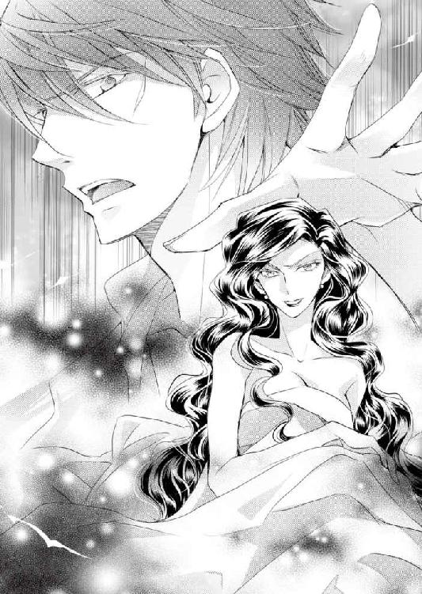
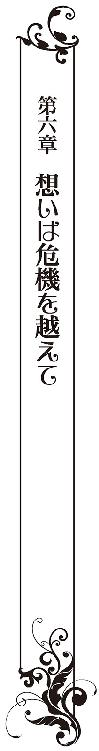
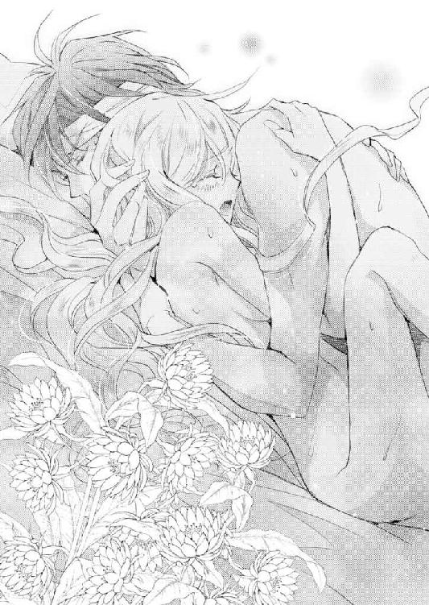

| 伯爵様と蜜月の婚礼【SS付】【イラスト付】 (ロイヤルキス文庫) | |
| 早瀬響子 | |
| 株式会社ジュリアンパブリッシング (2016) | |
この物語はフィクションであり、実在の人物・団体・事件等とは、いっさい関係ありません。
イラスト・椎名咲月
「ヴィルヘルム様......？」
シャルロッテはベッドに横たわる男をのぞき込んだ。思わず笑顔になる。戦乱で傷つき、丸二日、高熱に浮かされていた男──婚約者のヴィルヘルムが目を開けたからだ。その胸や腕には、白い包帯が巻かれている。
「ああ、よかった。私のことがおわかりになります？ シャルロッテですわ......」
そっと額から手を放し、のぞき込んで声をかける。その動きで彼女の金髪が、さらさらと彼の頬や胸に触れた。と、彼が激しく咳き込んだので、急いで毛布をめくり、その筋肉の盛り上がった裸の背をさする。彼が着ていたシャツは血や泥で酷く汚れ、ぼろぼろだったので、ここに運び込まれた時に脱がせていた。
「......」
何とか咳がおさまると、彼は瞬きをしてこちらを見つめ直した。切れ長で褐色の瞳が、焦がれるような切ない表情を浮かべてこちらを見ている。端正な形の唇がわずかに動いた。そしてその視線が、シャルロッテの大きな、サファイアブルーの瞳と真っ向から合った。
──え、っ......？──
とたんに、ドキン、と胸が高鳴った。
「ヴィルヘルム様......」
シャルロッテは現在十八歳だが、ヴィルヘルムと婚約したのは二年前、彼が二十二歳、シャルロッテが十六歳の時だった。けれどそれはヴィルヘルムが戦地に赴き、不在だった時に彼の父、マヌエルが決めた、形だけのものだった。そしてそれまでヴィルヘルムは、同じ領地内とはいえ別の館に住む、年の離れたシャルロッテには全く興味を示さなかったのだ。こんな熱い瞳で見つめられたことも、そしてそれにときめきを感じたのも初めてだった。
もともと端正なその顔は、四年間の戦地での苦難のためか、以前より痩せて頬がそげ、引き締まって見えた。その上、今、傷ついているのとは反対側の、左のこめかみの辺りから頬にかけて、古いがかなり深い傷の跡が白く残っていて、それがかえって彼の容姿をさらに精悍な、強い印象にしている。その瞳は、いつも他人に対しては冷笑的で、からかうような笑みを浮かべていたのに、今はそれもなく、かわりに、どきりとするような真剣な眼差しでこちらを見つめてくる。
──どうして......？ まるで、クリストフに見つめられた時みたい......──
一瞬、もう既に亡くなった筈の、シャルロッテが密かに慕っていたヴィルヘルムの弟の面影が脳裏に浮かんでしまう。
ここ、ヨーロッパの中部からやや東に位置しているラインラント王国では、国境を接している異教の国イラム教の大国、アッダール帝国との戦が既に数十年も続いていた。
その為、この国の王族と貴族は、成年になるとその戦地に赴き、異教徒と戦うことが義務とされていた。四年前、ラインラントの名門貴族、ロッテンシュタイン伯爵家の嫡男であるヴィルヘルムもその決まりに従い、一歳年下の異母弟、クリストフとともに戦いに赴いたのだった。
二人を見送った当時、シャルロッテは十四歳だった。彼女は同じくラインラントの名門貴族、ヴァイツェンベルク子爵家の一人娘だったが、生まれてすぐに母を、十二歳の時に子爵だった父を亡くし、相続した土地と財産とともに遠縁のロッテンシュタイン家に引き取られたのだ。
当時、ロッテンシュタイン家の当主は、ヴィルヘルムたちの父、マヌエルだった。彼はシャルロッテを自身の領主の館ではなく、領内から離れたところに持っていた小さい館を手入れしてそこに警備兵を派遣し、彼女を乳母や侍女たちとともに暮らせるようにしてくれた。
それは、ヴィルヘルムとクリストフと、どちらの母も既に亡くなっていて、領主館に女主人がいなかったこと、さらに、ヴィルヘルムには既に愛人のカテリーナがいて、彼女が何年も前から領主館に同居していたので、シャルロッテを迎え入れるには少々ふさわしくない環境だったからだ。
そういう状況だったので、ヴィルヘルムは、ほとんどシャルロッテを顧みなかったが、一つ下の弟のクリストフは両親を亡くしたシャルロッテを不憫に思ってくれたらしい。時折彼女の館を訪れ、勉強を見てくれたり、季節の花や狩りの獲物を届けてくれたりした。シャルロッテはそんな彼を兄のように慕っていた。彼がマヌエルの愛人の子、いわゆる庶子で、ロッテンシュタイン家ではやや軽んじられた扱いだということ、特に兄のヴィルヘルムは弟を敵視していたらしい。
──けれど、そんな兄弟たち、ヴィルヘルムとクリストフの赴いた先での戦いは、これまでになく長く激しいものとなり、兄弟が戦地に赴いてから二年後、その戦火に巻き込まれ、二人の行方はわからなくなってしまった。そのさなか、自身も病に倒れたマヌエルは伯爵家の将来を案じ、息子が不在のまま、跡継ぎのヴィルヘルムと、シャルロッテの婚約を決め、国王ヨハン四世にもそれを承認して貰った。さらにマヌエルは、治安の問題からシャルロッテを自身の領主館に引き取り、戦地の息子たちに、婚約の件について書いた手紙を送った。それにはシャルロッテの手紙も同封されていた。それまで何度か手紙のやりとりは出来ていたのだ。
けれど、彼らから返事はこなかった。マヌエルやシャルロッテはその後も何度か手紙を送ったが、戦局の悪化でそれきり連絡は途絶えてしまった。シャルロッテがマヌエルの死を知らせた時も、返事はなかった。
──そして突然、ヴィルヘルムからの手紙がシャルロッテの元に届いたのが、半年前──二人が戦地に旅立ってから、三年半が過ぎた頃のことだった。それによると弟のクリストフは戦死、従っていた部下たちもちりぢりになり、自分だけが生き残ったが重傷を負い、しばらく動くことも出来なかったということらしい。
さらに長い間不在にした詫びと、婚約や父の死についてはかなり後になって届いた手紙で知ったこと、婚約については嬉しく思うこと、──そして何とか、帰れる身体になったので、今年の冬の初めには領地に帰還できそうだ、ということが書かれていた。
シャルロッテはクリストフの死を知って密かに涙を流し、悲嘆にくれたが、とにかくヴィルヘルムが帰ってくることにはほっとした。当主の不在で、領地は戦乱で荒廃して大変なことになっていたし、領主の館に居座っているカテリーナや、マヌエルの死後、同じく館に乗り込んできたヴィルヘルムの叔父、ヤーコプが当主気取りで領民たちを圧迫し、専横を振るっていたからだ。ヤーコプは現国王、無能なヨハン四世の宮廷でのお気に入りの家臣で、それを笠に着てやりたい放題だった。
マヌエルが亡くなった時、まだ十六歳になったばかりだったシャルロッテは、それでも領民たちを庇って必死に抵抗した。心細い暮らしの中で、領民たちが自分に示してくれる素朴な敬意は、忠実な乳母や侍女たちとともに、シャルロッテの大きな心の支えになっていた。
けれど、とうていかなわなかった。あげくに、ヴィルヘルムの手紙が着いた直後、シャルロッテは領主の館を追われ、この半年間は十二歳の頃から育った、小さい館にほとんど監禁状態で押し込められていたのだ。ただ、幸い監視の兵士たちはシャルロッテに同情的で、彼女がそれでも疲弊した領民たちの為に、アンナや侍女たちとともに薬などを手配して手助けするのを、見て見ぬ振りをしてくれていた。
──正当な領主であるヴィルヘルム様が戻ってきて下さったら、少なくともこの領地を、ヤーコプ様の自由にはさせないはず......──
シャルロッテは心からそれを願っていた。
──けれど彼の帰還ですら、危険に満ちたものだった。長年続いた戦乱でラインラントはすっかり疲弊してしまい、治安が酷く悪化していた。その為、ロッテンシュタイン家の領地に入る直前、ヴィルヘルムが自身の警護のために、部下たちの代わりに雇っていた傭兵たちの一団は、夜盗の集団に襲われて逃げ出してしまったのだった。
ヴィルヘルムはこの時、まだ傷が癒えきらず、熱病にもかかっていた。それでも一人残って戦い、新たに傷つきながらも夜盗たちのほとんどを撃退したが、駆けつけた領民たちの助けが無ければ、そのまま倒れて死んでいたかもしれない。
戦乱が続く中で、ヤーコプが全く当てにならない為、領民たちは密かに彼の目を盗んで自警団を作っていた。彼らがシャルロッテに事態を知らせたのだった。
「姫様！ 御領主様が......ヴィルヘルム様と思われる立派な騎士が、姫様の館の近くで夜盗と戦っておられます！ 我々も加勢し、大方は追い払われたようですが、ひどく傷を負っておいでで......」
聞いた途端、シャルロッテは愕然としたが、すぐに心を決めた。
「わかりました。すぐにその方をこの館に運んで下さい！」
シャルロッテは彼らに頼み、倒れた彼を何とか自分の館に連れてこさせたのだった。監視の兵士たちには、夜盗に襲われた者がいたので保護した、と伝えた。
──どうして私の館の近くの道を選んだのかしら。領主館に真っ直ぐ向かう方が広くて安全な道なのに......──
ふと、そんな疑問が胸をよぎったが、担架で運び込まれてきた彼を見たとたん、それどころでは無くなってしまった。
「えっ......」
彼は確かに、ヴィルヘルムにそっくりだった。だがクリストフのようにも見えたのだ。
もともと兄弟は髪も瞳の色も同じで、背格好もほぼ同様だった。実は、ほんのわずかだが、クリストフの方が背が高く、胸板も厚かった。だがその容姿は、戦場での暮らしの為か、シャルロッテの記憶からはかけ離れて見えるくらいに変わっていた。そして彼は、戦うためにその手に持っていた長剣と、腰に差していた短剣、そして身につけている服と甲冑以外は一切何も持っていなかった。後は夜盗に奪われてしまったが、剣だけは死守したらしい。
短剣といっても、四十センチほどあるものだった。美しい金細工で、その柄には、ロッテンシュタイン家の証である翼を広げた鷲の紋章が刻まれ、その中心には伯爵家の由来である真紅のルビーがはめ込まれている。伯爵家の当主、もしくは跡継ぎが持つもので、旅立ちにあたって、当時の当主マヌエルがヴィルヘルムに持たせたものだった。
「貴方は......ロッテンシュタイン家当主、ヴィルヘルム様でいらっしゃいますか」
連れてこられた時、男はまだ意識があった。シャルロッテは剣を確かめ、甲冑を外され、寝台の上に横たえさせられた彼に、そう問いかけていた。彼は目を見開いてシャルロッテを見つめ、小さく頷き、それからぐったりと意識を失ってしまったのだった。
彼が胸や肩、腕、こめかみなどに傷を負っているだけでなく、高熱を出していることにすぐに気づき、シャルロッテは乳母のアンナや侍女たちとともにその身体に包帯を巻き、汗を拭いて懸命に看病した。剣は二本とも、寝台のすぐ隣の台に、丁寧に置いた。そうしていると彼の魂を守る、守り刀のようだった。
──それともう一つ、彼が持っていたものがあった。服を脱がせたところ、彼は小さな革袋に入れた何かを首にかけていたのだ。開けてみるとそれはシャルロッテの手紙だった。ヴィルヘルムとクリストフの父、マヌエルが亡くなったことを知らせる手紙だ。中には他にも、以前の手紙にも書いた、ヴィルヘルムと自分との婚約を生前のマヌエルが取り決めたこと、そして、ずっと領地で帰りを待っていること、さらにマヌエルが亡くなってすぐに、その弟のヤーコプが宮廷から領地に乗り込んできて、不安を感じていること、などが書かれていた。
シャルロッテは恥ずかしく思いながらも嬉しかった。彼は自分に興味は無いと思っていた。でも、手紙を大事に持っていてくれたのだ。
そしてこの二日間、彼の意識が戻らなかったため、ほとんど彼女はつきっきりだったのである。
なのに今、ついヴィルヘルムと目があったとたん、クリストフのことを考えてしまった自分に、シャルロッテは強い罪悪感を感じた。
──こうして、婚約者のヴィルヘルム様が、命からがら帰って来て下さったというのに......。そしてようやく意識を取り戻されたのに、私ったら......。一体、何を考えているの！──
自分を戒めながら小さくかぶりを振る。けれど次の瞬間、
「きゃっ......」
彼が一層激しくその瞳を光らせたかと思うと、懸命に手を上げ、伸ばして、シャルロッテの華奢な身体にすがってきたのだ。それまで熱病に侵され、意識不明で眠り続けていたとは思えない強い力だった。彼女はそのまま、男の顔のごく間近まで引き寄せられた。彼の上に覆い被さっている体勢である。
「......！」
あっと思う間もなかった。シャルロッテの唇は、そのまま男の熱い唇と重ねられ、同時に彼の舌が、彼女の唇を割って押し入ってきた。
この時、部屋には二人の他、誰もいなかった。深夜だったため、シャルロッテが館での仕事に追われている乳母や侍女たちを気遣って休ませ、一人で看病していたからだった。
シャルロッテが呆然としている間に、彼の舌はシャルロッテの舌を捕らえ、さらに貪るように舌を吸い上げてきた。
その仕草に、彼女はびくんと震えた。大好きな騎士物語や、乳母たちが教えてくれた恋の歌などで、恋人たちが触れあったり、キスしたりするシーンを想像して憧れたりしていたけれど、こんなものだとは知らなかったのだ。
「......！」
けれど不思議なことに、嫌では全くなかった。それどころか舌と舌が強く擦れ合うことで、彼の熱さや感触がはっきりと伝わってきて、彼の力強い腕の感触と相まって、とても心地よかったのだ。しかも、彼の舌に激しく吸い上げられると、濡れた粘膜同士が擦られ、その感触にぞくぞくとした、これまで感じたことの無い、何かさらに強い感覚を感じてしまった。それは、シャルロッテの背骨の付け根のあたりから全身にこみ上げてきて、まだ誰にも触れられたことの無い柔らかな胸の突起を、つんと硬く尖らせた。
「ンッ、ンンッ......」
唇を重ねたまま、喉の奥からそんな甘い声がこみ上げ、それに気づいてシャルロッテは頬を真っ赤にした。と、その声が聞こえたのかさらに強く引き寄せられ、背に彼の両手が回って抱きしめられた。唇がさらに深く合う。それで感じている部分が強く擦れ、より強い快感がこみ上げてきて、思わずまた声が漏れてしまう。
──そんな。キスって、こんなに感じてしまうものだったの......？──
その事実と、はしたないくらいに感じてしまっている自分に、ただ呆然とする。感じるだけでなく全身が熱くなって、頭がぼうっとしてきてしまう。シャルロッテはこれまで、挨拶以外のキスをしたことはなかった。その身ももちろん乙女のままだ。
「ンッ、ふ......」
だからこそ初めての感覚に、押し流されてしまいそうになり、彼の腕の温もりを感じながら、つい、うっとりと目を閉じてしまった。──と、
「あっ......」
いきなり彼が唇を放したので、シャルロッテははっと我に返った。それまでの口づけの濃厚さを示すかのように、二人の唇は濡れて色づき、その間を細い銀の糸が一瞬、繋いだ。その間もヴィルヘルムは、片時もシャルロッテから目をそらさなかった。熱に浮かされているためか、その瞳はくすぶるように光っていた。
「──ここは、天国ではないのか......？」
視線をそのままに、ヴィルヘルムがそう呟いた。まだ夢の中のような、ぼんやりした声だった。シャルロッテは急いで気を取り直して身を起こし、笑みを浮かべて彼をみた。今、彼を動揺させてはいけないと心に言い聞かせる。
「天国ではありません、ここは貴方の故郷、ロッテンシュタインですわ。そして私はシャルロッテです。貴方は夜盗と勇敢に戦われて、お怪我をされたうえ、高熱を出されて二日間眠っておられたのです」
「シャルロッテ......」
ヴィルヘルムは、まだ彼女を見つめたまま、呆然とその名を囁いた。
「見違えた。なんと美しくなったのか......」
「え......」
その口調の、率直な響きにシャルロッテは呆然となった。シャルロッテは、あまり自分の容姿には自信が無かった。母に似た金髪に卵形の輪郭、青い瞳、なのだが、その瞳が小さな顔に比べて少し大きすぎ、逆に唇は小さくて、年齢よりも子供っぽく見られてしまうのだ。体つきもほっそりとして小柄で、そのわりに胸はふっくらとしている。
ヴィルヘルムの愛人だったカテリーナは、そんな彼女を未熟な小娘扱いし、身体はやせっぽちなのに胸が大きいなんて下品だとしょっちゅうからかったものだ。乳母や領民たちはそんなことは無いと一生懸命に励ましてくれていたのだが、ヴィルヘルムよりさらに一歳年上の黒髪の美女で、成熟した妖艶さを持つ彼女にことあるごとにそう言われると、彼女はどうしてもコンプレックスを持ってしまっていた。それに今は動きやすいように、袖のぴったりとした、簡素なグレーの、飾り気のないウールのドレス姿なのだ。なのに......。
──そんな。いつも着飾ったカテリーナがお気に入りだった彼が、そんなことを言うなんて......──
「あ、ありがとうございます。──さ、どうかお水を、それから薬湯をお飲み下さい。ずっと熱に浮かされて眠っておられましたから、喉が渇いておいででしょう......」
信じられない思いだったが、それを抑えて笑顔でそう言った。貴婦人としての教養と礼儀をきちんと躾けられた為に、シャルロッテは常に礼儀正しく、淑女らしく振る舞うよう自分を戒めていた。シャルロッテはまず彼を支えて起こしてやろうとしたが、ヴィルヘルムはそれを断り、覚束ない様子ながら自分の手で支えて起き上がった。その様子もヴィルヘルムらしくなくてシャルロッテはびっくりした。彼は人に奉仕されるのが好きだったからだ。
そして、その身体は傷ついていたが引き締まり、発達した筋肉で覆われて、以前よりずっと精悍になった印象があった。日焼けした身体の、肩や腕、頭に包帯が巻かれたその姿は、何かセクシーで魅力的だった。
改めて、つい彼の裸体に見とれ、シャルロッテはまた頬を染めてかぶりを振った。なんてはしたないことを、と、想いを抑えて彼の背中を急いでクッションで支え、陶器の水差しから揃いのコップに水を注いで差し出した。ヴィルヘルムは貪るように飲んだが、その後、激しく咳き込み、せっかくの水を半分がたこぼしてしまった。シャルロッテにその水がかかる前に、何とかコップをベッド脇の小卓に置いたが、そのままどさりと、再びベッドの上に倒れ込んでしまう。
「大丈夫ですか......！」
シャルロッテは急いで彼の濡れた肌を拭き、背をまたさすった。そして改めてその身体の熱さを感じた。さっきよりもさらに熱が高くなっている。何とか咳は治まったものの、ヴィルヘルムは酷く身を震わせ、酷く苦しげに呼吸していた。
「寒い。寒い......」
そうしながら呟いている。熱が上がる兆しだ。痛ましさにシャルロッテは眉をひそめ、毛布でその身体を丁寧にくるんだ。近くにある暖炉の火が燃えているのも確かめる。ヴィルヘルムはそれでもまだ震えていた。
──どうしよう。この、煎じた薬湯を飲めば、咳も熱も随分と楽になるはず。でもまた今みたいにむせてしまったら......──
シャルロッテは苦しげに喘ぐ彼を見、すぐに心を決めると、薬湯を口に含んだ。そして金髪をかき上げると、先ほどとは違い、自ら進んで彼の苦しげに開いた唇に、自分の唇をあてがった。そのまま口移しに薬を飲ませる。
その感触に、今度はヴィルヘルムの方が驚いたようだった。だが、彼はすぐに目を閉じてされるままになっていた。こくりとその喉が動く。今度はむせることは無く、彼が再び、こちらを見つめた。シャルロッテは思わず震えた。この口づけでも、身体が熱くなってしまうのを感じていたが、そんな自分を恥じて身を起こし、彼を励ますように笑みを浮かべた。
「よかった。これで少しは楽になる筈です。さあ、もう一度お休みになられてください。今、毛布をもう一枚、......！」
そう言って彼から一旦離れようとした時、いきなりその手が伸びてきて、シャルロッテの身体を再度引き寄せた。そのままぐっと両手で抱え込まれる。さっきよりも強い力だった。なのにその手は激しく震えていた。まるで、溺れた者がすがりつくかのようだ。
「行かないでくれ、シャルロッテ......！」
「えっ......」
「どうか、離れないでくれ。お前は、温かい......」
その身体を抱きしめながら、ヴィルヘルムはシャルロッテの肩に、自分の顔をこすりつけるようにした。そのうなじや襟元の露わな部分に口づけてくる。以前、領主館を訪れた時、ヴィルヘルムがカテリーナとこうして戯れていたのを偶然目にした時のことを思い出した。あの時はその淫らさに真っ赤になったのだけれど、今はそうは思わなかった。彼がシャルロッテの肌に直に触れた途端、心からほっとしたような、安堵の表情を浮かべたからだ。
「温かい......。冷たいのは、もう、嫌だ。海の中は、嫌だ......」
海、という言葉にシャルロッテは目を見開いた。確か、ヴィルヘルムたちは異教徒たちと戦うため、船に乗り込んだこともあったはずだ。以前は届いていた手紙にはそうあった。その時の記憶だろうか。海はこの国の北側に位置していて、時に氷の山が流れてくることもあると聞いたことがある。そんな記憶が甦っているなら、彼は今、本当に寒くて凍えているのだろう。
「......」
その時、シャルロッテの心に芽生えたのは、ときめきともまた違うものだった。何だか、腕の中で震えている彼が子供のように見えて、ひどく愛おしく感じていた。その身体を自分の身体で包み込み、守って、自分の肌で温めてあげたいと思った。
──どうして？ 彼は私より、六歳も年上の筈なのに......──
同時にそうも思う。けれど、彼を助けたい、という意思の方が強かった。彼は本当に辛そうに震えていたからだ。
──何をためらうことがあるの。彼は私の婚約者なのだし、こんなにも温もりを求めて震えているのよ。だったら、私に出来ることをしなければ......！──
「ほんの少し、お待ち下さい......」
シャルロッテはそう言い聞かせると、心を決め、一度、そっとヴィルヘルムの手を押さえて身を起こした。その震える身体の上に、とりあえず毛布を掛ける。それから手早く、ドレスの紐を緩め、その白い肌を露わにした。そして、下に着ているシュミーズや下履きも脱ぎ捨てる。
そして、生まれたままの姿になってヴィルヘルムを見ると、彼は目を見開き、食い入るように彼女を見つめていた。そのすがるような眼差しに、彼女はためらいを捨て、素早く彼の傍らに、身を滑り込ませた。彼の顔が、睫毛が触れあうほどに間近になった。
「シャルロッテ......？」
彼の瞳は、信じられないと言いたげに見開かれていた。少年のような表情だ。シャルロッテは頬を染めながらも、そっと言った。
「さあ、こちらに。どうか、その御身を私の身体で温めて下さい。少しは寒くないはずです......」
とたん、ヴィルヘルムは顔をくしゃくしゃにしたかと思うと、いきなりその身体を熱に浮かされた両腕で抱きしめた。
熱い感触と、そしてこれまで感じたことのない男の香りに、シャルロッテはすっぽりと包まれ、一瞬、呼吸が止まった。それでもドキドキする胸を押さえ、されるがままになっていた。
ヴィルヘルムは、熱にくすぶったような瞳でシャルロッテを凝視したが、すぐにその身体を自身の下に敷き込むと、その顔やうなじ、頬に、キスの雨を降らせてきた。熱に浮かされた唇はとても熱く、シャルロッテは震えた。
日に焼けて筋肉に覆われたヴィルヘルムの身体の下で、彼女の身体は一層、透き通るほどに白く、華奢でほっそりと見えた。
──こんな風に激しく、男性は女性を愛するものなの？ そして、それでこんなに感じてしまうものなの......？──
彼の熱い唇が、舌が触れる度に、シャルロッテは震え、何も考えられなくなってしまった。そして、そのたびごとにじんわりと、心の奥底からわき出してくる切ない感覚を抑えることが出来なくなっていた。
「あ、ンッ......」
その時、既に感じて硬くなっている胸の突起を、ヴィルヘルムに吸われ、思わずびくっと身を反らせた。さらにツンと胸が硬く尖り、唇から無意識に切ない声が漏れ、頬が染まる。今までより強く、はっきりとした快感が、背骨の付け根あたりからこみ上げ、全身に行き渡る。それは、シャルロッテの身体の、最奥の秘められた部分にある花芯と花びらを、蜜でじんわりと濡らした。自分の身体が、明らかにこれまでと違った反応をしているとわかる。
そしてその動きで、太ももの辺りに、男の証が触れるのに気づき、はっとした。それは太く固く、さらに熱く怒張していた。初めて触れるものだった。
──彼は、感じている......？──
そう思った時、シャルロッテが真っ先に感じたのは、当惑よりも安堵と嬉しさだった。それは、彼の生命の証だったからだ。
──彼は、私に触れることで感じて......生きている証を示してくれる......！──
目を見開いて彼を見つめる。ヴィルヘルムもまた、最初と変わらぬ熱い視線で彼女を見おろしてきた。褐色の瞳の中に、小さく小さく自分の姿が映り込んでいる。
「今すぐ君を、抱きたい。シャルロッテ......」
視線をそのままに、ヴィルヘルムが囁く。シャルロッテは胸が高鳴るのを抑えることが出来なかった。けれど、急いで気を取り直す。
「でも、そんなことをしたらお怪我が......」
抱きしめ、温めて介護するつもりではあったものの、そんなことをしたら彼の、高熱を出し、傷ついた身体に差し障るのではないか。だが彼は一層強い視線で彼女を見つめ、かぶりを振った。
「大丈夫だ。君を抱いて、その温もりを確かめたいのだ......」
必死な、それでいてどこか切なげな声に、シャルロッテは心打たれた。そしておずおずと頷いていた。
とたんに彼が唇をほころばせ、再び強く抱きしめてきた。さすがに緊張して震える。それが伝わったのか、彼はもう一度身体を放し、真っ直ぐに彼女を見おろしてきた。
「どうか、私を信じてくれ、シャルロッテ。さあ、力を抜いて......」
「......」
シャルロッテは目を見張り、その言葉に再び頷いた。そして、その真摯な瞳に釘付けになっていた。
──もしかして、彼は......──
ある思いがシャルロッテの心に浮かんだ。けれど次の瞬間、キスの雨が再び降り始めて、それどころではなくなってしまった。喉に、首筋に、そして胸に、前よりも一層熱を帯びたキスが、シャルロッテの白い肌を濡らしていく。それは薄紅の痕を残し、次第に下に降りていった。そのたびごとに、彼女の花芯と花びらが蜜で濡れていく。
「あ、ンッ......」
胸からみぞおち、臍へとヴィルヘルムの唇が移動していき、次第に熱く、触れ方も強くなっていく。シャルロッテは頬を染めながらも、そっと、彼の身体に手を回した。胸や肩、腕、それに彼の頭を覆った包帯が触れる。その下の傷口に塗られた、乳母のアンナ特製の、軟膏の香りが鼻をくすぐった。ミントを含んだその香りは、シャルロッテも幼い頃から嗅いでいた懐かしいもので、ドキドキする胸を少し落ち着かせてくれた。そこに強く触れないよう、彼の傷に障らぬように気をつける。後で、彼の全ての包帯と軟膏を新しくしてあげようと心に決めた。
「え、あッ......？」
その時、思わず小さく声を上げた。既に感じていた為に、足が少し無防備に開いていたのだが、ヴィルヘルムがゆっくりと、その白い腿に触れ、けれど確かな意思を持ってさらに開かせたのだ。白い双丘と、その奥の秘められた部分が露わになる。そこはこれまでの愛撫で濡れて、ほの赤く色づいていた。恥ずかしさに消え入りそうになったが、その時、彼が視線を向けたまま、呟いた。
「シャルロッテ、綺麗だ......」
とたん、胸のときめきが一層早くなった。ヴィルヘルムはシャルロッテを凝視したまま、指をそっと秘所に触れさせ、花びらをとらえ、広げた。現れた花芯を、優しく指先で愛撫する。彼の息が少し荒くなり、彼女の頬の産毛をそよがせた。
「......！ あ、あンッ......！」
いきなり、最も感じやすい部分に触れられて、シャルロッテはひくりと顎を動かし、声を上げてしまった。胸を唇で愛撫された時よりも激しい刺激だった。けれど彼はためらわず指で愛撫してきた。
「ン、ンッ......」
そっと花芯の中に指を入れられ、震える。それで、その部分が受け入れるところなのだと初めて知った。けれどこれまでに身体を愛撫されていたことで、花芯は色づいてひくひくと震え、柔らかく開き、意外なほどに素直に彼の指を受け入れてしまった。彼の指が、花芯から蜜壺に繋がる内部の肉襞を、優しく擦っていく。その動きに、花芯は蜜を一層わき上がらせ、周囲の花びらまでをぐっしょりと濡らしていった。
──え、ど、どうして......？ そうして中に触れられていると、すごく、気持ちいい......──
「あっン......」
頬を染めながらもうっとりと、シャルロッテは彼を見つめた。声の甘さに自分でも驚く。
と、何故か、ヴィルヘルムは視線をそのままに見つめた。
──え......？ 私の振る舞い......。やっぱり、子供っぽかったのかしら......──
思わず不安がこみ上げてきた。何しろ初めての行為だ。
けれど、彼の表情は一瞬だった。彼は再び、優しい笑みを浮かべてシャルロッテに安心させるように頷きかけると、さらにその白い足を大きく広げさせた。そしてそっと指を引き抜くと、静かに、だがためらわぬ動きで、その花芯に自らの男の証をあてがった。同時に、シャルロッテのほっそりとした腰に手を回し、浮かす。
「ひぁっ......！」
さすがに、初めての衝撃に、シャルロッテは思わず悲鳴を上げた。これまで触れていた指とは比べものにならない、圧倒的な力に満ちた、熱く、そして精悍な感触があった。その怒張した雄根が、花芯を押し広げる。シャルロッテはその力強さにさすがに不安になり、白い顎をひくんと上げ、喘いだ。
「や、あッ、こ、恐い、......！」
その時、胸に心地よい感覚が走った。ヴィルヘルムがシャルロッテの胸の突起を再び含み、舌先で転がしたのだ。同時に、手を彼女の腰や尻に回し、双丘から秘所にかけての感じやすい内股を柔らかく撫で上げ、もみほぐすように愛撫する。
「あンッ......。あ、そん、な......」
そうして丁寧に心地よい部分を触れられると、これまでの行為ですっかり敏感になっていたシャルロッテの身体は柔らかくほぐれていった。それを見計らって、雄根がゆっくりと花芯から、蜜壺へと進入していく。
「う、っ......」
「あぅッ......」
──けれど、初めて受け入れるシャルロッテの蜜壺は、当然とても狭く、入り口はほぐれていたものの、相当な抵抗があった。精悍な雄根に、彼女の内部の肉襞が強く絡みついて擦り上げることになり、二人は同時に、思わず声を上げていた。そして視線が合う。
「シャルロッテ......。ずっと、君に会いたかった。戦場で、よく、君のことを想った......」
その時、彼が視線を向けたまま、そう囁いた。その言葉に、シャルロッテは目を見開き、それから、自分から彼の背に腕を回し、身を寄せた。初めて挿入された為に、上手く言葉が出せなかった。ヴィルヘルムが驚いた様子で目を見張った。
「あぁ、ッ......」
シャルロッテは声を上げた。その動きで、さらに彼の雄根が深く進入することになった。そうなるのはわかっていた。思わずすがりついた腕に力を込める。二人の顔が、睫毛が触れあうほどに近づいた。
けれど、圧迫感は強かったが、痛みは無かった。たっぷりと濡れていた柔らかな花芯と蜜壺は、素直に彼を受け入れていた。そして、お互いの濡れた粘膜が、体内で激しく擦れ合うことで、全身が炎に包まれるような、これまでになく強く熱い快感がこみ上げてきた。
その時、ヴィルヘルムが自分を見つめたまま、耳に囁いてきた。
「どうか、そのまま......。私に、触れていて、くれ。私を、信じてくれ......」
その声は低いが熱かった。シャルロッテは彼を見つめ、懸命に頷いた。彼がわずかに唇をほころばせるのがわかった。
「あっ、ああ、ッ......！」
次の瞬間、ごくゆっくりと、しかし確かな動きで、ヴィルヘルムがシャルロッテの最奥に進入してきた。自身の身体の最も深い部分を、怒張しきった男の証が穿つ。それが信じられなかった。そして、シャルロッテの肉襞は、震えながらもそれを受け入れ、濡れて、彼を包み込んだ。
その感触に圧迫感と、それ以上に激しい快感の波が、背骨の付け根から這い上り、シャルロッテはただひたすらヴィルヘルムの身体にすがりついた。彼の身体は熱く、筋肉に覆われ、触れていると安堵でき、その感覚がとても心地よくて、思わず目を閉じた。そして、
──私は、この人と一番深いところで、繋がっている......──
その、もう一つの想いが、シャルロッテの心を強い歓びで満たしていた。男女が結ばれる、というのはこういうことだったのかと思った。吟遊詩人や物語が、恋や愛を心から賛美し、歌うのはその為だったのだ。そして何か、高いところに上り詰めるような感覚がこみ上げてきた。
「ぅ、くッ......」
その時、ヴィルヘルムも呻いた。彼の雄根が体内で、一層激しく怒張している。シャルロッテは目を開けた。お互いの瞳に、相手が小さく小さく映り込んでいた。彼も同じところに上り詰めようとしているのがわかった。彼の熱さと、優しさをたたえた褐色の瞳に、吸い込まれてしまいそうだった。
──あ......？──
その瞳に、ふと何か、過去の記憶を呼び起こすようなものを感じて、一瞬シャルロッテは目を見張った。だが次の瞬間、彼が再び、身を進めてきた。
「......！」
再度、怒張しきった雄根で最奥を強く穿たれた時、もうシャルロッテは耐えられなかった。無意識に彼を包み込むように腰を動かす。ヴィルヘルムにすがりついたまま、思わずもう一度閉じた瞼の裏が真っ白に灼ける感覚があった。
「う、っ......」
「あ、ァッ......」
二人が頂点に達したのは、同時だった。固く抱き合ったまま、身を反らせ、その快感を感じた後、二人は抱き合ったまま横たわり、そのまま深い眠りについた。
──猫の鳴き声がする......──
温かな、ひどく心地よいまどろみの中で、シャルロッテはぼんやりと思っていた。そして、それと同時に、女の子のすすり泣く声も。
ふっと目の前に、鮮やかな緑の木立が広がった。シャルロッテのお気に入りの、菩提樹の木だ。もうすぐ冬なのに、と不思議に思い、それからこれは夢なのだ、と気づいた。
「どうしよう......」
夢の中で、シャルロッテは十二歳の、幼い子供に戻っていた。菩提樹の梢に登り、その腕に子猫を抱えてべそをかいている。真っ黒な可愛らしい子猫は、シャルロッテの不安を感じるのか、その胸にしがみついて、ミィ、ミィとか細い鳴き声を漏らしていた。
「ごめんね、恐い？ ミミ。私も恐いの......」
そっと下を覗くと、シャルロッテにとっては目も眩むような高さだった。幹の根元に、立てかけてあったはしごが地面に転がっているのが見える。慌てて目をそらした。その動きで身体が揺れ、もう一方の手で木の幹にしがみつく。
事の起こりは、シャルロッテが可愛がっていた子猫が、どうしたことか木に登ってしまい、降りられなくなったことだった。それに気づいたシャルロッテは、慌てて使用人や、護衛の兵士たちを呼ぼうとしたのだが、困ったことに皆、出かけていたのだ。五月の終わり、先日の大雨で、領主館と、この、シャルロッテの住む館の両方の水路が崩れたり、土砂が詰まったりしてしまい、よく晴れたこの日、使用人たちや領民は、マヌエルやその息子たちの指揮の下、総出でそれらの補修や清掃に当たっていたのだ。
「アンナ、私も行く！ お手伝いするわ」
シャルロッテは幼いこともあり、領民たちと仲良しで、彼らの刈り入れなどの作業を邪魔にならないように見に行ったり、村の祭りに加わったりしていた。皆はいつも歓迎してくれたが、そんな折りに乳母のアンナや侍女、従僕たちが、彼らに手を貸すのをよく見ていたのだ。シャルロッテもそのお手伝いをしたこともあった。
──それに、そこに行ったら、クリストフ兄様に会えるかも......──
密かに憧れている、彼の姿を思い浮かべて頬を染める。
父を失った十二歳のシャルロッテは、半年前にその遠縁で隣人の領主であるマヌエル・フォン・ロッテンシュタイン伯爵の元に引き取られた。その時、兄のヴィルヘルムは自分に全く興味を示さなかったが、弟のクリストフは何かと自分に優しい心遣いを見せてくれ、時折シャルロッテが住む館にやって来て、安否を尋ねてくれる。シャルロッテは五歳年上のそんなクリストフを、実の兄のように慕っていた。
だが、アンナはきっぱりとかぶりを振った。
「いけません。とても汚れる力仕事でございます。それに、水も溢れたりいたしまして危険な時がございますからね。姫様をそんなところにお連れすることは出来ません」
乳母のアンナは、赤毛に優しい灰色の瞳の女性で、当時は三十歳ほど。少しふくよかだがなかなかの美人である。乳母として赤ん坊のシャルロッテに仕えて以来、幼い頃に母を亡くした彼女に、使用人という枠を越えて献身的に仕えていた。シャルロッテもそんな彼女が大好きだったが、こういう時は、アンナはそれこそ母親が言い聞かせるように厳しい口調になる。
「そんな、大変なお仕事なら、尚更......」
「その大変さをご存じなだけで、とても嬉しゅうございます、姫様」
「どうかお館でお待ちになっていて下さいませ。おみやげに、領民たちが作ったベリーのパイを、どっさり持って参りますからね。姫様はお好きでございましょう？」
侍女や従僕たちにもなだめられ、シャルロッテは、私はもう、パイで誤魔化されるような子供じゃ無いわ、と抗議したが、邪魔になってはいけないと思い、しぶしぶそれを受け入れた。それでもまだ何人か留守番の侍女たちがいたが、手が足りずに彼女たちも出かけていくことになってしまった。
それで、日課の勉強を済ませた後、シャルロッテは一人で庭を散策していたのだが、その時、子猫の鳴き声を聞いたのである。シャルロッテのお気に入りの、黒い子猫のミミは、木に登ったはいいが、降りられなくなってしまったのだった。育ちかけの子猫によくあることだ。
「ええ、と。ど、どうしよう......」
菩提樹の下で、シャルロッテはおろおろと辺りを見回した。さすがに館は全く無人ではなく、詰め所に行けば留守番の護衛兵もいる。だがそこまで行っている間に、ミミは転がり落ちてしまいそうだった。現に爪を立て、毛を逆立てて、酷く怯えた様子でか細く鳴いている。
それを見て、シャルロッテは意を決し、すぐ近くに畳んで置いてあったはしごを持ってきて、木の幹に立てかけた。そして着ていた白地に緑の花模様のドレスの、スカートの裾をからげると、靴を脱いではしごを登り始めたのだった。こんなことをしたのは初めてだった。
何とか、不慣れながらも一番上の段まで上ったが、子猫のいる枝には届かなかった。子猫は怯えてさらに先の、枝の細い方まで行こうとする。
「ミミ、待って！ じっとしていて、......！ きゃっ......！」
シャルロッテは慌てて、必死で手を伸ばし、枝によじ登って、何とかそこに座った。が、慌てていたため、足を放した時、勢いがついていたのか、そのままはしごが揺れて、下に倒れ落ちてしまったのだ。
「み、ミミ......」
震えながらそれを見、ともかく子猫に片手を伸ばす。と、幸いミミは大人しく、シャルロッテの腕に抱えられ、しがみついた。けれど彼女はそのまま、高い枝の上に、ミミと一緒に置き去りにされてしまったのだった。はしごが無ければ、とうてい下まで降りられない。
「た、助けて！ だれか......。だれか、来てっ......！」
枝にすがり、懸命に声を張り上げたが、詰め所にいる護衛兵たちには聞こえなかったらしい。それに子猫のために片手がふさがっていて、もう片方の手だけで掴まっていなければならず、あまり声を張り上げると、バランスを崩して落ちてしまいそうで恐かった。
「ミミ、お前だけでも降りられないかしら......」
そっと下をうかがうが、とても無理そうだった。ミミは自分の胸に、爪を立ててしがみついている。どうしよう、と思った。
──このまま皆が帰ってくるのを待つしか無いかしら。でも、今日は遅くなるって皆が言っていたし、それまで、私、こうしてこの枝に掴まっていられるかしら......──
「ひっく......」
ミミの鳴き声と、じっと自分を見る青い瞳を見ていると、自分まで心細さがこみ上げてきて、シャルロッテは小さくしゃくり上げてしまった。駄目だ。私がしっかりしないと。この子を何とか助けないと......。そう思って、小さくかぶりを振った時、
「──どうした？ シャルロッテ。そんなところで」
不意に、思いがけない声が下で聞こえ、シャルロッテは目を見張った。慌てて下を見ると、クリストフがこちらを見上げている。
「クリストフ兄様！」
とたん、安堵がこみ上げてきて、シャルロッテは本当に泣きそうになった。今まで自分のことで一杯一杯で、彼がやって来たのにも気づかなかった。馬を館の入り口で繋ぎ、徒歩で中に入ってきたのだろうか。どうして彼がここにいるのか、と思ったが、ともかく急いで助けを求めた。
「あの、お願い。どうかミミを助けて下さい......！」
「わかった。それに、君も助けた方が良さそうだ」
クリストフはシャルロッテや周囲の様子から、何が起こったのかだいたいのことを悟ったらしい。すぐに笑顔で頷くと、さっと木の幹に手をかけ、器用によじ登ってきた。はしごも使わず、身軽な様子である。そしてすぐに、シャルロッテと子猫のいる枝に腰掛けた。
「え......すごい」
その軽々とした身のこなしに、シャルロッテは呆然とした。
「子供の頃はよくこうやって、木登りをして遊んだものだよ。さ、まず子猫を」
クリストフはまず子猫を抱え、するすると降りていった。そして地面に下ろしてやると、またすぐに上ってくる。シャルロッテがあんなに苦労した木登りが、彼にとっては何でもないことのようだった。
初夏を思わせるような日差しの中、水路の修復の指揮をしてきた為だろうか。クリストフはいつもより軽装だった。白のシャツに黒のベストだけ、下もボトムで、腰に吊った普段使いの剣が無ければ、まるで農民のような格好である。だがそれが、シャルロッテにはとても素敵で、親しみやすく思えた。暑いのか、シャツの袖をまくり上げ、胸も少しはだけていて、日に焼けた引き締まった肌が露わになっている。それを見ていると、何だかドキドキしてしまい、慌てて尋ねた。
「あの、クリストフ兄様は、どうして、ここに？」
「アンナが、姫様が一人でお留守番していて寂しがっていると言ってね。今、皆は昼で休んでいるから、今のうちにと様子を見に来た。来て良かったみたいだな。......君は、その子猫を助けようとして、こんなことになったのかな？」
クリストフは、下に倒れている倒れたはしごとシャルロッテを見比べて笑った。シャルロッテは頷き、真っ赤になった。はしたない娘、って思われてしまったかしら......。いつまでも子供気分が抜けない小娘、ってカテリーナにも言われたし。ドレスもお気に入りだけど、薄手の白のモスリンに、緑の草花の模様の少し子供っぽいものだし......と、恥ずかしくなる。
──と、その頭に、軽くクリストフの手が触れ、シャルロッテは心臓が飛び上がってしまった。
「君はとてもいい子だ。シャルロッテ」
クリストフはこちらを見て、優しく微笑んでいた。
「え......」
「でも、そういう時は、無理をしたらいけないよ。今回は誰もいなかったから仕方ないけれど、誰かを呼んだ方がいい。君まで怪我したら皆が......特にアンナたちが、とても心配するだろう？」
「ええ。でも、ミミがすぐに落ちてしまいそうだったの」
「そうか......。だから君は、とっさに自分で助けようと思ったんだね」
クリストフは笑いながらその頭を撫でた。その瞳が、シャルロッテを見つめる。
「ちょっと無茶だったかもしれないけれど、それはとても勇敢で、優しい行為だよ。何も考えずにそんなことが出来たなら、それは君の本当の姿なんだろうな」
「......」
そう言うクリストフの瞳はとても真剣で、シャルロッテは頬を染め、うつむいた。そんな風に誉められたのは初めてで、何だか嬉しかった。そして、クリストフはどうしてそんなことを言うのだろう、と思った。
「──さ、おいで、シャルロッテ。今度は君を背負って降ろすよ」
「え、え!? そんな、大丈夫です！ 私、重いし、そんな、はしたない......」
「はしごで一人で降りるより、その方が安全だよ。さあ」
クリストフが器用に枝の上で背を向けてくれて、シャルロッテは恐る恐る手を伸ばし、彼の背に掴まった。彼が伸ばした手を掴んでくれて、支えてくれる。その背にすがったとたん、ほっと安堵のため息が漏れた。彼の背は広くて温かく、それが頬に触れるだけで安心できた。クリストフが笑う声が聞こえて、また頬が染まった。
「さ、しっかり掴まっていなさい」
「はい......！」
シャルロッテがしがみついているのを確かめると、クリストフはすぐに下に降り始めた。さすがに今度は、彼女を背負っているので、身軽く、とはいかなかった。
「ごめんなさい、クリストフ兄様。重いでしょう......」
「そんなことはないよ、ゆっくり降りるからね」
言いながら、彼は二人が乗っていたところよりも一つ下の枝を掴んだ。先が既に折れて無くなっていて、根元だけが残っている枝だった。──その時、
「キャッ......！」
「うわ、何だっ......!?」
バサバサという羽音とともに、いきなり鴉が数羽、こちらに向かってきた。クリストフが首を振って威嚇すると、さっと逃げる。彼は上を見、顔をしかめた。
「いかん、この木に巣があったか」
「え、ど、どういうこと......」
「この季節、鴉の子供が孵化するんだ。それで親鳥は大変神経質になる。どうやら餌を取りに行っていて、戻ってきて私たちに気づいたようだな」
「そんな......。あっ！」
シャルロッテは次の瞬間、また悲鳴を上げてしまった。一旦逃げたと思われた鴉たちが、今度ははっきりとシャルロッテに向かってきたからだ。明らかに弱い方を攻撃しようとしている。初めて間近で見る、黒い大きな鳥に、シャルロッテは怯えてしまった。
「危ない、シャルロッテ。顔を庇って、──うわっ......」
シャルロッテは思わず強くかぶりを振ってしまい、それがクリストフにぶつかって、身体のバランスが崩れてしまった。それでシャルロッテを気遣ったクリストフは、手がおろそかになり、シャルロッテを背負ったまま、下にほとんど落ちるような形で飛び降りることになった。
「きゃあああっ！」
「......っ、つう......」
衝撃があり、はっと気がつくと、二人は菩提樹の下の、芝生にいた。シャルロッテはまだ、クリストフに背負われたままで、自分の身体の下に彼がいた。芝生にうずくまった姿勢で、彼はシャルロッテを見つめた。シャルロッテは慌てて彼の背から降りた。
「怪我はないか、シャルロッテ」
シャルロッテは何度もこくこくと頷いた。実際痛むところも傷ついたところも、全く無かった。ただ、自分のせいでクリストフが木から落ちてしまったと血の気が引いた。
「クリストフ兄様、ごめんなさい。私のせいで、ごめんなさいっ......！」
シャルロッテは震えながら彼をのぞき込んだ。と、彼はシャルロッテを見て笑みを浮かべ、すぐに立ち上がった。蒼白なシャルロッテをなだめるように手を上げ、軽く足踏みしてみせる。
「平気だよ。予想外のことで、思ったより高いところから飛び降りることになってしまったけれどね。最初からそうするつもりだったんだ。ほら、足もくじいていない」
「だって......。あ、血がっ......！」
シャルロッテは悲鳴を上げた。見ると、クリストフの手首から右腕にかけて、大きな切り傷が出来ていた。そこから血が、ポタポタと滴っている。掴まっていた枝の、裂けた部分で傷つけたのだろうか。
「ああ、こっちも大丈夫だ、これくらい......」
安心させようと、手を背後にやろうとしたが、シャルロッテはそれより早くその手を掴み、ハンカチを取り出した。クリストフが目を見張った。
「シャルロッテ、よしなさい、綺麗なレースのハンカチが......」
「ううん、兄様の方が大事。ね、座って下さいな」
そうしてクリストフに、芝生の上に座って貰うと、シャルロッテは急いで傷口を拭い、ハンカチで縛った。そうしながら、シャルロッテの手は細かく震えていた。クリストフの傷は思ったより深く、血がなかなか止まらなかった。シャルロッテは泣きそうになり、改めて謝った。
「ごめんなさい、兄様。私のせいで......」
その時、クリストフは傷ついていない方の手を上げ、また、そっとシャルロッテの頭を撫でた。そして、彼女が傷口を縛り終わったのを確かめて、そっと立たせ、励ますようにその顔をのぞき込んだ。安心させるように笑いかけてくる。
「そんな顔をしないでくれ、シャルロッテ」
「でもっ......！」
「私は、君に怪我が無くて、本当に良かったと思っているんだ。こんな傷くらいなんともないよ、すぐに治る。どうかこのことは皆に言わないでおくれ。──それに、私のことを、そんなに心配してくれて、ありがとう」
その言葉を聞き、褐色の瞳を見つめ返したシャルロッテの青い瞳から、涙がぽろぽろと溢れ出た。クリストフは驚いて、慌ててシャルロッテの身体を抱え寄せた。
「シャルロッテ!? どうか、泣かないでくれ......」
「姫様......！ クリストフ様も。どうかなさいましたか」
その時、ようやく気づいたのか、詰め所の護衛兵たちが、足早に駆け寄ってきた。さらに子猫のミミが、鳴きながらシャルロッテの足元にすり寄ってきた。クリストフがそれを見、笑みを浮かべた。
「兄様......！」
シャルロッテは思わず、彼にすがりついた。ミミがまた足元で鳴いた。
──大好き！ 大好きよ、クリストフ兄様......！──
自分の頭を撫でてくれるクリストフの手にうっとりしながら、シャルロッテは心からそう思っていた。
＊ ＊ ＊
「──兄、様......？」
──口にした自分のその声で、シャルロッテはふいに目覚めた。その視界にヴィルヘルムの寝顔が飛び込んでくる。
思わず口を押さえた。一気に現実に引き戻される。カーテンの隙間から明るく、朝の光が差し込んできていた。そして自分は全裸で、男性との行為の痕跡が、その身体に残されている。夕べ何が起こったかが、一気に脳裏を駆け抜けた。
──そんな......！ こんな夢を見てしまうなんて......──
罪悪感がこみ上げる。だが彼はぐっすりと眠っているようだった。思わずほっとして、それも済まなく思い、そっと額に手をあてがう。幸い熱は引いていた。呼吸も安定している。今度は心底ほっとして、シャルロッテは大きくため息をついた。それからそっとベッドから抜け出し、急いで下着とドレスを身につける。昨日の行為の証か、微かに身体の奥が痛んだが、耐えられない程ではない。シャルロッテは頬を染めた。髪も自分で整え、昨日と同じ服装になる。
──その時、また、猫の鳴き声がして振り向いた。もうすっかり大人の、ほっそりと綺麗な、落ち着いた雌猫になったミミが、ベッドに上ろうと細く甘えた声を出している。
「ミミ......」
あんな夢を見たのは、この子のせいかしら、そう思った時、ミミはひょい、とベッドの上に飛び乗ってきた。ヴィルヘルムを起こしては、と、慌てて降ろそうとしてはっとなった。ミミは、彼を見ると嬉しそうに目を細め、ゴロゴロゴロと喉を鳴らして、まだ眠っているその顔に身をすり寄せてきたのだ。
──えっ......？──
シャルロッテは目を見張った。ミミは警戒心が強く、シャルロッテやアンナ以外には、特に男性には全く懐かない猫だったのだ。けれどクリストフだけは別だった。
「助けてやった恩を忘れないのか。賢い子だな」
クリストフはそう言って笑い、館に立ち寄る度にミミを撫でていた。それに、ヴィルヘルムは、犬や猫が嫌いで、動物たちの方もあまり彼に近寄ることが無かった......。
シャルロッテは、ミミを抱き上げて床に降ろした。そして、彼の右手をそっと手に取った。彼がこの館に運び込まれた時、傷ついた彼の姿に驚き、彼女やアンナ、侍女たちと、皆で手当てした。その時、侍女の一人がそこに包帯を巻いていたことを覚えている。その時は、もっと深手の胸や肩の傷に気を取られていたが、今、その腕の包帯が、行為の為か少し緩んでいた。
「......！」
そこから覗く、古い傷痕にシャルロッテは息を呑んだ。間違いなかった。あの時、木の枝で傷つけた痕だ。それでは、彼は......。
その手を取ったまま、彼を振り向いたシャルロッテの心臓が跳ね上がった。彼が、目を開いてこちらを見ていたのだ。
「貴方は......クリストフ？」
彼を凝視し、そう、シャルロッテは尋ねていた。彼──クリストフもまた、シャルロッテを見つめ返した。
「......そうだ。騙していて、済まなかった」
深く哀切な声で、彼はそう言った。身を起こし、深く頭を下げる。
そして、その声を待っていたかのように、ミミが再びベッドに飛び乗り、彼の胸にすり寄ってきた。クリストフは横たわったままそっと、ミミの顎の下を撫でた。ミミは心地よさそうにうっとりとしている。間違いなく、彼の仕草だった。
呆然と、彼と向かい合いながら、シャルロッテは、自分でも知らないうちに強くかぶりを振っていた。すっかり混乱していた。
「どうして......。どうして貴方は、ヴィルヘルム様だと名乗ったのですか......」
その言葉に、クリストフが口を開きかけた時、廊下から声が聞こえてきた。
「──ヤーコプ様、おやめ下さいっ......！」
「まだ姫様も、ヴィルヘルム様も休まれておいでで、きゃっ......！」
バタン、と、隣室の扉が乱暴に開く音とともに、アンナや侍女たちの悲鳴が上がる。シャルロッテもクリストフも息を呑んだ。
「やかましい！ この領地を今、治めているのは誰だと思っている!? 何故、俺の許しも得ずに、奴をこちらの館に運び込んだ！」
それを圧して、妙に甲高く耳障りな男の声が聞こえてきた。クリストフとヴィルヘルムにとっては叔父にあたるヤーコプだ。それと一緒に、あざ笑うかのような女の声も響いた。カテリーナだった。
「そうよ、大方、あの小娘の差し金でしょう。あの子ときたら、こっちの館に閉じ込めても、生意気な振る舞いばかりしているのね。名ばかりの婚約者のくせに、いい気になって......！」
「......!?」
シャルロッテは息を呑んだ。二人の声は、荒い足音とともにこちらに向かってくる。
何故こんな時に、と思ったが、確かにこの件が、もう、彼らの耳に届いていてもおかしくない。自分が二人に無断で、彼をここに運び込んだことを怒っているのだろうか。それにしても、領主館で、普段自堕落な生活を送っているあの二人が、こんな朝早くからこっちの館まで押しかけてくるなんて。よほど彼の帰還が脅威なのだろう。
何にしても、今、絶対に二人をクリストフに会わせるわけにはいかなかった。それに、アンナや侍女たちが......。
「シャルロッテ、今のはヤーコプ叔父上と、カテリーナか!? やはり......」
「しっ。どうか、貴方はそのまま動かないで下さい。今、部屋の鍵をかけます」
シャルロッテはクリストフを制すると、とっさに彼に毛布をかぶせた。
「えい、使用人の分際でまだ逆らうか！ どけ、このクソ女ども！」
また、ヤーコプの怒鳴り声と何かが壊される音、それに悲鳴がすぐ近くで響き、シャルロッテはクリストフの返事を待たず、鍵をかけて廊下に飛び出した。
──とたん、ヤーコプやカテリーナと鉢合わせすることとなった。二人とも高価な衣装を自堕落に着ている。特にカテリーナは、濃い紫に金糸の刺繍をした派手なドレス姿なので、鴉の濡れ羽のように艶やかな黒髪、そして抜けるように白い肌が際立って見えた。化粧も濃く、高額な香水の香りがぷんぷんする。さらに二人は極上の葡萄酒を浴びるほど飲んでいるらしく、その匂いもあって近寄ると咳き込みそうだった。
ヤーコプはヴィルヘルムたちの父、マヌエルの異母弟になる。母は後妻で、隣国フローリアンの貴族の娘だった。フローリアンは華やかな宮廷文化の中心とされ、尚武の風土であるラインラントとはかなり隔たりがある。ヤーコプはその出自を自慢し、いつも華美な身なりをしていた。国王、ヨハン四世と気があったのは、彼がやはりフローリアンの血を引いている為もあったようだ。
そして、彼らの背後には、ついてきたらしいヤーコプの取り巻きの貴族の子弟たちが、金で雇われた傭兵たちとともに侍女や従僕たちを小突いて笑っている。彼らはシャルロッテの抗議も聞かず、領主館に入り浸って日夜浴びるほど酒を飲み、大騒ぎをしているのだった。
そして、彼らを必死に止めたのだろう、その足元でシャルロッテの乳母のアンナがうずくまっていた。乱暴されたのか、髪が乱れ、ドレスが汚れていた。周りの侍女たちも怯えながらも、彼女を必死に庇っている。
「あっ、姫様！」
侍女の一人が声を上げ、皆がこちらを見た。
「アンナ！ 何てこと......」
思わず駆け寄ろうとしたシャルロッテに、アンナが悲痛に叫んだ。
「お逃げ下さい、危険です、姫様！」
「早く、お部屋にお戻りになって......」
彼女を助け起こそうとしながら、侍女や従僕たちが口々に叫んでくる。皆、シャルロッテを案じていた。
シャルロッテの胸に怒りがこみ上げた。彼女はもちろん逃げずに毅然と顔を上げ、ヤーコプの前に立ちふさがって真っ向から相対した。
「ヤーコプ様。一体どうしたことです。ここは私の館です。私の乳母や侍女たちに、何という無体なことをされるのですか、おやめ下さい！」
その態度に、本来気の弱いヤーコプは少し呑まれたようになった。他の貴族の子息は背後でニヤニヤ笑っている。その、すぐ隣でカテリーナが声を上げた。
「おだまり、生意気な小娘。お前が得体の知れない男を引っ張り込んだと言うから、こっちまで来てやったのよ！ 全く、お付きの者まで無礼なのね！」
「そ、そうだ。そもそも生意気が過ぎるからとこの館に押し込んでおいたのに、お前は身勝手な振る舞いばかりしおって！ 聞けばその男はヴィルヘルムの名を名乗っているそうだな。どうせ領主の名をかたる偽物だろう！ さっさとその男をこちらに寄越せ。さもなくば、お前の勝手な振る舞いで、不審者を館に引き入れたと、国王陛下に訴え出てやるぞ！」
実は、ヴィルヘルムが帰還する、と手紙が届いた時、ヤーコプはひどく動揺して、偽物に違いない、と叫んだのだ。
確かにラインラントは今、国内全体が戦乱で疲弊している。その上、ヨハン四世が病に倒れたために内政は大混乱状態になっていた。その為、あちこちの領地で、戦のため不在にしていた領主が帰ってきた、いやそれは偽物だった、という騒ぎが起こっていたのだ。そして、ヤーコプの言動や態度に抗議したシャルロッテは、ただの婚約者の分際で生意気だと糾弾され、それまで住んでいた領主館を負われ、自身の小さな館に追放されてしまったのである。
──駄目だわ。こんな連中に、絶対にクリストフ様を引き渡すわけにはいかない！──
「お断りいたします、ヤーコプ様」
思いを新たに、必死に自分を奮い立たせ、シャルロッテはきっぱりとそう言った。ヤーコプは目を見張った。
「何っ......!?」
「お前、領主に逆らうつもりなの!?」
「貴方は御領主様ではございません、ヤーコプ様。マヌエル前領主様亡き後は、彼が遺した遺言書にあるとおり、その嫡男ヴィルヘルム様が跡継ぎでございます。私はその方の、国王様も認めた婚約者でありますから、まず何よりその方に従うつもりです」
シャルロッテの毅然とした言葉を聞いた途端、ヤーコプは怒りで顔を紫色にした。シャルロッテがこう主張すると、彼はいつも怒るのだ。もともとはハンサムな顔なのだが、酒や放埒な生活が災いして、かなりすさんだ様子の面差しである。
そんな彼に構わずシャルロッテは続けた。昨夜と同じく質素な飾り気のないグレーのドレス姿だったが、その小柄で華奢な身体はしゃんと胸を張り、サファイアブルーの瞳は強い光をたたえていた。
「そして今、ここにおられる方は、私が助けた際にヴィルヘルム様だと名乗られました。そのお顔は確かにヴィルヘルム様で、その証も所有しておられました。また、彼は夜盗に襲われ、大変な傷を負われていたので、まずは一番近い私の館にお運びしたのです。領主様であるヴィルヘルム様の婚約者である私が、彼をお助けしたのですよ。それのどこが悪いと申されますか」
その物言いに、ヤーコプはついに激高し、自ら手を伸ばしてシャルロッテの腕を掴んだ。
「おのれ、この生意気な小娘！ そのかたり男と一緒にお前も領主館に連れて行って、折檻してくれるわ！」
シャルロッテはぎょっとし、思わず小さく悲鳴を上げた。アンナや侍女たちが懸命に制しようとしたが、突き飛ばされる。血の気が引いた。
「やめて、やめて......！ アンナたちに乱暴しないで！」
シャルロッテの叫びに、カテリーナが面白そうに指を突きつけ、声を張り上げた。
「是非、折檻してちょうだい！ 貴方も見たでしょう。ここに来る途中で、領民どもに会ったけれど、皆、私たちがこちらに来るのを阻もうとしたのよ！ 皆、この小娘のことばかり讃えて案じて、私どもには反抗してばかり！ おまけにヤーコプ、貴方が手配した警備兵までがこの小娘を庇うのですよ。全く、そんな下賎の者どもを、一体何をして手なずけたものやら」
「皆を侮辱しないで、彼らはそんなのじゃないわ！」
せせら笑われ、シャルロッテはカッとなった。いつも自分を慕い、助けてくれる領民たちや侍女たちを、そんな侮辱するなんて許せない。だが、カテリーナはさらに図に乗って叫んだ。
「しかもその上、今度は、得体の知れぬ若い男まで引っ張り込んだようね。本当に、やせっぽちの小娘のくせに、何という淫売、......！」
その時、だった。
いきなりシャルロッテの背後の扉が音を立てて大きく開かれ、若い男が姿を現した。
「その手を放せ。ヤーコプ」
男はこちらを見、よく通る冷たい声でそう言った。シャルロッテは息を呑んだ。いや、そこにいる全員が彼を凝視し、身動きができなくなった。
朝の光を受けて、立っていたのはクリストフだった。頭に巻かれた包帯はそのままだが、襟の詰まった黒の胴着に、黒のボトムを身につけ、その上から古びているが、上質な黒のマントをまとっている。マントは彼が運び込まれた時に身につけていたものだが、後は全てアンナたちが、取り急ぎ、着替え用にと準備しておいてくれたものだった。何しろ彼が着ていたものは、夜盗たちとの戦いでぼろぼろに切り裂かれていたからだ。
そしてその腰には、あの、当主の証である金の短剣が下げられていた。ロッテンシュタイン家の当主は、領地での式典や祭りの時、また国王に謁見する際には必ずこれを帯びるのが習わしであった。それ以外は身を飾る飾りの金鎖も刺繍も全くない、簡素な身なりなのに、それがかえって彼の精悍さ、引き締まった身体を際立たせていた。そして彼の全身には、気迫と威厳がみなぎっていた。
「貴様、まさか......」
完全に圧倒され、ヤーコプが思わずシャルロッテの手を放して後じさる。アンナや侍女たちが急いで彼女を抱え込んだ。それを確認し、クリストフはじろりとヤーコプを睨み据え、ゆっくりと彼に歩み寄った。
「私はヴィルヘルム・フォン・ロッテンシュタイン。ロッテンシュタイン伯爵家の現当主だ。我が領地、あまつさえ婚約者の館で、何者も勝手は許さぬぞ」
揺るぎない声に、シャルロッテは愕然とした。
──彼は、ヴィルヘルムに成り済ますつもりなんだわ......！──
危険すぎます、やめて、と言いかけたその時、アンナや侍女たちの怯えた様子が目に入り、シャルロッテは思わず口をつぐんでしまった。アンナに至っては、蹴られた腕にあざが出来ている。
確かに、庶子のクリストフのままでは、ヤーコプの専横を止めることは出来ない。伯爵家の後継者として認められたヴィルヘルムにして、初めて可能なのだ。ラインラントの身分制は厳然としていた。
「な、なにっ、貴様、名をかたるつもりなら......」
その様子に呑まれそうになったヤーコプは、慌てて体勢を立て直そうとした。だがその鼻先に家紋入りの短剣を突きつけられ、ぎょっとなる。
「そら、疑問に思うなら、確かめるがよかろう」
傲慢な物言いは、まさにヴィルヘルムそのものだった。シャルロッテは一瞬、本当に彼なのではないか、と思ってしまった程だった。だがそれ以上に、今、彼は威厳と、堂々とした力強さに溢れている。それはかつてのクリストフとも違って感じられた。
──どうしよう。どうか無理をなさらないで欲しい......──
はらはらしながら見守るしかないシャルロッテをよそに、クリストフは腰に下げた剣を示し、ヤーコプを冷ややかに見やった。ヤーコプはうろたえながらも剣を改め、それが本物だと悟ったようだった。悔しそうに顔をしかめて彼を見上げる。ヤーコプは彼よりも背が低く、体つきも貧弱だった。それを気にしていたらしく、顔を赤くして甥に怒鳴った。
「お、お、叔父に向かって、何という言い様だ、ヴィルヘルム！」
「叔父といっても、我が父とお前は母親違い、お前の母は隣国、フローリアンの貴族の娘で後妻だった。父とは半分しか血が繋がっていない。さらに祖父上は、その結婚を後悔しておられたがな。それにお前は、この領地に何の権利も持っていないはずだ」
淡々と、だが鞭のように鋭く反論され、ヤーコプはぐっと詰まった。その通りだった。そして、確かにヴィルヘルムは、戦場に赴く以前からヤーコプに対しても傲慢な態度だったのだ。彼の気迫に呑まれたように、ヤーコプの取り巻きたちも大人しくなった。
「シャルロッテ、大丈夫か。恐ろしい目に遭わせて済まなかった」
そして、もうクリストフはヤーコプに目もくれず、シャルロッテに歩み寄った。その足取りはしっかりとしていた。
「い、いいえ、私は大丈夫です。乳母や侍女たちの方が......。それに、貴方こそ......」
「私はお前の献身的な看護のおかげで、昨夜はぐっすりと眠り、もう十分に回復した」
かぶりを振るシャルロッテに、彼は微かに笑みを浮かべてそう言った。その言葉にはっとする。
──では、クリストフ様は、私と身を繋げたことを覚えていないのだろうか......？──
切ない想いがこみ上げる。それから、そんなことを考えている時ではないと、急いで自分を戒めた。
けれど、彼の次の言葉を聞いたとたん、シャルロッテは愕然としてしまった。
「だから私は、これから直ちに領主館に戻る」
「ええっ、そんな......」
無茶だ、そう言おうとしたシャルロッテに、クリストフはさらにこう言った。
「そして......出来れば私と一緒に来て欲しい、シャルロッテ。お前は私の婚約者なのだから、未来の妻として、当然、領主館に住む権利がある。ただ、もしお前が望むなら、この館に留まっても構わない。その場合は、警備をさらに増やそう」
「──！」
シャルロッテは言葉を失った。妻、という言葉が、ひどく生々しく心に響いた。
彼は確かに、ヴィルヘルムに成り済まそうとしている。だが同時に、自分を巻き込むまいとしてくれているのだ。それがすぐわかった。だがその言葉を聞いて、カテリーナがしゃしゃり出て来た。
「それでは当然、私も、貴方のお供が出来ますわね、ヴィルヘルム様......」
シャルロッテを完全に無視して、彼女はしなを作りながら、クリストフに優雅に一礼した。ヤーコプが顔色を変えたのにも構わない。
形勢が変わったとみて、信じられないほど素早く態度を豹変させ、彼に向けて媚態を溢れさせた彼女を、シャルロッテは呆気にとられて見つめた。
当初、ヴィルヘルムの愛人だった彼女は、ヤーコプがやって来ると、すぐさま彼の愛人になったのだ。そして今度はまた、ヴィルヘルムにすり寄ろうと目論んでいるらしい。さすがに憤然とするシャルロッテをよそに、彼女はさらにクリストフに近づき、一層しなしなとした仕草で、その手にそっと触れた。
「先ほどは大変、失礼いたしましたわ。だってシャルロッテがあまりに身勝手に事を運んだものですから、私、本当に貴方様がご帰還されたとは存じなかったのです。でも、こうしてお帰りになったのですもの。それに私には、そんなに遠慮して同行を願い出ることなど必要ありませんわ。どうかこれからも、ご一緒に......」
「要らぬ」
だが、クリストフの返事は、ぎょっとするほど素っ気ないものだった。無造作に触れられた手を彼女の手から引き抜く。そして、冷ややかにこう言った。
「お前は私が戦場に行った後は、父を誘惑しようとして失敗したのだろう。堅物の父は迷惑にしか感じなかったそうだが。それでも父は、昔、お前の父に戦場で命を助けられたことがあったからと、零落した身のお前を領主館に置いてやった。なのに父が病に倒れてヤーコプがやって来ると、さらに今度はさっさと彼の愛人になったそうだな」
「何故、それを貴方が......。わかった。この小娘が言いつけたのね!?」
立て板に水、といった調子で言われ、カテリーナの顔から血の気が引いた。彼女は顔を歪め、ぎょっとするシャルロッテに指を突きつけた。クリストフはその指を払いのけ、シャルロッテを庇って引き寄せた。
「違う。彼女はそんなことはしない。父からの手紙と、それに私が領地に戻る途中で聞いたことだ。──その怒りようからして、全て本当のようだな、カテリーナ。相変わらず最も有利な相手に媚びを売るのは変わらぬか。そんなお前の言葉は、今の私には全く信用できぬな」
「......！」
鼻で笑われ、カテリーナは絶句し、唇を噛んでうつむいた。ヤーコプがなだめようと肩に手を置いたことすら気づかない。シャルロッテははらはらしていた。ヴィルヘルムの振りをしているとはいえ、こんなに強硬な態度の彼を見たのは初めてだった。だが、そうしないとヤーコプたちを押さえられないのも事実だったのだ。
と、再び、クリストフがシャルロッテに向き直った。
「シャルロッテ、私の支度を手伝って欲しい。今日、昼間のうちに私は領主館に戻りたい。領民たちに私の無事な姿を見せてやりたいのだ。だがお前は、ここに留まっても......」
その、こちらを見た彼の額に、脂汗が滲んでいるのに気づいた。あれほどの傷を負い、熱病から回復したばかりの身体で、彼は辛さに耐え、嘘をついても必死で領地と領民たちを守ろうとしている......。
「いいえ、ヴィルヘルム様」
シャルロッテは心を決め、きっぱりと頷いた。彼の手にそっと触れ、さらにこう付け加える。
「私は貴方の未来の妻として、貴方とともに領主館に参ります。貴方のお世話をしたく存じますし、私に、この領地や領民たちを守るためにお手伝い出来ることがあれば、どんなことでもいたしましょう」
──私は、彼を助けたい。彼はこの領地を救おうとしているのだから。ヤーコプたちにこの領地を、好きにさせるわけには行かない。今は、私の出来ることを精一杯しよう......！──
その言葉に、クリストフは目を見張った。その目に微かだが、安堵と、もう一つ何か別の光が宿るのを、シャルロッテは確かに見た。
その瞳のまま、彼は微笑んだ。その笑みに、シャルロッテはまたどきりとしてしまった。
「ありがとう、シャルロッテ」
クリストフはそう言うと、シャルロッテの手の甲をとり、そこに、敬意を示す口づけをした。
「ヴィルヘルム様だ。御領主様のご帰還だ......！」
「ご婚約者のシャルロッテ様もご一緒だぞ！」
──その日の、昼近く。
着替えを済ませたクリストフと、シャルロッテは並んで馬に乗り、家臣や乳母、侍女たちも従えて、街道を領主館へと向かっていた。
秋も終わりを迎え、空は明るく晴れ渡っていた。クリストフは、ご負担では、と心配するシャルロッテを制し、再び甲冑を着けていた。それが、穏やかな日差しを受けてまぶしく輝いている。
銀の地に繊細に彫刻を施し、胸元にはロッテンシュタイン家の紋章を、短剣よりも大きくあしらった、ロッテンシュタイン家の当主、もしくはその跡継ぎだけが着ることの出来るものである。それを、胴着だけでなく腕や足もつけていたが、顔は皆にわかるよう、露わにしていた。
その、以前よりも少し長く伸びた褐色の髪を靡かせ、さらに甲冑の上から、帰還の時に身につけていた黒のウールのマントを羽織り、黒い巨大な馬にまたがったその姿は、実に精悍で王の威厳に溢れており、シャルロッテは思わず見とれてしまっていた。
それは、道の両脇で歓声を上げる領民たちも同じだった。ヤーコプがシャルロッテの館に押しかけてきた為に、かえって新領主の帰還が、領民たちに凄い早さで知れ渡ったのだ。彼らは皆、手と声を出来る限り高く上げ、領主と、シャルロッテの名を呼んでいた。彼はそれに時折、手を振ったり、頷きかけたりして応えてやっている。それも、今までのヴィルヘルムにはなかったことだった。
「まあ、ヴィルヘルム様。何とご立派になられて......」
「まことに。戦場で辛い体験をして、一回り大きくなられたのでしょう。以前よりも気さくなご様子なのに、堂々とした態度でいらっしゃる」
「シャルロッテ様もなんとお美しいことか......！ 本当にお似合いのお二人でございますな」
──そして、シャルロッテも、今日の空を写し取ったかのような、明るい青色のドレスを着ていた。それが彼女の青い瞳と、抜けるように白い肌によく似合っていた。少しくせのある金髪は、彼女の好みに、結い上げずにとき流し、日の光を受けてきらめいている。その上から白いマントを羽織り、白い馬にまたがったその姿は、白と青が際立ってとても清楚に、美しく見えた。
甲冑もマントも、そしてシャルロッテのドレスも、二人がこれから領主館に赴くと聞いて、乳母のアンナや侍女たちが張り切って、大急ぎで手入れし、用意してくれたものだった。
「アンナ、貴女はヤーコプたちに乱暴なことをされたんだから、無理しないで......」
「いいえ。ヴィルヘルム様とともに、姫様が晴れて領主館に戻られるのですもの。乳母の私がお世話せずになんとします！ ──それに、ヤーコプたちのせいで、姫様がこちらの館に監禁されたことで、領民たちは皆、本当に心配していたのですよ。だからそのお美しいお姿を、皆にご覧に入れたいのです。さあ、お支度は私にお任せを」
アンナは心配するシャルロッテにそう言って、てきぱきと支度を調えてくれた。そして今、侍女たちとともに馬車に乗り、誇らしげに二人に従っている。
「──シャルロッテ様、我らの天使様！」
「姫様がお薬を下さったおかげで、私の息子が助かったのです、ありがとうございます！」
「どうか姫様にこれから、沢山の幸せが訪れますように！」
そして、アンナの言葉通り、領民達は摘んだ花や、美しく色づいた葉をつけた小枝をシャルロッテに差し出して祝福の言葉を投げかけてくる。シャルロッテは嬉しさに胸が一杯になった。
「ありがとう、みんな......」
けれど彼らの表情が疲弊しているのが、シャルロッテにははっきりとわかった。戦乱が止まらず、その上ヤーコプたちに搾取されているのだから当然だろう。
シャルロッテは小館に閉じ込められた不自由な身でも、出来る限り領民たちをヤーコプから庇い、アンナや侍女たちに指示して、軟膏や薬湯を領民たちに提供して助けていたが、それでも自分一人では限りがあった。
それに、久しぶりで見る領内はかなり荒れた様子だった。マヌエルの代まで、畑や農場は整備され、きちんと管理されていたのに、この戦乱やヤーコプの専横でそこに住む領民たちが逃げ出してしまったのだ。土地は放置され、無人になり、農家や作業小屋、荷車などが朽ちたままになっている。森も管理されていないため、下草が生い茂っている。シャルロッテは自分の無力さが歯がゆくてならなかった。
──ともかく、彼らを何とか助けなくては......──
そう、思う。そして、そっと傍らのクリストフを見ると、彼もじっと周囲を見つめていた。その褐色の瞳が考え深げな光を宿している。領民たちのことを考えてくれているのだろうか。
あの後──クリストフが領主館に戻ると宣言してから、周囲は大変な騒ぎとなり、二人きりで顔を合わせる時間も無かった。つまり、クリストフがどうしてヴィルヘルムに成り代わっているのか、それすらシャルロッテにはまだわからないままなのだ。
ちなみに、ヤーコプとカテリーナは憤然とした様子で、取り巻きたちを連れて、自分たちはさっさと馬車で領主館に戻っていった。
──けれども、彼が自分の隣にいるだけで、シャルロッテは安堵を感じていた。
──領主館に戻ったら、とにかく急いで部屋を整えて、クリストフ様に休んでいただこう。その上で、彼の話を聞かなくては......──
けれど、領主館の門が見えた時、シャルロッテは愕然とした。ついてきた領民たちも目を見張っている。その正門は閉ざされ、堀にかかる跳ね橋も上げられたままだったからだ。堀にはこの間までの秋の長雨のため、水が満々とたたえられている。クリストフとシャルロッテの一行は、堀の手前の、街道のところで立ち往生することになった。明らかに、城に先に戻ったヤーコプの嫌がらせである。
「これは一体......」
呆然とするシャルロッテをよそに、クリストフは素早く警備兵を呼び、状況を確かめようとした。だがそれより先に、門を見おろす領主館のバルコニーに、ヤーコプが姿を現した。カテリーナも一緒である。
「いいところにいるな、ヴィルヘルム！」
「ヤーコプ、これはどうしたことか。領主たる私を中に入れないとは何事か！」
だが、クリストフは動じなかった。馬上のまま、堂々とそう尋ね返す。彼の声は病み上がりを感じさせない力強さで朗々と響いた。
ヤーコプはそんな彼に少しひるんだ様子を見せたが、すぐに応じた。
「知れたこと。偽物かもしれぬお前を、領主館に入れるわけにはいかぬ。お前が本物かどうか、ヨハン四世国王陛下に訴え出て、確認していただこう！」
シャルロッテはぎょっとしたが、クリストフは不敵な笑みを返した。
「ほう、それでは直ちに私からも陛下に使者を送ろう。私の帰還についての報告と、そして、ヤーコプ、貴様がどれほどこの領地でやりたい放題をしていたかをな。お前が陛下の寵愛をどれほど頼みにしているか知らぬが、お前が陛下の定めた額を遙かに超える税を取り立てていたのは、私はもう知っているぞ。それに......」
ヤーコプが顔色を変えた。シャルロッテも驚いたが、思わずその通りなので頷いてしまっていた。クリストフは構わず続けた。
「私はこの領地の世継ぎであり、私とシャルロッテは、父が願い出て、陛下も認められた婚約者だ。その婚約者のシャルロッテを小さな館に監禁し、迫害したと知ったら、陛下はどう思われるかな？ おまけに、その領主館で、取り巻きどもを侍らせ、随分と淫らなことをしているようだが」
「き、貴様......。何故、そんなことをいつの間に......」
ヤーコプは明らかに動揺していた。カテリーナがそんな彼に舌打ちしている。
──クリストフ様、どうしてそれを知っているの......？──
シャルロッテは呆気にとられていた。確かにクリストフは、支度をしている最中に館の警備兵たちや侍従を呼んで色々聞いたりしていた様子だったし、今も領地の様子をよく見ていたが、たったそれだけでヤーコプの悪事を把握したのだろうか。
彼女の思いも知らぬ様子で、クリストフは彼らの様子を見やり、ふんと鼻先で笑った。
「さてな。──さあ、どうする？ 陛下は大変に体面を重んじられる方だと聞くが。私としては別にどちらでも構わぬぞ」
と、ヤーコプはひどく忌々しげな顔になったが、しぶしぶとした仕草で、跳ね橋を降ろすように命じた。すぐさま兵士たちが駆けつけ、言われたとおりにする。大きな音を立てて跳ね橋が降ろされ、正門も軋みながら一杯に開いた。明らかに城を守る兵士たちは、ヤーコプの命令をいやいや受けていた様子だった。その大きな動きと音は、クリストフの帰還を、かえって劇的に周囲の者たちに知らせることとなった。見ていた領民たちが、わっと歓声を上げる。
「御領主様のご帰還だ！」
「ヴィルヘルム様、万歳！ シャルロッテ様、万歳！」
「......」
クリストフは満足そうに微笑んで頷くと、自身の馬を進めようとして、それからすぐに笑顔でシャルロッテを振り向いた。
「さあ、お前も一緒だ。シャルロッテ。お前を崇拝してやまない領民たちに、我ら二人の姿を見せてやりたい」
そして、馬をすぐ近くに寄せてきた。まるで、我が身で彼女を庇うかのようだった。シャルロッテは頬を染めたが、嬉しくて微笑んで頷いた。
「喜んで。......ヴィルヘルム様」
一瞬、言葉を言い違えそうになり、急いで言い直す。そして、間近で見てはっとした。クリストフの額には、脂汗がじっとりと滲んでいた。
「......！」
やはり辛いのでは、と、シャルロッテは思わず言いかけたが、クリストフは目でそれを制し、さあ、と、手で先を促す仕草をした。シャルロッテはやむを得ず頷いた。今、彼が弱っているのを見せるのは確かにまずい。
「......すぐ、領主の寝室を、ヴィルヘルム様のお部屋として整えるように侍女たちに言って」
シャルロッテは、近くの侍従にそう口早に指示を出すと、すぐクリストフに従い、二人並んで城門をくぐった。それはいかにも仲むつまじい様子に見え、領民たちは大喜びだった。
「ヴィルヘルム様、万歳！ シャルロッテ様、万歳！」
「お二人に神の祝福を！」
領民たちの歓声が、いつまでも続いていた。
＊ ＊ ＊
「クリストフ様、大丈夫ですか......」
──けれど、領主の寝室でようやく二人きりになれたのは、それから二時間以上も経った後だった。
シャルロッテが案じるのも構わず、領主館に入ったクリストフはまず、先ほどまでヤーコプのいたバルコニーに上って、彼女とともに領民たちの歓声を受けた。いかにも領主らしいその様子に、領民たちは大喜びだった。
その後、クリストフは、直ちにこの館を守る兵士たちを全て中庭に集結させると、全員を点呼させ、自身の帰還と、そして今後はヤーコプでなく、全て自分の命令に従うことを命じた。むろん、これらは全てヴィルヘルムとしての振る舞いだった。
兵士たちは急なことに顔を見合わせていたが、クリストフの毅然とした様子にむしろほっとしたようで、領民たちと同じく歓声を上げてクリストフを受け入れた。
その間、シャルロッテはアンナや侍女たちとともに、寝室の片付けに追われていた。何しろ領主館の中は、ヤーコプやカテリーナ、その取り巻きたち、それに彼らが連れ込んだ女たちの、放埒な暮らしでどの部屋もひどい散らかりようで、ありとあらゆるところに酒壺やら食い残しの皿やら、あげく脱いだ衣服やらが取り散らかっているありさまだったからだ。
領主の寝室も例外では無く、ヤーコプが使っていたらしく床に敷いた絨毯が見えないほど乱雑なうえ、贅沢な調度がひっくり返っていたりしたが、何故か彼は、跳ね橋の一件以来、カテリーナともども姿を見せず、どこかの部屋に引きこもってしまった。彼の取り巻きたちは、国王の名を出された為だろうか。よほど彼と親しい数名以外、大慌てで領主館を出て逃げ去っていった。
クリストフは館を一巡すると、今までシャルロッテに従っていた臣下たちを中心にして、すぐに整然と片付けるように命じ、特に書類などは全てまとめ後で自分に見せるようにと伝えた。
──そこまで指示を出し終えて、ようやく今、クリストフはシャルロッテの手で甲冑を外され、ベッドに横たわったのだった。さすがに顔は青ざめ、疲労の色が濃い。
アンナや侍女たちは、また領主館中の片付けに負われている。その為、ようやく二人きりになる時間が出来たのだ。
シャルロッテは彼に、用意しておいたパンと林檎、それにチーズとハムの簡単な食事をとらせ、その間にお湯を用意し、急いで手ずからタオルを絞り、クリストフの顔や身体を丁寧に拭いた。その精悍な肌に触れ、頬を染めながら、彼に清潔なシャツを着せ、持参した薬湯を飲ませる。その間、クリストフはずっとされるままになっていた。自分に注がれる視線に、ドキドキしてしまう。そして、変わらず胸に提げられたままの手紙の袋をそっと見やった。
「ありがとう。本当に良い気持ちだ。......クリストフ、と呼んでくれるのだな、シャルロッテ」
その言葉に、シャルロッテは目を見張り、それからベッドの傍らの椅子に、腰を下ろすと、彼を見つめ返した。
「ええ。クリストフ様。貴方に再会した時から、そうではないかと私は思っておりました。──どうか、教えてください。どうして、ヴィルヘルム様だと名乗られたのですか。そして、本当のヴィルヘルム様は、どうされたのですか......」
ずっと、何よりも知りたかったその言葉を、シャルロッテは口にした。むろん、誰かが聞き耳を立てていないか、よく確かめた上でのことだった。クリストフは頷き、静かに身を起こした。慌てて支えようとするシャルロッテをそっと制し、真っ直ぐな瞳で見つめ返す。
「ヴィルヘルムは......戦場で亡くなった。今から、十ヶ月ほど前のことだ」
「......！」
思わず目を見張った。けれど意外では無かった。むしろ、やはり、と思った。
「最初、戦いに赴いた頃、我々兄弟は内陸に派遣された。その頃は戦いもさほどではなく、だから手紙のやりとりもすることが出来たのだ。だが次第にラインラントの戦況が不利になってくると、私たちは地中海に派遣され、その沿岸や島々で──つまり、最前線でイラムと真っ向から戦うことになった。
それで初めて知ったのだが、イラムの敵は、特に指示を出す身分高い軍人は非常に有能で、火薬や操船技術など、我々の知らない知識を豊富に持っていた。──だから、我々の戦いは大変苦しいものになった」
淡々と語り出したクリストフの言葉を、シャルロッテは目を見張って聞いていた。イラムのとの戦いがどれほど恐ろしいものか、以前領内にやってきた旅の商人から話を聞いたことはあるものの、実際に戦場に赴いた人間の言葉は初めてだったのだ。クリストフはシャルロッテの視線に、微かに笑みを浮かべて続けた。
「......君も知っての通り、兄と私とは、仲のいい兄弟ではなかった。だが、様々な戦場で苦楽をともにするうちに、いつしか兄弟として、そして戦友としての絆が生まれてきた。
何しろ現場は混乱を極めていた。初めて──我々もだが──異教徒に接する者も多く、皆、その力に圧倒され脅威に感じていた。また、豊かな地中海沿岸の都市に心奪われたこともあり、異教徒と通じる者や、隙を見て略奪する者などが随分沢山いたのだ。戦いが始まっても、裏切りの行為が日常的にあり、私たちは味方だと思っていた者たちに囲まれ、殺されそうになったこともあった。だがそれも、二人だったから何とか切り抜けられた。──だから、私たちはお互いしか信頼できる相手がいなかった。必然的に、私たちは強い信頼関係で結ばれていった」
「まあ......」
シャルロッテは正直に驚いてしまった。ヴィルヘルムは、ことあるごとに自分が嫡子だと口にし、クリストフを馬鹿にし、服従を強いていたからだ。けれど、そんな二人の関係が全く違ったものになってしまうほどに、戦場は厳しいものだったのか。
「そちらの戦場に赴いてからも、私たちは和解したことなどを書いて、故郷に手紙を送ったのだが......。やはり、届いていなかったか」
「はい。お二人が危険な地域に赴いてから後に頂いたお手紙は、半年前に届いたものだけです。でも、私が出した手紙は、貴方の元に届いたのですね。ほら、そうして持っていてくださったから、私はとても嬉しかったです」
シャルロッテは、クリストフが楽なように背にクッションをあてがいながら、首から提げた革袋を示した。何故か沈痛にクリストフは頷いた。
「ああ。──ともかくそうして、ヴィルヘルムと信頼し合うようになり、その結果として私たちはお互いのことを話すようになった。私は驚いたのだが、彼は、父上が庶子の私にも息子として接してくれていたことに、危機感を感じていたらしく、それで横柄な態度をとっていたのだと謝ってくれた。領地での放埒な暮らしぶりや、傲慢な態度も悔いていた。私も私で、庶子だからと距離を置いて、彼と深く関わることを避けてきていたことを詫びた」
「そんな......。ヴィルヘルム様が貴方をどう扱ってきたかは私も存じております。貴方が兄上を避けられたのは仕方が無いことだと......。だってクリストフ様はお優しいし、とても優れた方でしたもの！」
私の憧れのお兄様だったのだから......と、シャルロッテは懸命に言ったが、クリストフは笑ってかぶりを振った。
「それも、過去のことだ。そうして私たちは助け合い、戦場で生き延びていった。だがそれで、経験豊富だからと、より厳しい戦場に送られることになってしまった。私たちは船に乗せられてある孤島に送り込まれ、海での戦いの拠点になっているその島の要塞を死守しなければならなくなったのだ。
兵士が不足している分、それはやむを得ないことだったが、私たちは、何とかこの戦いを生き延びて、故郷に帰ろうと誓いを立てた。ヴィルヘルムはこの時、自分の過去を随分と悔いていたのだ。そして、故郷に戻れたら跡継ぎとしてきちんと領地を治めたい、父や君のことも、どうしているかととても心配していた......」
シャルロッテは痛ましさに頷き、それから、クリストフはどうだったのだろうか、自分を心配してくれていただろうか......と密かに思った。けれどそんなことを思ってはいけないと急いで考え直した。
「それで......どうなったのですか？」
「──残念ながら、私たちの案じていたとおりになった。戦いはきわめて過酷なものになった。私たちの方がやや優位だったが、イラム側が捨て身で城壁に自分たちの乗った船を衝突させてきて、要塞は崩壊してしまった。私たちは必死にがれきの中から這い出したが、ヴィルヘルムは大怪我を負い、そのまま動けなくなってしまった。
死を覚悟した彼は、私に、自分はもう助からない、後は頼んだと言い、最後の力を振り絞って、ロッテンシュタイン家の紋章入りの短剣を託したのだ。だが、それを受け取った時、再び土台の城壁の崩壊までが起こり、我々のいた場所は海の際に立っていた城壁だった為に、私は今度は海に放り出されてしまった。そこで頭に衝撃を受け、意識を失ってしまった。気がついたら海の上で、傷だらけで漂流していた。そして再び意識を失った。
──そして、助けられ、丘の上で再度意識を取り戻した時には、私は自分が誰か、しばらく思い出せなくなっていたのだ」
「え......!?」
「私も知らなかったのだが、戦地で世話になった医師の話では、そういうことは時々起こっているそうだ。それで私は、所持していた紋章入りの短剣から、自分がヴィルヘルムだとしばらく本当に信じていた。私たちは髪も瞳の色も同じで、背格好も似ていたからね。周りの者たちもそうだった。もしかしたら、死の直前の、ヴィルヘルムの姿と言葉が脳裏に焼き付いたままだったからかもしれない。
そしてそこへ、ヴィルヘルムに宛てた君の手紙が届いたのだ。それで一層、私は自分をヴィルヘルムだと信じ込んでしまっていた。違和感を覚えるのは傷が治りきっていないせいだと......。
そして幸い、意識を取り戻した時には、戦いは私たちの勝利で終わっていた。要塞は崩壊したが、島は死守したのだ。だから私は、ヴィルヘルムとして、身体に受けた傷が治り次第、ロッテンシュタインに帰る決意をした。そしてペンが持てるようになるとすぐにその名で手紙を書いた。君が受け取ったものだ」
「......」
シャルロッテは呆然とした。では、こちらに届いた手紙は、クリストフがヴィルヘルムのつもりで書いたものだったのか。そんなことが本当にあったなんて。クリストフはそんなシャルロッテを見、苦笑して続けた。
「信じられないかもしれないが、どうか最後まで聞いてくれ。......それで私は、帰途についたが、既に付き従ってくれていた部下も皆、戦死したか、ちりぢりになって行方不明になってしまっていた。また、体調もまだあまり優れなかったため、やむなく傭兵を雇い、ロッテンシュタインを目指したのだ。その旅の途中で、私は次第に自分が何者であるか、記憶を取り戻していった。それで、大変なことをしてしまったと思い、自分はクリストフだと、事情を書いて再び手紙を出そうとした。君も知っているとおり、後継者の名をかたることは大罪だからね。
──だが、その頃には私は、ロッテンシュタインの領地にかなり近づいていた。そして、ヤーコプとカテリーナについて、随分とひどい噂を聞くようになった。......特に、君に関して、随分と横暴な態度をとっているということを」
「......！」
「それで私は、自分がクリストフだと......跡継ぎの資格のない庶子だと名乗り出るのは、まずいのではないかと考えた。それでまず、領主館に向かう道でなく、君が以前に住んでいて、監禁されたと聞く小館に近い道から領地に入り、様子をうかがおうとした。だがおそらく、私の帰還が既に噂になっていたのだろう。ヤーコプはそれを耳にし、先回りして森の中で私を夜盗に襲わせたのだ。夜盗たちの会話でわかった」
「やっぱり......！」
シャルロッテは愕然とした。彼ならそんなことをしかねないと思ったのだ。
「でも、ヤーコプたちが貴方が助けられたと知って私の館に押しかけてきたのは少し後でしたね、それはどうしてでしょうか」
「私は夜盗どもを何とか撃退したが、熱病の為に領民たちに助けられる前に、一度、倒れてしまったからね。それを見て奴らは私が死んだと誤解したのだろう。ヤーコプたちも、自分たちで確かめに行くわけにはいかなかったのだろうな。実際、私は傷も深かったし、熱病にも浮かされていた」
クリストフはそこで一旦言葉を切り、真剣な眼差しでシャルロッテをじっと見つめた。
「シャルロッテ、改めて礼を言いたい。君が領民たちに指示して、私を助けてくれなかったら......それに、君が手厚く看護してくれなかったら、私は凍え死ぬか、狼の餌食になっていただろう。私が今、ここにいられるのは、何もかも君のおかげだ、ありがとう」
「そんな......」
丁寧に頭を下げられ、見つめられてシャルロッテは慌ててかぶりを振った。その看護の時、何をしてしまったかを思い出して頬が染まる。
彼に抱かれた時、シャルロッテは信じられないほどの歓びと安堵を感じたのだ。そして相手がクリストフとわかった時は、さらに嬉しかった。でも......。
「実際に貴方を見つけて助けたのは領民たちですし、貴方はヤーコプの手から私や皆を守ってくださいました。お礼を言うのは私です」
想いを堪えて、シャルロッテはそう言った。クリストフは目を見張り、それから微笑んだ。その優しい眼差しに、シャルロッテはまたドキドキしてしまったが、気になったことがあったのでさらに尋ねた。
「あの、跳ね橋を上げられて入城を妨害された時、貴方が仰っていたことですけれど......。どうしてヤーコプが、税収を過剰に取り立てているとすぐにわかったのですか。それも、貴方が事前にお聞きになっていた噂から知ったのですか？ 貴方が意識を取り戻したのは、昨夜のごく遅くでしたのに......」
その後起こったことは心に秘めて尋ねると、クリストフは肩を竦めた。
「君の言う通りだよ。私は領地に入る前後から、彼の悪行の噂をさんざん聞いていたからね。だから、私は領主館に戻る前に、君の館の使用人や、警護の兵士たちに話を聞いて確認した。皆、君が監禁されたことに怒っていたよ。さらに私を歓迎してくれた領民たちや、領地の疲弊した様子を見て彼らの言葉が本当だとわかったので、ヤーコプにかまをかけてみたのだ。やはり図星だったようだな」
「すごい、そんな......」
思わず感嘆の声を漏らすシャルロッテに、クリストフは苦笑してかぶりを振り沈痛に言った。
「私も、あそこまで有効だとは思わなかった。──それにしても、ヤーコプたちの専横は目に余るな。今日、見ただけでも随分と贅沢な暮らしをしているようだ。服装や香水といい、飲んでいたフローリアン産の葡萄酒といい、あれは相当高額のものだぞ」
「あ、はい。それは私も思っておりました」
シャルロッテは思わず頷き、そう答えた。と、クリストフは彼女に向き直った。
「君もそう思うのか？ 良かったら、思ったことを聞かせてくれ」
その言葉に彼女は驚いた。けれど、意見を聞かれて嬉しく、懸命に答えた。
「あの......前から私、ヤーコプやカテリーナの贅沢の仕方が、少し度が過ぎると思っていたのです。こちらに乗り込んで来た時からずっと、そうなのです。食べ物も、服装も。カテリーナはいつも最新流行の服を着ていますし」
「ほう......？」
シャルロッテの言葉にクリストフはふと興味深い目を向けたが、頷いて続けるように促した。
「ロッテンシュタインの領民たちから絞り取るだけで、あんな贅沢が出来るのでしょうか。その上、取り巻きたちにも贅沢をさせたり、傭兵を雇ったり、それこそ貴方を襲撃するために夜盗を買収したり......いくら何でもおかしいと思います。監禁される直前に、私はそのことを問い、資金があるなら領民たちを助けてくれと申したのですが、激怒されて......」
そこまで言って、思わず口ごもる。その後起こったことを思い出したのだ。クリストフはそんな彼女に、いたわるような視線を向けた。
「アンナや侍従たちが話してくれたが、君は国王にそんな状況を訴えようとして、大変な目に遭ってしまったようだな」
言われて、慌ててかぶりを振る。
「いいえ、大変な目に遭ったのは、私ではありませんわ。それで私は、国王様に使者を送り、ヤーコプの行状を伝えようとしたのですが......。使者はその途中で彼らに捕らえられ、ひどく傷つけられて私の元に返されてきました。ヤーコプは私をあちらの館に監禁し、今度こんなことをしたら、領民たちを同じ目に遭わせるか、処刑してやると脅してきたのです。私は、私のせいで皆が傷つくかと思うと恐ろしくて、それ以上何も出来ず......。その結果が今のありさまです。......お恥ずかしい次第です」
シャルロッテは唇を噛み、うつむいた。膝の上で手を組み合わせる。無力感がこみ上げてきた。それは十六歳の時、マヌエルが亡くなり、ヤーコプやその取り巻き、彼の傭兵がこの領地に乗り込んできてから、嫌と言うほど思い知らされていたことだった。
シャルロッテ一人では、どうしても彼らに対抗することが出来なかったのだ。未婚の上、両親もない女性は立場が非常に弱かった。領民たちの必死の願いを聞いてやれないことも多かったのだ。それがどんなに悔しかったことか。
──なのに、領民たちはこんな無力な私を慕ってくれる......──
それが尚更辛くて、シャルロッテは組んだ手を強く握り合わせた。
と、その手に大きく温かな手が触れ、驚いて顔を上げる。
「──そんなことを言ってはいけない、シャルロッテ」
「え......」
「君がどれほど領民たちに慕われ、愛されているか、私は領主館に向かう道で......いや、それ以前から、わかっていたよ。何故ならヤーコプの悪行を話してくれた領民たちは、真っ先に君のことを話したのだ。『シャルロッテ様のような方をひどい目に遭わせるなんて、なんて酷いことをするんだ』とね。自分たちのことよりも先に、だ」
「......！」
シャルロッテは目を見張った。クリストフは彼女を見つめたまま、笑みを広げた。
「それに皆、君に心から感謝していたよ。君が精一杯、ヤーコプに意見してくれようとしたことも知っていたし、乳母のアンナや侍女たちに指示して、薬や治療や、身体を温める効果のある草や実を施してくれたおかげで、沢山の子供や年寄りが死なずに済んだと話してくれた。
それに、傷付いた私を助けてくれた領民たちも、心から慕う君の指示だからと従っていた。館の使用人たちも、使者の件を話してくれた。そして皆、必ず私にこう言ったよ。『どうかシャルロッテ様をお守りください』と。──そして私は、君が必死にアンナや侍女たちを庇っているのを見て、皆の言葉も当然だと納得した」
「そんな、私の出来ることなんか、ほんのわずか......」
慌ててそう言ったシャルロッテに、クリストフはふっと笑みを消した。そして、彼女を改めて見つめ、その手を握り返してこう言った。
「シャルロッテ、そのほんのわずかも出来ない男が、この世には沢山いるんだよ。戦場で私はそれを随分見た。私も......」
「え......？」
思わず目を見張る。言葉よりも彼の眼差しの真剣さに驚いていた。と、クリストフはふと苦笑してそっと手を放し、軽く首を振った。
「──いや、いい。ともかく......」
再び笑みを消し、シャルロッテに向き直る。
「シャルロッテ。どうか私を信じて欲しい。私は、何としてもこの生まれ育った故郷の領地を......そして君を、君たちを守りたいと思った。兄もまた死に際まで案じていたし、私も戦場という修羅場を抜けて帰還したからこそ、この地を守りたいのだ。
──そしてそれには、少なくともまだ、今の時点では、クリストフではなく、ヴィルヘルムと名乗ることがどうしても必要だと思う」
シャルロッテは血の気が引いた。彼がそう言うのはわかっていたが、何よりそれを恐れていたのだ。思わず身を乗り出して叫んだ。
「クリストフ様、でもそれは、危険です！ この国の混乱に乗じて、これまであちこちの領地で、偽領主事件が起こっているのをご存じでしょう。領主を名乗った者は、偽物とわかると当然、弾劾され、処刑されてしまうのですよ！」
「わかっている。だが、他にこのロッテンシュタインを救う道はない。君もそれはわかっているはずだ。私は、庶子だからね。庶子では、跡継ぎにはなれない。このままではヤーコプに対抗することは不可能だ」
クリストフは再び、真摯な瞳で彼女を見つめた。シャルロッテは沈痛に頷いた。
「だから、これからも私はヴィルヘルムとして振る舞う。ともかくヤーコプとカテリーナには、最大の注意を払わないとならぬな。特に、カテリーナは兄の愛人であった分、非常に危険だ。
シャルロッテ、私は、出来れば君を私から遠ざけ、故郷のヴァイツェンベルグに帰しておきたかったのだが......」
シャルロッテはきっぱりとかぶりを振った。
「いいえ、クリストフ様。私の故郷、ヴァイツェンベルクは既にロッテンシュタイン家の支配下にあります。父の遺言により、国王様にもそれが認められております。だから、私の帰るところはもう、この地しかございません」
「わかった。そうなると......出来るだけ早く、君と教会で、婚礼を挙げてしまった方が良いだろうな」
「え、っ......」
婚礼、という言葉に、心臓が跳ね上がった。クリストフは苦笑した。
「もちろん形だけだよ。君には指一本触れないから、どうか安心してほしい」
「え、あの......」
彼の言葉に、シャルロッテは思わず何か言いかけ、それから真っ赤になった。クリストフはさらに続けた。
「ただ、君が私の......いや、新領主ヴィルヘルムの妻、となれば、立場も確かなものになるし、夫として、領地を守る権限も与えられる。色々と都合が良いと思うのだ。──そして私は、ヤーコプの脅威を取り除いてから、全てを告白するつもりだ」
シャルロッテは絶句した。なんと皮肉なことだろうと思った。幼い頃からクリストフに憧れていたし、マヌエルが息子ヴィルヘルムと婚約させた時は、誰にも言わなかったし、皆に申し訳ないと感じながらも、『クリストフだったら心から嬉しかったのに』と密かに思っていたのだ。
だが今、運命はとんでもない形で、シャルロッテに彼との婚礼を強いてきた......。
──それに、『君には指一本触れない』と仰ったということは......。やっぱり、再会したあの夜のことは覚えていらっしゃらないのね......──
再び、切ない想いがこみ上げた。そして同時に、そんなことを考えている場合ではないだろう、と自分を恥じる。そんなシャルロッテの様子をどう取ったのか、クリストフはそっとまた、シャルロッテの手に触れた。そして三度、真摯な眼差しを向けてきた。
「シャルロッテ。どうか聞いて欲しい。大切なことだ。──私は、君を守りたいのだ。だからもし、私の正体が皆にわかってしまっても、君は何も知らなかったことにして欲しい」
「えっ!?」
思ってもいなかったことを言われ、息を呑む。
「何故、そんなことを仰るのです。クリストフ様！」
「君を守りたいと言っただろう。それには、私がヴィルヘルムとして振る舞い、君を形だけでも妻にするしか方法がない。だがもし君が、私の正体を知った上で、それでも婚礼を執り行ったとすれば、君まで共犯の罪に問われてしまう。私は、それを絶対にしたくないのだ。だから君は、ずっと、私に騙されていたということにして欲しい」
「そんな......駄目です、そんなこと......！」
シャルロッテはクリストフの心づもりに驚き、感謝しながらも、慌ててその手を強く握り返した。さらに身を乗り出し、そのサファイアブルーの瞳でクリストフを間近に見つめる。彼は驚いたように目を見張った。
「お願いです。そんなことを仰らないでください。私はずっと......」
一瞬、幼い頃からずっと秘めていた想いを打ち明けそうになり、シャルロッテははっと口をつぐんだ。今はそんなことを言うべき時ではない。こんな事態で、ヴィルヘルムの死を聞かされたばかりの状況で、そんなことはとても言えない。
「いえ、私は、領民たちを守るために......貴方に出来ることなら何でも、ご協力したいのです。ずっと力の無いこの身を情けなく思っていました。だからどうかこの件を、お一人で背負わないで、私にもお手伝いさせてください......！」
「シャルロッテ......」
クリストフは、そんな彼女をじっと見つめ返した。シャルロッテの心臓が跳ね上がる。だが、視線がそらせなかった。二人は、そのまま見つめ合う形になった。
「シャルロッテ。どうか聞いてくれ。君の気持ちは心から嬉しいしありがたい。だが君の言葉を受け入れるわけにはいかない。私は何より、この件で君が辛い目に遭ってほしくないのだ。君は本当に美しい、そして勇気ある素晴らしい女性だから......」
「え......」
見つめられたままそう言われ、シャルロッテが再び目を見張る。クリストフは真剣な声で言葉を継ぎながら、その視線はずっと、彼女に注がれたままだった。
「クリストフ様......」
シャルロッテもまた、彼から視線が外せなかった。二人はそのままお互いを凝視していた。
視線をそのままに、クリストフが呟いた。
「シャルロッテ。熱病から目覚めた時、私は......」
え、と思う間もなく、クリストフの手が、ごく自然に彼女の、ほっそりとした身体を引き寄せた。その腕は温かく力強く、シャルロッテに昨夜の行為を思い起こさせた。
シャルロッテは彼を見つめたまま、何も言うことが出来なくなって、ただされるままになっていた。さらに胸が激しく脈打つのを感じ、息苦しさに微かに唇が開いた。
何故かそれで、クリストフの視線が一層激しさを増したかのように見えた。彼の腕がさらに強く彼女を引き寄せようとした時、
「──ヴィルヘルム様、シャルロッテ様っ......!!」
いきなりの声と、激しく扉をノックする音に、二人は飛び上がった。アンナの声だ。急いでシャルロッテは彼から離れ、そちらに駆け寄った。
「どうしたの、アンナ。こんな遅くに」
「も、申し訳ございません。ですが......ただいま、国王陛下からの急な使いが参りまして」
「何だ？ 何の使いか」
声を上げたのは、クリストフだった。アンナは息を切らせながら、扉の入り口で、彼に深くお辞儀をし、声を低めたが、すぐに言葉を継いだ。
「先ほど、ご静養先の離宮で、国王ヨハン四世陛下がお亡くなりになられたそうでございます！」
「何ですって......!?」
シャルロッテは呆然とした。ラインラントの法律では、国王が死去すると、その後半年は王族も貴族も喪に服し、婚礼することが出来ないのだ。破れば反逆罪と見なされる。
──そんな。では一体、どうしたら......──
だがそんな彼女を尻目に、クリストフはさっとベッドから降り、きびきびと尋ねた。
「それで、使者は」
「大広間にてお待ちしております」
「わかった。すぐに会うと伝えろ。シャルロッテ、お前は休んでいるように」
その口調に、シャルロッテははっとなった。彼は完全にヴィルヘルムに成り代わっていた。たった今まで、疲労した様子で、ベッドに横たわっていた男にはとうてい見えなかった。その見事な変容ぶりに、シャルロッテはかえって、彼の覚悟を感じた。
王の使者に、ヴィルヘルムとして会えば、もう、全く後戻りは出来なくなる。クリストフはその覚悟を決めたのだ。
「──いえ、私も参ります。ヴィルヘルム様。まだお身体が本調子ではございませんでしょう」
シャルロッテもまた、すぐに心を決め、椅子から立ち上がった。そして、彼が何か言いかける前にアンナを振り返った。
「アンナ、すぐにヴィルヘルム様のお着替えを持ってきて。お支度は私がいたします」
「かしこまりました」
毅然としたその口調に、アンナもすぐ心得て、一礼して出て行った。
「シャルロッテ、私は君を......」
クリストフが辛そうに顔をしかめて言いかける。だがシャルロッテはきっぱりと首を振った。
「私も参ります。どうか、そうさせてください。いつまでも私を遠ざけては、かえって皆が疑問を持ちますでしょう」
クリストフはそんなシャルロッテを見つめ、それから、一つ大きく頷いた。
「わかった。どうか、私を信じてほしい。どんなことがあっても、君を守り抜くと」
シャルロッテも、彼を真っ直ぐに見つめ返し、頷いた。アンナがすぐに着替えを持ってきたので、手早くそれをクリストフに着せかける。
「どうかお早く。ヤーコプがこのことを耳にする前に、使者殿にお会いになった方がいいと思います。その、あの方は......」
「自分が領主だと名乗りかねない男だからな。わかった。すぐに行こう」
口ごもったシャルロッテに、クリストフは苦笑してあっさりそう言うと、もう一度、深く頷いた。
「──ヴィルヘルム様、お約束の調査について、最近のものもお持ちいたしました。こちらの整理も済みましたので......」
領主館の執務室の扉をノックし、シャルロッテがそう告げると、開けてくれたのは秘書のヨハネスだった。クリストフやヴィルヘルムより、少し年上くらいの青年である。
もう日も随分と傾いた頃だというのに、クリストフは奥の机で、簡素だが上質な茶色の胴着と黒のボトムをまとい、まだ、山のような書類と格闘している真っ最中だった。シャルロッテは落ち着いた、深緑のドレスである。机には既に、明かりのろうそくが用意されている。今日も夜まで政務に励むつもりなのだ。
「ああ、シャルロッテ。ありがとう」
ヨハネスが預かろうとするのを、さっと立ち上がり、クリストフは自身で彼女から受け取った。素早く目を走らせ、軽く眉をひそめて幾つかの事項を指さし確認する。それからシャルロッテに向き直り、笑みを浮かべた。
「本当に助かる。お前が領民たちのことを書き留めてくれていたおかげで、予想よりずっと早く、領民たちの税収についての調査がはかどっている」
「そんな......」
シャルロッテは頬を染めた。
クリストフがヴィルヘルムの名を名乗り、領主館に戻ってから既に十日間が過ぎていた。
その間、彼はずっと、シャルロッテに対して態度を保ち、さらに夜明けとともに領民たちの自警団も加わった兵士たちの鍛錬と演習、そして昼食を挟んで午後は政務、そして領地の視察と、大変に多忙な毎日を送っていた。
特に政務は夜遅くまで及び、シャルロッテはクリストフの身を心配したが、彼は精力的に日課をこなし続けていた。そして今も、政務をこなす彼の横顔は、眼光鋭く生き生きとしている。幸いもともと頑健な身体なのと、シャルロッテたちの手当てや食事の管理などが良い効果をもたらしているようで、彼はすっかり元気を取り戻しているようだった。
──本当に、なんという方なのかしら......──
つい、シャルロッテは見とれてしまう。以前、彼女が知っていた頃のクリストフよりも精悍で、自信と力に溢れているような気がする。それはまさにヴィルヘルムを思わせた。だからこそ皆、彼の正体に気づかないのだろうが、同時に、ヴィルヘルムには感じられなかった落ち着きと優しさがあると思う。
──シャルロッテはふと、領主館に戻った翌日、使者たちを返した後、明け方に改めて皆を大広間に集めた時のクリストフの姿を思い出した。
彼はシャルロッテとともに新国王の使者を送り出した後、その言葉を伝え、同時に、領主として皆にお披露目を行ったのだ。もともと大広間は、領主の席がしつらえられてあり、謁見などのために使われることが多い。その席にはロッテンシュタインの、深紅の地に翼を広げた、金の鷲が刺繍されている国旗がかかげられていた。シャルロッテの指示で、アンナや侍女たちが丁寧に洗い、汚れを落としたものだ。
クリストフがシャルロッテを伴って大広間に入っていくと、そこには使用人全員、城を守る兵士たち、さらに領民たちの代表数名までが集められ、ほとんど一杯になっていた。ヤーコプとカテリーナも、呼び出してもいないのにやって来た。彼らの視線が、一斉に自分たちに注がれてシャルロッテは緊張した。
ヤーコプは、兵士たちもいるためか、さすがに領主の席にはつかなかったが、その代わりに奥にしつらえられた、客人のための豪華な椅子にふんぞり返っていた。隣にカテリーナを座らせて憮然とした顔である。
ヤーコプにとって最大の後ろ盾であったヨハン四世が亡くなってしまった上、国王からの使者の件でクリストフに出し抜かれて気落ちしているのだろう。それに、ほんの少し前まで、彼は当然のように領主の席に座り、やりたい放題していたのだ。
けれど、それにしてもクリストフを睨む瞳がもの凄かった。それに、クリストフがシャルロッテを伴って大広間に入っていっても立ち上がろうともしない。
その隣のカテリーナはというと、ヤーコプにしなだれてはいるものの、妙にねっとりとした、色っぽい視線をクリストフに投げていて、シャルロッテは嫌悪に身震いした。
──やはり、彼女は領主の愛人としての地位を狙っているのではないかしら......──
クリストフやヴィルヘルムの父、マヌエルが亡くなる少し前に教えてくれたことだが、カテリーナの実家は、もとはかなり高い身分の貴族だったらしい。だが戦乱の為にすっかり零落してしまい、自ら進んで、ヴィルヘルムの愛人となったという。
彼女はその場で、最も力のある男にすり寄ることで、保身を考える女性だから気をつけなさい、と、マヌエルはシャルロッテに伝えてくれた。その言葉通り、マヌエルの病が進行し、領地にヤーコプが乗り込んでくると、彼女は何のためらいもなくその愛人になったのだ。だとしたら......。
嫌な予感が頭をもたげて、そっとクリストフを見やる。だが、クリストフは完全にカテリーナやヤーコプの視線を無視した様子で、皆の前でシャルロッテに微笑みかけた。そして彼女に、自分の傍らに立つよう促すと、すぐに皆に向き直ってこう口を開いた。
「私が新領主、ヴィルヘルム・フォン・ロッテンシュタインである。朝から皆を集まらせたのは、私を知って貰いたいことと、これから先のことについて、皆に伝えたいことがあったからだ」
穏やかだがよく通る声でクリストフは言った。その言葉に、皆、固唾を呑んで聞き入っている。
「まず、二時間ほど前に国王陛下からの使いが届き、ヨハン四世陛下が亡くなられたとの知らせが入った。また、その世継ぎとして、ご嫡男でただ一人の御子、二十六歳のゴッドフリード王子が即位されるということが決まった。新国王は数年前まで隣国、フローリアンでお暮らしだったが、ラインラントに帰国後、お世継ぎとして異教徒の戦いにも赴き、私もお目にかかったことがある。最近は戦場から戻られてラインラントの国境を順次巡り、その警備を視察し、指揮しておいでだったが、今は首都、ヴァーレンに急ぎ向かっているという」
それを聞いて皆は顔を見合わせた。国王が亡くなったことは既に知れ渡っていたのだ。その言葉に、ヤーコプがひどく苛立った様子で立ち上がった。
「貴様、そんな大事な時に、こうして領地に留まっていて良いのか！ 首都ヴァーレンで国王の葬儀があるだろうに、何故そちらに行こうとしない！ さぞかし忠義溢れる臣下だと、新国王に覚えのめでたいことだろうよ」
前国王の寵臣だったヤーコプとしては、これからの情勢を確かめたいのと、新国王に取り入りたいという願いもあって、一刻も早く首都に赴きたかったのだろう。しかし、クリストフがヴィルヘルムを名乗り、王の使者に会った為、彼が新しい領主として認められ、その許可無しには領地を離れることが出来なくなってしまったのだった。そして今、ヤーコプの言葉にも、クリストフは全く動じず答えた。
「控えよ、ヤーコプ。ゴッドフリード王子は、それは無用と仰られたのだ」
「なにっ......!?」
ヤーコプは呆然と目を見開いた。
「使者はそれも伝えに来たのだ。異教徒との戦いが激化し、ラインラントの財政が大変なことになっている今、仰々しい式典は国家に打撃を与えてしまうと陛下はお考えになった。その為、これまでの慣習通り、国内が喪に服すことは命じるが、葬儀も即位式も、教会にて王族のみで行う、情勢が落ち着いてから、王としての披露目を臣下や国民に行いたいと考えている、とのお言葉だ。さらに、にもかかわらず無理にやって来る者は、王の命令に逆らう反逆者と見なす、と仰っているぞ」
「そんなことを、まさか......」
「疑うなら使者の携えてきた、新国王の親書を見るがいい。同じことが書かれている」
封蝋がつけられた封筒を、臣下に手渡しさせて示す。ヤーコプはひったくるようにそれを読み、顔をしかめた。それに構わず、クリストフはさらに言葉を続けた。
「また、もう一つ。異教徒との戦乱のため、私が長らく領地を不在にしていたので、さぞかし皆、不安だったと思う。これからは私は、新しい領主としてこの地に留まり、治めていく所存だ。だが、私は長年不在にしていたため、色々とこの領地についてわからないことも多い。その為にも皆の力を貸してほしい」
その言葉に、集まった臣下や兵士たちは思わず声を上げ、顔を見合わせた。シャルロッテも同じだった。今まで、自分の弱みを率直に口に出し、力を貸してほしいと言う領主はいなかったからだ。ヴィルヘルムはいつも傲慢な男だったし、その父のマヌエルも、穏和だったが領民たちには超然とした態度を崩さなかった。
「私のしたいことは二つある。このロッテンシュタインの治安を回復させ、さらに経済を立て直すことだ。そうすればこの地は平和になる。──まず治安だが、領地と、領主館を守る兵士たちを再び召集し直す。また、人数の足りない分を、領民たちの自警団で補うつもりだ」
それを聞いて、兵士たちは驚き、領民たちは顔を輝かせた。
「では、私どももこの領地を守る戦いに加わって良いのですか」
おずおずと手を上げて、領民たちの代表がそう発言する。クリストフは頷いた。
「そうだ。私を救ってくれたのは、シャルロッテに指示を受けた領民たちの自警団だった。その勇猛さには感銘を受けた。今後は我が領主館の、兵士たちの指揮下に入り、ともに訓練に加わってほしい。──また、兵士たちも、この領地を守る者として、彼らを受け入れ、指導するように」
「......それでは、我々は彼らとともに訓練をするのですか、ヴィルヘルム様」
その時、護衛隊長のアルベルトが手を上げ、そう聞いてきた。わずかに顔をしかめている。二十歳を過ぎたばかりの赤毛に青い瞳の青年だが、中背ながら日に焼けた、筋肉の盛り上がったいかにも逞しい体つきだった。何代も続いてロッテンシュタイン家に仕えている貴族である。
特に彼は少年の頃、ヴィルヘルムが戦地に赴く以前には領主館で彼の小姓を勤め、将来の新領主を守る側近となるよう鍛練され、教育されていた。異教徒との戦いには年が若すぎて、ヴィルヘルム達とともに参戦はできなかったのだが、成人した直後に、亡くなった父の後を継いで領主とその家族を守る護衛隊長となっていた。いかにも武人の血筋らしい、一途で生真面目な青年で、現在はシャルロッテの小館の護衛を務めている。後ろには彼の部下が控えているが、彼らも皆、少々困惑した様子だった。
──大丈夫、かしら......──
シャルロッテははらはらした。根っからの武人である彼が、急に、素人の領民たちとともに訓練しろと言われて、当惑するのは当然だろう。だがクリストフは明瞭に頷いた。
「その通りだ、アルベルト。そなたが自ら、指導するように」
そして、その後ろで緊張した様子で立っている自警団の領民たちを見やる。
「戦乱をくぐり抜けてきた彼らの士気は、お前たちと変わらず高い。この領地を守りたいと思う心は同じ筈だ。そんな領民たちの心を、私は良い方に向けさせ、協力したいのだ。いいな」
「......はっ！」
その言葉に、アルベルトが一礼し、部下たちもそれに同調した。まだ複雑な思いはある様子だったが、現実問題として、それが一番良いと判断したのだろう。戦乱が続く中、護衛兵たちも戦に取られ、その数は減少していたのだ。
それを見て取って、クリストフは口調を改め、今度ははっきりとヤーコプに向き直った。
「また、本日よりロッテンシュタインの内政、特に税収についても見直す」
「何......？」
とたん、ヤーコプが目を見張った。クリストフは構わず続けた。
「この領土の荒廃ぶりは、過剰な税収にもその原因があると考えられる。幾つか、私が留守にしている間の帳簿が、不完全だったが見つかったこともあり、徹底的に調査する。よいな」
「......！」
ヤーコプは明らかに動揺した様子で、目を剥いてクリストフを睨み付けている。けれど彼はそれを淡々と受け流し、今度はシャルロッテに向き直った。はらはらしながら成り行きを見ていたシャルロッテに、彼はにこりと微笑みかけ、言った。
「また、私の婚約者、シャルロッテを、これからは領主夫人として敬うよう申し渡す」
おお、と、皆がまた声を上げた。今度は賛同のどよめきだった。シャルロッテも目を見張る。ヤーコプが親書を放り出して何か言いかけたが、それより早くクリストフは言葉を継いだ。
「今は前国王陛下の喪中ゆえ、婚礼を挙げられないが、喪が明け次第それも執り行う。したがってシャルロッテは、現在も事実上の領主夫人である。私が不在の際はこの、シャルロッテの命令を我が命令と心得るように。また、領内の政策については、私は彼女の力を全面的に借りることとする。従って政策の決定を下す際には、シャルロッテも同席させる。よいな」
「何だと!? 貴様、この小娘ごときにそんな権利を与えるつもりか!?」
「そうよ、ロッテンシュタイン家の当主は、女に助けられる情けない男だと言われ......」
クリストフが言い終わった途端、ヤーコプとカテリーナが大声で叫んだ。特にヤーコプはひどく動揺した様子だった。
「──控えよ、無礼者！ 我が婚約者を侮辱するのは許さぬ！」
だが、それをクリストフはあっさりと黙らせてしまった。低いが、鞭のような声だった。臣下たちや領民たちも、一斉に二人に非難の目を向ける。
ヤーコプとカテリーナは、思わずぐっとつまり、顔を赤くしたり青くしたりしながら口をつぐんでしまった。
その様子を見て取り、クリストフは再びシャルロッテに向き直った。この成り行きに、ただ呆然としていたシャルロッテは、彼の真摯な瞳に見つめられ、はっとなった。
「シャルロッテ。心から頼む。ロッテンシュタインの為にお前の力を貸してほしい。
お前は私が長い間不在の時も、領民たちを守ろうと懸命に動いてくれていた。戦乱の中で、しかも若い女性の身で、それは大変なことだったと思う。そしてお前を、領民たち、臣下たちは心から信頼しているようだ。ロッテンシュタインには、お前が必要なのだ」
「......」
シャルロッテは思わず彼の瞳を見つめ返した。彼の瞳の中に、小さく自分の姿が映り込んでいた。もちろん最初から、彼女の心は決まっていた。
シャルロッテは彼に向き直り、すっとスカートの裾をつまんで膝を折った。婚約者として、領主である彼に敬意を示そうと思ったからだった。亡き実父から厳しく仕込まれていたその仕草は端正で優雅だった。
身にまとっていたブルーのドレスの裾が、大広間の大理石の床に広がる。その姿勢で、彼女は言った。
「私のことをそこまでご信頼くださり、ありがとうございます、ヴィルヘルム様。貴方が不在の間、領民たちは私を慕い、心の支えとなってくれました。私はむしろ、彼らに助けられていたのです。ロッテンシュタインと、統合された私の故郷ヴァイツェンベルク、そしてそこに生きる人々を救うためなら、微力ながら、私はどんなことでもいたします。ヴィルヘルム様のお申し出、謹んでお受けいたします」
──と、その伏せた顔の前に、すっと手が差し出された。シャルロッテは驚いて顔を上げた。
「立ってくれ。シャルロッテ」
クリストフが唇に笑みを浮かべて自分を見ていた。シャルロッテはためらったが、その手を取った。わっと皆が歓声を上げた。
彼の手に掴まって身を起こした時、二人にだけ聞こえる声で、彼が囁いた。
「すまない、シャルロッテ」
「いいえ、私の心は最初から決まっております」
そして二人は、一瞬だけ視線を交わし合った後、手を取り合って皆に向き直り、晴れやかな笑みを浮かべた。とたん、
「新領主ヴィルヘルム様、万歳！」
「領主夫人、シャルロッテ様、万歳！」
ごく当たり前に歓声が沸き起こり、大広間じゅうに広がった。皆、満面の笑顔だった。領民たちや侍女たちは涙を流していた。
──ああ、こんなにも皆、私たちに期待しているのだ......──
シャルロッテは震えた。とても真相など話せなかった。二度と後戻りは出来ないのだと、改めて心に誓った。
そっとクリストフをうかがう。彼もまた、同じことを考えているのがすぐにわかった。その目は笑っておらず、真剣な眼差しで皆を見つめていた。そして、彼がこちらに顔を向け、シャルロッテを見た。その手がさらに彼女を引き寄せる。シャルロッテもまた、彼の手を強く握り返した。端から見たら、実に仲むつまじい、微笑ましい光景に見えただろう。
「──くそ、こんな茶番に付き合っていられるか！」
その時、歓声の中で憮然としていたヤーコプがそう言うと、荒々しく再び椅子から立ち上がった。
「この屈辱は忘れぬぞ！ このままで済むと思うな！」
捨て台詞のようにそう言うと、カテリーナを促し、周囲の者たちを押しやるようにして大広間から出て行った。カテリーナも青ざめている。シャルロッテが領主夫人、と呼ばれたことが衝撃だったらしい。
クリストフは彼らにもう何も言わず、出て行くのを無言で見送った。そして再び、シャルロッテとともに皆に向き直る。ヤーコプたちの振る舞いに全く動揺していない、淡々と穏やかな口調だった。
「──皆、明け方から急な召集に応えてくれ、感謝する。これからも私に、力を貸してくれるように頼む。私からは以上だ。──ではこの後、昨日申し渡したとおり、直ちに衛兵たちの現状確認と、訓練とを行う。また、領民たちの自警団もそれに加わるように。よいな」
「はっ......！」
その言葉に、兵士たちに一斉に緊張が走った。ヤーコプがこの館の、事実上の主となっている間は、兵士の訓練などは全く開かれていなかったからだ。
「ヴィルヘルム様、お身体は......」
「大丈夫だ。お前の献身的な看護のおかげで、すっかり良くなったからな」
思わずシャルロッテは案じたが、クリストフの言葉に皆が笑顔になったので、それ以上口を出さない方が良いと思い直した。そして、すぐに心を切り替えた。
「わかりました。どうかお気をつけて。それと......もし、よろしかったら、後で構わないのですが、お見せしたいものがあるのですが......」
「何だ？」
彼が真剣にこちらを見たので、シャルロッテは思い切って言った。
「領民たちにつきまして、貴方が不在の間、私が色々、彼らから聞いたことを書き留めておいたものがあるのです。それを、ご覧になっていただけますでしょうか......」
少し、自信が無くなって、小声になってしまう。
だがそれは、シャルロッテがずっとやって来たことだった。ヴィルヘルムやクリストフが不在の間、シャルロッテは随分多くの領民たちと接し、その話を記録してきたのだ。
もしかして、それが彼のしようとしていることに役に立つなら、と思ったのだが、果たして自分の書いたものがどれほどのものかわからなかった。
「何だって？ それは本当か、シャルロッテ」
「は、はい」
けれど言った途端、クリストフがぐいと身を乗り出して聞いてきたので、シャルロッテは大慌てで頷いた。まさか、彼がそんなに興味を示すとは思わなかったのだ。
「どんなことを聞き取っていたのか？」
「ええと、領民たちの話ですから......主に税収のことです。不当に多いのではないか、生活して行くにはどれくらい必要か、など。あと、領地を荒らす夜盗や、見慣れない不審者についてもかなり沢山の証言がありまして、それらも出来るだけ書かせていただきました。領地に直接被害を及ぼすことなので。中には、何度も現れたり、領民たちを脅す者もいたとか」
懸命に記憶をたどってそう答える。と、扉のところで何やら揉めて、文句を言っていたらしいカテリーナがはっと顔を上げ、こちらを見たのに気づいた。けれどすぐ、侍従たちが慇懃に彼女を外に出し、扉も閉めてしまった。クリストフは構わずさらに聞いてきた。
「どれくらいの間、その記録を取っていたのか？」
「マヌエル様が病に倒れられた頃からですから、三年ほど前からになります」
と、クリストフはさらに驚いたようだった。
「そんなに長い間、書き続けてきたのか!? 素晴らしい」
「は、はい。でも、私が書き写したものですから......。特に最初の方は、私の日記のようなもので、あまりまとまっていないのですが」
「いや、いい。是非それを全て、すぐにでも私に見せてほしい。大変、貴重な証言だ」
「はい！ 私の館に保管しているのですが、すぐ持ってこさせます」
シャルロッテは急いでそう答えた。ヤーコプに自分のしていることを知られて、領民たちがまずい立場に立たされることを恐れ、記録は彼女の館に隠しておいたのだ。すると、クリストフはまた笑った。
「ありがとう、シャルロッテ、私の判断は正しかったな。私も、ロッテンシュタインの領民たちも、お前が居てくれて本当に幸運で嬉しく、また有り難いことだったと思っている」
その言葉にシャルロッテは頬を染め、急いでアンナを呼んで、指示を出したのだった。
＊ ＊ ＊
──そして、十日間が経った今、クリストフはすっかり馴染んだ執務室で、またシャルロッテの記録を貪るように読んでいる。それを税収の記録と照らし合わせ、さらに何事かを新たに調べている様子だった。
「では、私の調査は貴方のお役に立ったのですか、ヴィルヘルム様」
そんなクリストフの様子が嬉しくて、思わずそう尋ねると、彼は大きく頷いた。
「ああ、こちらはこれから、改めて確認するが......。実に有り難い。先の記録を見たが、本当に領民たちの声が、生き生きと伝わってくる。彼らが何を脅威に、不安に感じているかも。本当にこの領地は、不審者も多く、不穏な状態だったのだな。また、それを君が、こうして文書にして、記録に残してくれたことが大変大きかった。これならいつでも読むことが出来る」
「はい、それは......彼らに接して初めてわかったことなのですけれど、彼らの抱えている不安や不満は、この領地の荒廃や、それに伴う治安の悪化から来ていることがほとんどで、極めて生活に即した、もっともなことが多かったのです。だから領地の問題をそのまま映していることが多く、証言として大変貴重だということがわかってきて......。それで、聞くだけでは記録に残らないと思い、日付も入れ、出来る限り彼らの言葉を正確に書き留めるように心がけました。だから私は、証言してくれた彼らの気持ちに、応えたいのです。貴方は私を誉めて下さいましたけれど、彼らが私を信じてそうしてくれなかったら、そもそもこんな記録は出来なかったのですから」
その時の領民たちの必死な姿と声を思い出し、シャルロッテは懸命に言った。クリストフも真剣に頷く。
「うむ。だが、それは君が、領民たちと日頃から接して、信頼関係を築けていたからこそできたことだと思う。それに君は、それらを自分で整理し、さらに記録を取っておいてくれた。君は、本当に素晴らしい女性だ」
この国では、かなり身分が高くても、文字が読めず書けない、という人間は大勢居た。特に女性はそうだった。だがシャルロッテは、幸いにも幼い頃から教養人だった実父に教育されていたし、本を読むことが大好きでもあった。
「それは......実父が教育してくれたおかげですわ。私は子供の頃から、騎士物語などが大好きでしたし......。それに記録を残すことについては、後になると随分沢山の者たちが助けてくれたのです。アンナや侍女たちが領民たちを私の館にこっそり連れてきてくれたり、それに、秘書のヨハネスが清書してくれるようになってからは、本当に沢山残せるようになって......ねえ？ ヨハネス」
シャルロッテが笑顔で振り向くと、ヨハネスは丁寧に一礼し、熱心に言った。
「はい。シャルロッテ様のご信頼を頂き、お手伝いさせていただきました。シャルロッテ様は本当にお優しく、勇気のあるお方です。ずっと、領民たちの暮らしに心を痛めておいででしたから、危険を冒してヤーコプ様の目をかいくぐってでも、領民たちの話に耳を傾け、その実情を記録させておいでだったのです」
「貴方もそれに随分協力してくれたわ、ヨハネス。本当にありがとう」
シャルロッテは以前から、この秘書がお気に入りだった。もともと字が読める人間が限られていたため、読んだ本の話が出来る数少ない相手だったからだ。けれど、ヨハネスは彼女に無邪気に微笑みかけられて、明らかに頬を染めていた。
「ヨハネス！」
とたん、やや強い声で、クリストフが彼を呼んだのでシャルロッテはびっくりした。ヨハネスも弾かれたかのように主人に向き直る。
「ここはもういい。お前はアルベルトの元に行き、先程命じた彼の部下を、直ちに私のもとに寄越すように伝えろ。またその後、執事に、昨年度の税収の帳簿を早く出すように催促しろ。もう、ヤーコプに遠慮することは無いのだとよく伝えるように」
「はい！」
その口調のまま続けて言われて、彼は慌てて頷くと、二人に一礼して急いで出て行った。シャルロッテは目を見張った。
──アルベルトの部下を......？ 何かあったのかしら。それに、どうして書記のヨハネスが、その部下を呼び出すことになったのかしら......？──
少し不安になったが、それよりもクリストフの様子が気になって、シャルロッテは急いで彼の顔をのぞき込んだ。
「あの、大丈夫なのですか、......ヴィルヘルム様」
昼間は、シャルロッテはクリストフと相談し、注意して、どんな時でもヴィルヘルム、と呼ぶようにしていた。どこで誰が聞いているかわからなかったからだ。夜、領主の部屋に引き取って、二人きりになる時だけ、クリストフ、と呼んでいるが、そこでも彼は......。
「何がだ？ シャルロッテ」
何故か、自分への声もごくわずかだがきつい気がして、シャルロッテは一層不安になった。明らかにクリストフは不機嫌な様子である。どうしたのだろう。
──そういえば、彼は時々こんな態度になるんだけれど......。ヨハネスだけでなく、私が、若い見習いの兵士や侍従と話していたりすると......──
ふと、思い出して考える。私が領主夫人らしくない態度だから、威厳がなくていけないのかしら、とも。
──私は、誰とでもすぐに、お友達のようにお喋りしてしまうような性格だから......。カテリーナにも下賎の女のようだとからかわれたものね。でも、領民たちと色々話して、信頼し合っていることは、今、彼が誉めてくれた筈なんだけれど......──
そう思い巡らせながら、シャルロッテはそっと答えた。
「いえ。まだ貴方が、とてもお忙しそうなご様子でしたので......。早朝から、護衛兵と領民たちの訓練にも加わっておいででしょう。そちらでもお疲れでは......。なのに、ヨハネスの助けが無くても大丈夫ですか。──ごめんなさい。こういうことを聞いたら失礼かしら......」
「ああ、いや」
と、クリストフはすぐに口調を改めた。優しい笑顔になってシャルロッテを見る。
「すまない、大丈夫だ、シャルロッテ。気遣いをさせてしまったな。ただ......」
そっと、その手が優しくシャルロッテの頬に触れる。
「君は、自分がどれほど美しいか、そしてそんな自分が他人にどんな風に見えているか、全くわかっていないのだな。こんなに聡明な女性なのに......」
「え、えっ......？」
シャルロッテはサファイアブルーの瞳を見開いた。思いがけない彼の仕草にドキドキしてしまって、何を言っているのか聞き逃してしまったのだ。クリストフは苦笑し、肩を竦めた。
「──いや、いい。シャルロッテ。君は確か、日の暮れる前に薬草園に行くつもりだったのではないか」
「はい。先ほど、裏門の跳ね橋の方から、領民たちが何人かやって来て、薬草がほしいと嘆願されまして......。先日ご一緒した視察で、皆に配ったのが知れ渡ったようです。少しでも多くの者に渡したいと思ったものですから」
そして、シャルロッテは笑顔で、クリストフに頭を下げた。
「本当に、ありがとうございます。ヴィルヘルム様。貴方が私に、領民たちに薬を配ったり、彼らが領主館を訪れて嘆願することを許して下さったおかげで、これまでよりもずっと多くの領民たちを助けることが出来そうです。皆、とても喜んでいます。私がこっそりするのにも、限度がありましたから......。貴方も領民たちに、随分お会いになって、お話を聞いて下さったのですね。それに、自警団の男たちが、訓練をよく頑張っていると、アルベルトも感心していました。そちらでも薬草が必要になりそうですけれど」
「いや。領民たちが健康に過ごしてこそ、私たちの暮らしも成り立つのだ。領主の私がそうしたのは当然だ、シャルロッテ。──ただ、領民たちを救うのに熱心なのは良いことだが......。薬草摘みはほどほどにして、暗くならないうちに早めに戻りなさい。衛兵も伴って行くのだぞ」
「はい、でも、領主館の裏庭にある薬草園ですもの」
まるで、クリストフ兄様、と呼んでいた頃と変わらない口調でそう言われて、シャルロッテは思わず笑い、それからふと、寂しくなった。
──やっぱり私、クリストフ様にとっては、ただの妹のようなものなのかしら......──
「あの、この後は、どうされますの？」
シャルロッテが尋ねると、彼は笑って頷いた。
「夜までずっとこの書類と格闘だな。君の記録が、克明に領民たちの証言を記してくれていたおかげで、税収の他にも非常に興味深いことを見つけたからだ。他の記録も確認したので埃だらけだ。この分だと一度、着替えなくてはならぬな」
「まあ、見つけたことってなんですの？ それに、でしたらお着替えをお手伝いした方が......」
「いや、それはまだ、調査が必要なことだ。それに戦場での経験で、自分一人で身支度をする習慣がついている。侍従たちにもそう申し渡している。君の手を煩わせることは無いよ」
「そうですか......？ でも、お食事はきちんと取って下さい。今夜は、夕食をご一緒できるかしら」
「ああ、そうするつもりだ。──さ、アンナが来た。行きなさい」
開いている扉の向こうで、迎えに来た乳母がお辞儀をしているのを見て、クリストフはシャルロッテの肩を軽く叩いた。言われたとおり廊下に出た彼女は、アンナがクスクス笑っているのに気づいた。
「なあに、アンナ。どうしたの」
「いいえ。ヴィルヘルム様とシャルロッテ様は、本当に仲が良くておいでだな、と思いまして。ヴィルヘルム様、妬いてらっしゃいましたね」
「え......？」
シャルロッテはきょとんとし、それから少し肩を落とした。アンナを促して、歩き出しながら言う。
「そんなことは無いわ、アンナ。ヴィルヘルム様は私のことを、子供だと思っているみたいだし」
ヨハネスの時もそうだけれど、誰とでもお喋りしてしまうような、私の子供っぽさが物足りないのかもしれない、と、シャルロッテは情けなくなる。そしてつい、ずっと気になっていることを思い巡らせた。
──だから、彼は私と身を繋げたことも覚えていないのかもしれない。私のことを妹のようにしか思っていないから......──
「シャルロッテ様、何を仰っておられるやら。そういえば、まだ寝室のお支度は、あのままでよろしいのですか。その、ベッドが二つ......」
最初、少し呆れたようにシャルロッテを見ていたアンナは、ふと心配そうに声を低くしてそう聞いた。シャルロッテは頬を染めた。
確かに今、二人は、別々のベッドで休んでいる。この領主館にやって来たあの日、彼は偽りの婚姻を結ぶしか無い、と言い、『君には指一本触れないから』と言った。そしてその言葉通り、彼は領主のベッドで、シャルロッテはその続き部屋の、少し小ぶりなベッドで寝ている。クリストフの父、マヌエルが病気になった時、看護のためにシャルロッテ自身が入れさせたものだ。
最初、クリストフはシャルロッテの為に領主のベッドを譲ろうとしてくれた。だがそれではあまりに申し訳ないし、皆がいぶかしむから、と、シャルロッテが説得し、自分が小さい方のベッドで休むようにしたのだ。
そしてクリストフは、いつもシャルロッテに先に休むように言い、様々な政務を終えて戻ってくるのは、いつも日付が変わる頃だった......。
シャルロッテは慌てて、笑みを浮かべてアンナを見た。
「いいのよ、アンナ。前にも言ったとおり、まだヴィルヘルム様のご体調が本調子でないから、ゆっくり休んでいただきたいの。でもこのことは、皆に話さないでね。ヤーコプたちに、ヴィルヘルム様のお身体が、そういう状態だと知られたくないから」
「はい、それはもう。ですが......」
「さ、急ぎましょう。領民たちが薬を取りに来ているわ」
まだどこか心配そうなアンナに、シャルロッテは強いて明るい仕草で促してそう言った。幾つもの不安を、押し隠しながら。
その途中、シャルロッテたちは、急ぎ足で執務室にやって来た、アルベルトの部下とすれ違った。クリストフが呼び出した兵士で、まだ若いが有能だと評判の男だった。剣を帯び、武装している。それを見送って、シャルロッテたちは薬草園へと急いだ。
その、一時間ほど後。
クリストフは一人で寝室に向かっていた。胴着はあまりに埃で汚れてしまったので、既に執務室を出る時に脱ぎ捨て、小姓に渡してある。シャルロッテと夕飯をともにするなら着替えたかった。
シャツ一枚の姿で歩きながら、大きくため息をつく。するべき手配は、可能な限り急いで済ませた今、少しの間、寝室で一人になって想いを沈めたいと思った。
疲れているのではなかった。山積している政務や、気づいた問題に関しては、むしろずっと以前から取りかかりたいと思っていたことだったからだ。それに、シャルロッテが密かに進めていた調査のおかげで、それも随分とスムースに進んだ。また、偽りの名を名乗らなくてはならないことでさえ、今の彼にとって一番心を占めていることは、辛いことでは無かった。
──シャルロッテ......──
心の中で、その名を呟く。とたんに、脳裏にその金色の髪と、サファイアブルーの瞳、そして優しい笑顔が浮かんだ。そして、自身の腕に、ほっそりとした身体と白く滑らかな肌、小さく震えるその様子がありありと甦ってきて、思わず強くかぶりを振る。
「......！」
シャルロッテに助けられ、意識を取り戻した時、彼は一瞬、天国に来たかと思った。彼女が天使のように見えたのだ。だからそう聞いた。けれど、そうではなかった。天国よりももっと素晴らしいところに自分は帰ってきたのだと知った。
ずっと可愛い、愛しい、と思っていた遠縁の娘。父のマヌエルが彼女を引き取る際に、ヴィルヘルムは無関心だった。けれどクリストフは、自分と同じく母を早くに亡くし、その愛を知らないと聞いていじらしく思い、出来るだけ優しく親切に接した。すると彼女は、素直に真っ直ぐに自分を慕ってくれた。庶子として、常に一歩引き、ヴィルヘルムの下に身を置かなくてはならなかった自分にとって、彼女の一途な思慕はとても嬉しいものだった。
──戦場に旅立つまでは、そんな、可愛い妹を見るような想いだけだったのだが......──
帰還した時、目の前に居たのは、目の覚めるような美女に成長した彼女だった。しかもシャルロッテは、領民たちや乳母、侍女たちを助けるために、自分の身をいとわず必死になるような、勇気ある凜とした女性だった......。
乳母たちを庇い、毅然とヤーコプに立ち向かう彼女を見て、クリストフは恋に落ちた。いや、もしかしたら、再会した瞬間から恋していたかもしれない。
その身を守りたい、そして......愛して、我がものとしたい。そんな想いが、ずっと彼の心の中に渦巻いている。執務室で、ごく当たり前に秘書と言葉を交わす彼女を見ただけで、嫉妬でどうしようもなくなって、理不尽な態度を取ってしまった。しかも、彼女は自分の魅力に関して全く気づいていない様子だった。──今も彼女のことを思うと、恋情がこみ上げてくる。
こんな想いは初めてだった。これほど狂おしく相手を欲したことは、なかった。想いは自然と、シャルロッテと再会した時の記憶をたどっていた。
──あれは、やはり高熱のもたらした夢だったのだろうか。凍えきった自分を温めてくれた、真珠のような白い肌。その身体を私は抱きしめ、バラの花びらのような唇に、口づけていた。あの時のように、もう一度彼女を抱きしめてしまいたい......！──
「──駄目だ！」
次の瞬間、思わずそう言葉にしてしまう。守ることはともかく、彼女とそんな関係になることは出来ない。自分が今、していることは、領主の名をかたるという、大逆罪にも値する危険な行為だ。これ以上、彼女を自分に深く関わらせるわけには絶対にいかない。
クリストフは再び強くかぶりを振ると、手ずから寝室の扉を開けた。クリストフが領主として帰還して以来、その大変多忙な政務を支えるため、そば仕えの小姓や侍従たちですらその手伝いに追われている為、今、自室やその周辺には、彼以外誰も居ないはずだった。
中に入ったクリストフは、そこでふと足を止めた。
「──誰だ」
静かに低く、誰何する。答えは無い。だが、高額なフローリアン製の香水の香りが、部屋の中に漂っていた。そして明らかに、他人の気配があった。
クリストフは顔をしかめ、大股でベッドへと歩み寄った。そして、刺繍を施したベッドカバーと羽根布団とを、いきなりはいだ。
「......！」
「──あらぁ、随分と大胆ねえ。ヴィルヘルム様」
そこに横たわっていたのは、カテリーナだった。
何と全裸で、シーツの上に、その白く豊満な身体を横たえている。長い黒髪が、その肌に黒い滝のように流れ落ちていた。その姿で慌てもせず、ふてぶてしく艶然とした笑みを浮かべて言う。
「何をしている」
クリストフはさすがに絶句したが、一瞬で気を取り直し、冷ややかにそう聞いた。とたん、カテリーナはいかにも哀しげな、しおらしげな表情を浮かべた。
「つれない物言いねえ。戦場に旅立つ前は、あれほどお互い快楽の限りを尽くしていたというのに......。帰還したらまるで、別人になったかのような聖人君子ぶりじゃないの」
「何をしていると聞いているのだ」
再度の問いかけに、カテリーナはまた、笑みを浮かべた。黒い瞳が潤み、赤く塗った唇が濡れて開く。普通の男ならとろけてしまいそうな淫らな笑みだったが、今のクリストフにとっては醜悪な魔女でしかなかった。彼女は低くため息のような声で言う。
「わかっているくせに。女がこんな格好で、ここに居るなら、何の目的かはおわかりでしょう。
それに、面白いことに気づいたのだけれど、あの小娘と貴方、ベッドを別にしているようじゃない。あちらのベッドにあの子のガウンが置いてあったもの。大方、あの子じゃ貴方を満足させてあげられないのでしょう......？」
その唇から舌が覗き、ぺろりと唇を舐める。
「さあ、私に恥をかかせないで。以前と同じように、たっぷり楽しみましょうよ。あんな小娘なんか、あっという間に忘れさせてあげるわ」
そうしながら、白蛇を思わせるような滑らかな動きで、手をさしのべて来た。が、
「──要らぬ。とっとと出て行け、この淫売」
短い音とともに、クリストフはカテリーナの手を払いのけた。カテリーナが一瞬、彼を見、それから目を見張った。クリストフの顔は強くしかめられ、仕草と声には、強い嫌悪が滲んでいた。それ以外の感情は全く無い。彼女の顔色が変わった。
「何ですって......！」
「出て行けと言っているのだ。行かなければ叩き出す」
──そのとたん、彼女が気が狂ったようなわめき声を上げた。
「きゃああああっ。誰か、助けて！ ヴィルヘルムが、無理やり私をっ......！」
クリストフは目を見張った。そしてそこへ、どこに隠れていたのか、ヤーコプがはかったように駆け込んできた。カテリーナが何故か、薄笑いを浮かべて彼に頷き、ヤーコプもまた、大声でわめき立てた。
「見たぞ、貴様！ カテリーナに一体何をしたのだ、この女たらしめがっ！」
たちまち何事かと使用人たち、衛兵たちが集まってきた。秘書のヨハネスもいる。それを見て、二人は勇気づけられたのだろうか。カテリーナは一層大げさに泣きわめき、ヤーコプは芝居がかった怒鳴り声を上げた。明らかに、二人で茶番を仕組んだ様子だった。
「ひどい、ひどいわ。ヴィルヘルム様。シャルロッテ様をあんなに持ち上げておきながら、私をベッドに引っ張り込もうとするなんて！」
「カテリーナの名誉を汚したか、許さぬぞ！ もとはロッテンシュタイン家と並ぶ家柄の女性に、こんな不届きをいたすとは......」
「──ふん」
だが、クリストフは全く動じていなかった。
金切り声を上げるカテリーナに、ベッドの上にあった毛布を無造作にかぶせ、黙らせる。まるで汚いものを見たくないかのような、無造作な仕草だった。そして彼は、困惑した様子で中に入ってきた護衛隊長のアルベルトと、侍従のフランツに短く命じた。
「この女を部屋からつまみ出せ。ヤーコプも一緒だ。また、この件を直ちにシャルロッテにも知らせよ！」
二人はすぐに一礼し、顔をしかめながらも、黙々と言われたとおりにしようとした。カテリーナは毛布の中で、じたばたともがいていた。その様子に、ヤーコプは目を見張り、彼らに抵抗しながらさらに叫んだ。
「貴様ら、どういうことだ！ 何故、狼藉をしたヴィルヘルムを糾弾しない！」
「あまりにあからさまな茶番はやめることだ、ヤーコプ」
冷ややかに、クリストフはそう言い放った。臣下たちも、後から来て何事かとのぞき込んだ侍女たちも、軽蔑した視線を彼らに向ける。さすがにヤーコプは絶句した。
「私は早朝からたった今まで、執務室でずっと政務を行っていた。その間ずっと、秘書のヨハネスや、他の何人もの臣下や、さらにシャルロッテが、その部屋を入れ替わり立ち替わり出入りしていたぞ。食事もそちらで済ませた。彼らに聞いてみろ。一体、私がいつこの女をベッドに連れ込む暇があったのだ？」
「そ、それは......。お前が領主の権限を振りかざして、シャルロッテや兵士、使用人どもを言いなりにしているんだろう！ こんな証言などどうでも......」
とたんに、クリストフは軽く声を立てて笑った。
「他の者はともかく、シャルロッテがどうして、そんなことの手助けをするというのだ。お前の脅しにも屈しなかった、誇り高く勇敢な私の婚約者が、そのようなことをするはずがあるまい！」
そして、一転して、きつい口調になる。ヨハネスを始め、彼の後ろに控えた臣下たちや、侍女たちまでがヤーコプたちを睨み付けた。
「一体、彼女を何度侮辱すれば気が済むのだ！ お前自身が、今までそうしてきたから、誰でも同じことを考えるとでも思っているのか、この下司が！」
「く、くそ。この......！」
ヤーコプは顔を歪めたが、その時、毛布の間から、ようやく顔を出してカテリーナが叫んだ。さすがに髪は乱れ、目がつり上がって、しかも派手な声で叫んだために口の端に唾液の泡がつき、せっかくの美貌が台無しになっている。

「その勇敢な婚約者様とやらが、今、どんな目に遭っているかしらね！」
「何っ......!?」
とたん、クリストフは顔色を変えた。ヤーコプもにやりと笑って頷く。
「うむ、そろそろいい頃では無いかな。お前は、随分上手く時を稼いでくれた」
「......！ こいつらを捕らえておけ！」
その言葉に、クリストフは衛兵隊長のアルベルトに短く指示し、さらに兵士を数名、仕草で促すと、後は何も言わずに部屋を飛び出していった。飛ぶような勢いである。もう、二人に目もくれなかった。
後に残された二人は気味が良さそうに笑った。それから、自分たちを引き立てようとする兵士たちに気づいて、カテリーナは傲慢な口調でこう言った。
「触らないで！ お前たち、騙されているわよ。あの男はヴィルヘルムじゃないわ。その証拠を見つけたの！」
その言葉に、兵士たちは思わず顔を見合わせ、ヤーコプも満面の笑みを浮かべた。
＊ ＊ ＊
「......！」
そして、クリストフが薬草園に駆けつけた時、彼の目に真っ先に飛び込んできたのは、地面の上で傭兵たちに押さえ込まれ、ドレスをむしり取られそうになっているシャルロッテの姿だった。裾がまくり上げられて、ほっそりとした足が覗いている。夕暮れの日差しの中で、それがはっきりとわかった。
傭兵たちは全部で五名、一人は乳母のアンナを押さえている。さらにその向こうで、農婦らしい白いスカーフをかぶった若い女が、まだ幼い子供を庇って震えていた。この薬草園は裏門の近くにあり、裏門は跳ね橋で領民たちの住む村と繋がっている。領民たちはこちらから嘆願にやって来るのが普通で、彼女もその一人のようだった。
そしてシャルロッテは悲鳴を上げ、アンナはそれでもあるじを救おうと、必死にもがいていた。
「いやああっ、離してっ......！」
「無礼者！ 姫様をお放しっ！」
見た途端、クリストフは我を忘れた。館を出る時に携えた大剣をふりかぶり、無言で身を投げるようにして男たちに襲いかかった。
「うわっ......！」
「何だ、きさ、......！」
それまでニヤニヤしながら、シャルロッテに覆い被さっていた傭兵たちは、不意を突かれて皆、叫び、身を起こして応戦しようとした。が、それより早く、あっという間に最も積極的にシャルロッテにのしかかっていた男と、そのすぐ傍で足を押さえつけていた男がクリストフの大剣に叩きのめされ、地面に倒れ込んだ。
「な、何......」
二人は、倒れ込んだ状態で血まみれの腕や肩を抱え、まだわけがわからず呆然としていた。それほどクリストフの動きは素早く、凄まじかったのだ。
「貴方......！」
「シャルロッテ、大丈夫か！」
シャルロッテが慌てて身を起こし、クリストフにすがりつく。クリストフは素早く彼女の身を確かめた。幸いドレスが乱れていただけだった。
「は、はい。薬草を採って、皆に配っていたら彼らがやってきて......。領民たちの格好でしたけれど、何かおかしいので衛兵が誰何したら、いきなり切りつけてきたんです！」
見るとシャルロッテを守るためにつけた衛兵が、血だらけになって呻いている。
「わかった。私から離れるな」
クリストフはシャルロッテの無事を確かめると素早く後ろに庇い、返す刀でたちまち、傍であおり立てていた男二人を切りつけた。血がパッと薬草の上に散り、男たちは反撃する間もなく倒されていく。シャルロッテはただ呆然と彼を見つめていた。まるで鬼神のような戦いぶりだった。表情も変えていないのに、その褐色の瞳だけがぎらつき、口元は強く引き締められている。無駄な動きは一切無く、その大剣を一振りするだけで、男たちは次々と倒れていった。さらに、
「こ、こいつ、この......うわああああッ！」
「アンナ！ ......！」
アンナを捕まえていた男が及び腰になりながらも気を取り直し、彼女を引っ張って盾にしようとした。けれど、それより素早くクリストフに足をなぎ払われ、悲鳴を上げて地面に倒れ込んだ。アンナも急いで男の腕から逃れてきた。
「姫様は領民たちを庇われてあんなことになったのです！ あの子供連れの母親が、逃げ遅れてしまって......」
必死に言うアンナに頷きかけると、クリストフは足元に倒れ、呻いていた男を無造作に引きずり起こした。シャルロッテにのしかかっていた男だった。
「......言え」
「ひ、ひえ......」
必死に逃れようと首を振るのを、それも許さず鼻先に大剣を突きつけられ、男は蒼白になって固まった。
「誰にこんなことをしろと言われた。言わなければその鼻を切り落とす」
「や、ヤーコプ様が......」
クリストフの低いが、ぞっとするような口調に、男はあっさりと自白した。彼は大きく頷いた。シャルロッテも震えながらも、それを聞いていたが、ふいに微かな物音を聞いてはっとなった。
「──危ない、クリストフっ......！」
思わずそう叫んでしまった。倒した男の一人が、苦痛に顔を引き歪めながらも失神している仲間の剣をこっそりと抜き、後ろから彼に襲いかかろうとしていたのだ。
「......！」
クリストフは素早い身のこなしで振り向き、容赦なく再び男を切り伏せた。が、
「──え、クリストフって......」
アンナを始め、そこにいた者たちが、全員息を呑んだ。シャルロッテははっと口を押さえた。その時、
「──おお！ ここにいたか！」
妙に嬉しげな声とともに、こちらにやって来たのは、なんと馬に乗ったヤーコプだった。カテリーナも一緒である。彼女は既にまた、豪華な、朱色と金の派手なドレスを身につけていた。その後ろに、何故か護衛隊長のアルベルトとその部下たちがついてくる。見ると、彼らは全員武装していた。
シャルロッテが驚いて小さく声を上げ、クリストフは急いで彼女をまた抱き寄せ、背後に庇った。嫌な予感がこみ上げてきた。何事かと、一度領主館の裏門から、跳ね橋を渡って逃げた領民たちも戻ってくる。
「何だ!? ヤーコプ、どうしてここに......」
「お前こそ、どうしてここにいるのだ、クリストフ！ 庶子の分際で！」
その問いかけに、間近に寄ってきたヤーコプが、馬上から見おろし、勝ち誇ったかのように叫んだ。その言葉にシャルロッテが蒼白になった。その時、まだクリストフに襟首を掴まれたままだった男が懸命に声を絞り出した。
「ヤーコプ様っ......！ シャルロッテが、この男のことを、そう呼びました......！」
「何!? まことか」
とたん、ヤーコプの顔がさらに輝いた。シャルロッテは叫びかけたが、クリストフが必死に押さえた。
「は、はい。他の、連中も、聞いている、筈です......！」
「ほほう、これは願っても無いことだ。──ちょうどいい、皆、よく聞け！ この男は世継ぎのヴィルヘルムでは無いぞ。その弟で庶子の、クリストフだ！ シャルロッテがその名を呼んだのを、聞いた者もいるだろう。この男は野心からヴィルヘルムを戦場で殺し、成り済ましたのだ！」
「なっ......！」
あまりの嘘八百に、シャルロッテは顔色を変えた。が、次の瞬間、
「......！」
愕然とした。ヤーコプがにやりと笑って合図し、護衛隊長のアルベルトがそれに応えて、馬から降りて進み出、シャルロッテに剣を向けてきたからだ。さらに彼の部下たちがそれに倣い、クリストフに刃を向ける。
「シャルロッテに何をする気だ、ヤーコプ！」
「アルベルト、どうしてこんな......」
木や建物の影から恐る恐る様子をうかがっていた領民たちが思わず非難の声を上げ、クリストフが叫んだ。シャルロッテも蒼白になる。
「お許し下さい、シャルロッテ様。私は主君に仕える騎士として、真実が知りたいのです......！」
アルベルトの、武人らしく日に焼けた引き締まった面差しが苦渋に満ちていた。そう言われてシャルロッテは絶句した。彼は青年らしくとても一本気な、ヴィルヘルムの忠実な部下だったからだ。クリストフもそれは知っている。
「ようし、アルベルト、よくやった！ そのままじっとしていろ、クリストフ。お前がヴィルヘルムでないという証拠を皆に示してやろう」
ヤーコプが心底嬉しそうな声を上げた。そして、さっとクリストフに向き直る。
「──おっと。抵抗するなよ？ 少しでもそんなそぶりを見せたら、シャルロッテがどうなるか、わかっているな。さあ、大剣を捨てろ」
「だめっ、私に構わないで......」
シャルロッテが彼を見つめて必死に叫んだが、クリストフは無言で右手の大剣を手放した。剣は奪い取られ、ずっと襟首を掴まれていた傭兵が逃げ出す。
そしてクリストフは、そのままアルベルトの部下たちに両腕をとられ、剣を突きつけられた。アルベルトも部下たちも、皆、無表情だった。
「そら、お前、あいつの袖をまくれ」
そしてヤーコプは、クリストフの腕を捕らえている兵士に顎をしゃくって命じた。そして、彼の右手を掴ませ、着ていたシャツの袖口を大きくまくり上げさせた。
「......！」
シャルロッテが悲鳴を上げた。そこには縦に一筋、古いが、深い傷痕がはっきりと残っていた。カテリーナが勝ち誇った声を上げて指さす。
「ほら、ご覧なさい！ 皆、この傷のことは知っているはずよ。ヴィルヘルムが『クリストフは猫を助けようとしてこんな怪我をしたんだ、騎士としては情けない。とんだ名誉の負傷だな』とさんざん笑いものにしていたんですもの！」
──そうだったの!? クリストフは私を助けたために怪我をして、しかも、そんなことを言われていたの......!?──
こんな時だが、シャルロッテはそれを聞いて、申し訳なさで一杯になった。しかも今、自分が不注意にその名を口にしてしまったが為に、彼は窮地に陥っている。青ざめたシャルロッテをどう取ったのか、カテリーナはさらに声を張り上げた。
「この男は私を寝室に引っ張り込んだのよ。しかも私が抵抗したら殴ろうとしたの！ その時、この傷が見えたのよ。前からおかしい、以前の彼と違うと思っていたわ。私はヴィルヘルムと、何度も愛し合った仲なのですからね。この男はとんでもない悪党よっ......！」
聞いた途端、シャルロッテは目の前が真っ赤になった。
「私の婚約者を侮辱しないで、カテリーナ！ 彼がそんなことをするはずがありません！」
突きつけられている大剣をものともせずに叫ぶ。その金髪は夕暮れの日差しを受けて金色に輝き、白い肌は一層透けるように美しかった。彼女の毅然とした態度に、ヤーコプが一瞬ひるんだが、カテリーナは勝ち誇った、けたたましい笑い声を上げた。
「謀反者と共犯の女の言うことなど、誰も聞きはしないわ！ ──さあ、ヤーコプ。この二人を捕らえましょう。そして謀反者として処刑するのよ！」
「やめろ！ 全ては私一人がしたことだ。シャルロッテは何の関係もない！」
クリストフが叫んだ。彼は丸腰にされているのにも関わらず、二人がかりで押さえつけている男たちの腕を振りほどき、シャルロッテの傍に行こうとした。だが彼女に向けて、さらに近く剣を突きつけられると、それ以上抵抗出来ずに唇を噛んだ。
「おい、こいつを大人しくさせろ！」
ヤーコプが口早に命じ、傭兵たちが、先ほどの復讐とばかりに彼に殴りかかり、取り出した縄でクリストフの両手を後ろ手に縛り上げた。兵士たちと違い、彼らは常に強い者の味方だった。
「......！ やめて、やめてっ！」
シャルロッテが悲痛に叫ぶ。そんな二人を馬上から見て、ヤーコプは勝ち誇った笑みを浮かべてこう言い放った。
「そんなにシャルロッテが大切なら、馬鹿なことはしないことだな。それに、お前の言っていることは嘘だ。シャルロッテはお前のことを『クリストフ』と呼んだのだから、正体を知っていたはずだろう！」
そして再び合図をすると、兵士たちにシャルロッテを取り囲ませた。シャルロッテは抵抗しなかった。クリストフも怪我をさせられながらも苦痛を顔に出さず、無言で身を起こす。ヤーコプは憎々しげに二人を見おろした。
「クリストフめ、さっさと処刑したいところだが、勝手にことを運んで新国王の機嫌を損ねるわけには行かぬ。──すぐに早馬をしたて、このことを新国王に伝えるのだ、よいな！」
「は......」
命じられ、侍従たちが頷いた。それを聞いてシャルロッテは青ざめた。
──どうしよう。その知らせが新国王様に届いたら......クリストフは間違いなく謀反人だわ......！──
他の領地でも起きた事件を思い出し、身震いする。このロッテンシュタインの領地から、国王の居城までは早馬で一日の距離だ。ヤーコプはさらに続けた。
「こいつらを連行しろ。クリストフは地下牢に、シャルロッテも部屋に監禁しておけ」
「貴方、生ぬるいわよ！ シャルロッテも牢に......」
「それは駄目だ。さあ、さっさと連れて行け」
促され、兵士たちは済まなそうにシャルロッテを見る。シャルロッテもやむを得ず、頷いた。
「シャルロッテ......！」
クリストフが悲痛な声で呼びかける。傭兵たちに殴られたために、彼の唇は切れていた。シャルロッテも彼を見つめた。一瞬、二人の視線が強く、真摯に絡み合った。クリストフは唇だけで何かを言い、シャルロッテは目を見張ったが、小さく頷いた。
「おい、何をぐずぐずしている！」
その時、傭兵がクリストフを小突いた。クリストフはもう抵抗せず、歩き出した。傭兵たちが乱暴に引き立てていく。
それを辛そうに見やり、シャルロッテも促されて別方向へと歩き出したが、ふとアンナの前で足を止め、言った。
「アンナ、これを使って」
かけていたエプロンのポケットから、小さな布包みを取り出す。それまで泣きそうになって二人を見ていたアンナは、驚いた様子だったが、すぐに頷いた。
「何だ、それは」
「薬草ですわ。ぐっすりと眠れるシロップが取れます。領民たちが病気のため、身体が痛くて眠れない時などに煎じて飲ませます」
見とがめたヤーコプに、シャルロッテはすぐに答えた。カテリーナがあざ笑った。
「こんな時まで、そんな小汚いものや領民たちに執着するなんて。あんたは本当に卑しい生まれなのね。──領民と言えば、さっきあんたが助けていた、あの子供を連れた女はどこへ行ったの？」
見ると、さっきまで必死に子供を庇い、この状況を凝視していた若い女の姿はどこにも無かった。ヤーコプもそれを知ってあざ笑った。
「残念だったな。所詮は卑しく弱い連中だ。味方にしてもいざという時は逃げ出して何の役にも立たなかったわけだ」
──けれど、シャルロッテはそんな二人の言葉を無視した。
「頼むわね。アンナ」
「はい、かしこまりました。姫様」
アンナが再び深く頷き、スカートの裾をつまんで一礼した。シャルロッテはそのまま、兵士たちとともにその場を立ち去った。ヤーコプとカテリーナが、勝ち誇ったかのような声を上げて、馬を巡らせる。その仕草には既に、領主になったかのようだった。
後には踏み荒らされた薬草園と、夕暮れの日差しだけが残った。太陽はまもなく地平線に沈もうとしていて、血のように赤い夕焼けが、空全体を包んでいた。

──若い女の、悲痛な声が聞こえた。
シャルロッテはびくんとし、横たわっていたベッドから身を起こした。窓の外を見やると、すっかり真っ暗だった。
あんな声を聞くのも、もう何度目だろうか。シャルロッテは無力さとすまなさに身を震わせた。
薬草園で、彼女がヤーコプたちに捕らわれてしまってから、既に丸一日以上が過ぎている。おそらく、ヤーコプが送った使者は、もう国王の元に着いているだろう。
シャルロッテは、牢にこそ繋がれなかったものの、自室ではなく、罪を犯した使用人などが入れられる、懲罰部屋に閉じ込められていた。ベッドや椅子など簡単な調度はあるが、窓には鉄格子がはめ込まれ、扉にも外から鍵がかけられ、さらに外には見張りの兵士が二人、交代で立っている。
そして、クリストフは一体どこに連れて行かれたのか見当もつかなかった。そのためシャルロッテはずっと不安に苛まれていた。しかもヤーコプは、二人を捕らえ、使者を国王の元に送った直後、これでもう安心と考えたのか、使用人たちに貯蔵庫を開けさせ、大宴会を始めたのだった。それが、丸一日経っても続いている。これまで、クリストフによって抑えられていた不満が爆発したかのようだった。
その宴には、ヤーコプに金で雇われた傭兵たちまでが加わったので、時間が経つにつれて騒ぎは一層ひどいものになっていた。時折聞こえる悲鳴は、侍女や、領地から連れてこられた若い女性たちのものだ。彼女たちがどんな目に遭っているかと思うと、それもシャルロッテは気が気でなかった。自分が、うっかり彼の名を呼んでしまったことが悔やんでも悔やみきれない。
窓から見える夜空は、シャルロッテの気持ちをそのまま映したかのように、重く雲が垂れ込めていた。月も星も見えず、先ほどからぽつぽつと雨が降り始めている。
──クリストフ、どうかご無事で......──
何十回目だろうか。シャルロッテが神にそう祈りを捧げた時、ふいに扉の外で、何やらやりとりする声が聞こえた。
シャルロッテは、はっと耳を澄ませた。女性の低い声とともに、兵士たちの嬉しそうな声が聞こえる。心臓が飛び跳ねた。シャルロッテは急いで、足音を立てないようにして扉に駆け寄った。ドキドキしながら待つ。
と、しばらくして、ふいにどさどさと重い音が響いた。同時に、もの凄く大きないびきが聞こえてきた。そして低い声が聞こえた。
「......姫様。シャルロッテ様」
「アンナ......！」
シャルロッテの胸に、パッと希望の光が灯った。
「大丈夫なの？ 傭兵たちは眠り込んだのね？」
「はい。ご指示の通りにいたしましたから」
緊張した声が返ってくる。シャルロッテは大きく頷いて続けた。
「彼らは、鍵束を持っている？ 確か見張りを交代する時、受け渡しをしている筈なの。音が聞こえたからわかるのよ。それを取って、ここを開けてほしいの。ごめんなさい、出来る？」
「ええ、持っているようです。やってみます」
シャルロッテは祈るようにして外の気配をうかがった。が、幸いにしてすぐに金属音が響き、扉がそっと開いた。顔を覗かせたのはアンナだった。シャルロッテは思わず安堵の声を漏らし、二人は抱き合った。
「アンナ......！」
「遅くなりまして申し訳ございません。ヤーコプたちに見張られていたのです。ですが、彼らもようやく酔いつぶれた様子で......。さあ、お早く」
口早に言われてシャルロッテはすぐに我に返り、頷いて外に滑り出た。見ると扉の外では見張りの傭兵たちが、だらしなく口を開き、いびきをかいて眠っている。シャルロッテの予想通りだった。
「私の言ったとおりにしてくれたのね、アンナ」
ひそめた声でそう言うと、アンナは強く頷いた。その片手には取っ手のついた素焼きの壺が抱えられている。
「ええ。姫様が薬草をお渡しになって、『これを使って』と仰った時から、わかっておりました。強い眠り薬になる薬草ですもの。それを煎じて、さらにワインに混ぜたらてきめんですよ。以前もそうしたことがありましたものね」
「本当にありがとう。貴女まで危険な目に遭わせてごめんなさい。......それに、クリストフのことを知ったのに、助けてくれたのね」
「なんの、姫様のためですもの。それに、姫様がクリストフ様を助けたいとお思いになるなら、喜んでお手伝いいたしますわ。クリストフ様は姫様にとてもお優しかったですから......」
シャルロッテの心からの感謝に、アンナは笑顔で答えた。さらに彼女は、自分たち使用人が使う簡素なショールと、スカートをすっぽり覆う洗いざらしのエプロンを持ってきてくれた。差し出されたそれらを手早く身につけ、ショールは頭からかぶる。そのおかげでシャルロッテの姿は、外から見ただけでは、ただの使用人のように見えた。そしてふと思いついて、いぎたなく床に転がっている男の一人から、そっと短剣を抜き取った。男は全く気づかないままいびきをかいている。
「姫様、何を......」
「役に立つかもしれないわ。本当は大剣が欲しかったけれど、私では持っていたら逃げられないものね」
そして、すぐにきびすを返して走り出す。そうしながらシャルロッテは真っ先に尋ねた。
「クリストフはどこに閉じ込められているか、わかる？」
「地下牢です。なんでも閉じ込められる前に、傭兵たちにひどく殴られ、さらに牢内でも鎖に繋がれていたそうで......。監視の傭兵も、姫様の三倍はいるとか。この傭兵たちがヤーコプの命令を受け、シャルロッテ様とクリストフ様を、交代で見張っているようです。食事を運んだ侍従が教えてくれました。そちらにおいでになりますか？ またこのワインを使って......」
「......！」
心配そうに尋ねられ、シャルロッテは唇を噛んだ。が、すぐに気を取り直し、言った。
「いいえ、直に地下牢には、行かない方がいいわ。そんなに大勢が見張っていては、いくら何でも不審に思われてしまうでしょう。私たち二人では無理だし、それに私が逃げたと知られたらどうしようもないわ。ともかくクリストフ様と連絡を取らなくては。まず領主館を出て、裏庭に連れて行ってちょうだい。薬草園の近くよ」
「え!? は、はい、かしこまりました......！」
一度、シャルロッテたちが捕らえられたところだ。アンナは驚いた様子だったが、言われた通りにシャルロッテの手を引く。幸い、宴会があまりに大騒ぎになっているためか、館でも外れの方のこの一角は人気がなかった。だが、さすがに裏庭に出る扉には見張りの傭兵がいて、二人の姿を見ると誰何してきた。シャルロッテはショールの影で息を殺した。
「何だ、侍女か」
「はい。ヤーコプ様のご命令で、外で見張りの方たちにも少しワインを差し上げるようにとのことで......。フローリアン産のワインでございます。雨が降って寒うございますし、どうぞ、皆様も少しお召し上がり下さい」
アンナも緊張した様子で、それでもきちんとそう答えた。多分、シャルロッテを監視していた傭兵たちにも同じことを言ったのだろう。
その言葉に、男たちが嬉しげに笑い、杯を取り出した。所詮、金で雇われた傭兵のためか、彼らはどうやら見張りをしながらも、こっそり呑んでいるようだった。アンナの顔も知らないようだ。とんでもない連中だったが、かえって今はそれが有り難い。
──扉の警護まで、傭兵にやらせているなんて。ヤーコプは本当に、アルベルトたちのような、ロッテンシュタインの警備兵を軽んじているのね。彼らはどこにいるのかしら......──
「──おい、そっちの侍女も酌をしろよ。若い女のようじゃないか」
思いを巡らせたその時、男の一人がそう声を掛け、シャルロッテはぎょっとした。が、ここで気づかれてはおしまいだと心を落ち着かせ、頷いてこう言った。
「はい、失礼いたしました」
そして、同じく身をこわばらせたアンナに素早く目配せをして壺を受け取り、差し出された杯に注いだ。ショールはかぶったままだったが、これから外に行く上、雨が降っているのでその格好でもおかしくはない。
「へーえ、べっぴんじゃねえか......。──あっ、おい、何をしやがるっ！」
男はでれでれとした、好色な目でシャルロッテを見たが、その時、隣にいた同僚が嫉妬したのか、杯をひったくったので、たちまち喧嘩を始めてしまった。
その隙に、二人は彼らに軽く一礼して、急いで扉から外に出た。昨日と比べて、随分と冷え込み、吐く息が白かった。雨がしとしとと降ってきた中、裏庭へ回る。そして、領主館の裏の壁に沿って走り出した。こんな天気なので、人影は見当たらなかった。そうしながらアンナは言った。
「姫様、なんて大胆な......。もしあの連中に、ショールをはねのけられたらどうするおつもりでしたの!?」
「だって、あの傭兵たちは貴女の顔も知らない様子だったもの。アンナと私は、昼間、よく一緒にいるでしょう？ だったら私のこともわからないかと思って。変に隠していたら、もっと調べられていたかもしれないでしょう」
「まあ、そんな......」
必死の問いかけに、シャルロッテはわざと肩を竦め、笑いながら答えた。本当は死ぬほど恐かったんだけれど、と思う。でも、それどころではないのだ、と思うと肝が据わった気がした。
アンナは呆れたのと、感心したのと両方のようなため息をついた。
「アンナ、その茂みに隠れて見張っていてくれる？ 見つからないようにね」
シャルロッテはそう言うと、自分が濡れるのも構わず領主館の壁の一角に駆け寄った。
「クリストフ様......！」
その建物が地面に接するところに、目立たないが鉄格子の窓があった。地下牢といってもわずかに天井や窓の一部が地上に出ていて、明かり取りになっているのだ。あることから、シャルロッテはそれを知っていた。
「......！ シャルロッテか!?」
必死の呼びかけに、窓から低い応えがあった。急いでこちらに近づいてくる気配とともに、彼の顔が覗いた。松明の明かりで中はほの明るかった。シャルロッテはほっとしたが、すぐにクリストフの顔があざや傷だらけなのに気づいてぎょっとした。捕らえられた際に、傭兵たちになぶり者にされたのだろうか。だが少なくとも彼はまだ生きているし、声の様子では元気そうだった。その声がひどく切羽詰まっている。
「一体どうやって......」
「説明は後です。何とか貴方と連絡が取りたいと思って......。見張りの兵士から鍵を取ってきました。お怪我をしていらっしゃいますね。鎖に繋がれているのですか」
想いを抑え、窓の外から出来るだけ声をひそめてそう尋ねる。すぐに答えが返ってきた。
「怪我はたいしたことは無いが、動けないのだ。両手と両足を、それぞれ壁に取り付けられた鎖と鉄輪に繋がれている。両手は前で合わせて、ひとくくりにされて鎖つきの枷をはめられている。とにかくこいつを外したい」
「では、この窓に向かって貴方の手を伸ばせますか」
シャルロッテの問いかけに、すぐに枷をはめられた両手が差し出された。中の松明の明かりで、ぼんやりとだがそれが見えた。シャルロッテは痛ましさに顔をしかめた。精悍な両手首に、がっちりと重そうな鉄の枷が食い込んでいる。その手にはあざや傷が出来ていた。その枷に取り付けられた、これも頑丈そうな鎖がピンと張った。これが伸ばせる限界だった。
シャルロッテは窓に出来る限り身を寄せ、鉄格子の隙間から鍵を持った手を差し込んだ。何とか届いた。鍵を順番にあてがい、合う鍵を必死に探した。ほっそりとした彼女だから出来ることだった。鍵は随分と沢山ある。不自由な姿勢で、重い枷を持ち上げているクリストフも負担のはずだ。一刻も早く彼を解放したいと焦ったその時、
「......誰か、そこにいるか」
足音とともに、男の声が聞こえてきた。酔ってはいるが不審そうな様子である。裏門の警備をしている傭兵だろうか。
「......！」
シャルロッテはとっさに窓から離れ、クリストフも牢の中に身をかがめた。身体がずぶ濡れになるのにも構わず、すぐ傍の、低木の茂みの下に身を隠す。アンナも既にもう一つの茂みの後ろに隠れていた。そのまま息を殺す。少しでも動いたらまずかった。
「おかしいな。音が聞こえたと思ったんだが......。全く、損な役回りだぜ」
男はぶつぶつ呟きながら、シャルロッテのすぐ傍まで近づいてきた。あと一歩近づいたら気づかれてしまう、そう思った時、
小さく猫の鳴き声が響いた。シャルロッテは目を見張った。
シャルロッテの愛猫のミミだった。彼女が領主館に、クリストフとともにやって来た時、彼女の住んでいた小館から連れてきたのだ。シャルロッテを偶然見かけて、ついてきたのだろうか。小雨の中、軽やかに裏庭を横切っていく。
「なんだ、猫か」
男はつまらなそうに呟いて、そこで回れ右をした。シャルロッテは全身で安堵の息をつきそうになったが、必死に堪え、男が遠ざかるのを待った。それから急いで茂みから身を起こす。ミミが戻ってきてすり寄ってきた。
「ミミ......！」
クリストフに助けられた猫が、恩返しをしてくれたのだろうか。良いことの前兆のような気がしてシャルロッテはそっとその頭を撫でた。そしてすぐにアンナに合図し、再びクリストフのいる牢の窓に歩み寄った。風雨は一層強まり、嵐のようになってきた。
「シャルロッテ、無事か......！」
「ごめんなさい、大丈夫です。さ、早く......」
クリストフが頷いて、再び手を差し出す。その時、さした鍵がようやくぴったりと合った。枷が外れ、クリストフは大きく頷いた。
「鍵束を貸してくれ、あとは自分で取る」
「わかりました。あと、これを......。見張りの兵士から奪ったものです。大剣でなくてごめんなさい。私ではそちらは抱えて逃げられなかったの」
シャルロッテはエプロンの下の、ドレスの帯に挟んでいた短剣を取り出した。鉄格子の間から差し入れる。クリストフの顔がパッと明るくなった。
「いや、十分だ。ありがとう、シャルロッテ」
「でも、この後は貴方は、どうやって牢から......」
シャルロッテは眉をひそめた。枷から自由になったとしても、牢に閉じ込められたままなのだ。鍵束の中には、牢の鍵も含まれているようだったが、それを探しているだけの時間は無さそうだった。そもそも音で気づかれそうだ。
「いや、そこは何とかする。さ、君は隠れていなさい」
クリストフは力強くそう言うと、足かせをあっという間に自分で外し、扉に歩み寄った。そして、いきなりその扉を力一杯蹴り始めたのだった。
「開けろ！ 開けろ！ ここを開けろと言っているのだっ......！」
案の定、扉の外では見張りの傭兵たちが驚いた様子で、言い合いを始めた。
「おい、どうした......クリストフか!?」
「何故、扉が叩けるんだ。鎖に繋がれていたんじゃなかったか!?」
「ともかく開けろ、確認しなければいかん。なに、こっちは六人もいるんだ......」
一人がそう言って、扉を開けた途端、クリストフはごく低く身をかがめて飛び出し、力一杯男の脇腹を刺したのだった。
「......！」
予想していなかったらしい下からの攻撃に、男は呆然とし、がくりと膝をついた。
「え、えっ？」
「なんだ、どうした、......！」
不意を突かれた傭兵たちが浮き足だつ隙に、クリストフは最初に刺した男の腰から大剣を奪い取ると、その剣を構えた。この間、わずか数秒ほどの出来事だった。
「クリストフ！ 貴様......うわッ！」
「お、おい、やばいぞ、ぎゃあッ......！」
「誰か！ 誰か、来てく、れえ、ッ......！」
傭兵たちが慌てて身構えたが、狭い廊下で大勢いたため、かえってすぐに剣を抜けず、あっという間に四名がクリストフの突き出した大剣に切り伏せられた。皆、血を流し、呻いている。
そして残りの二人も、一人は逃げようとするところを足をなぎ払われ、知らせようと大声を上げて走り出した最後の一人は、背後から思い切り叩きのめされて気を失った。
シャルロッテは、思わず窓の鉄格子にすがりついてこの光景を見つめていた。
──すごい、クリストフ様......──
普段の優しい彼とは全く違う、鬼神のような戦いぶりに呆然となる。
いや、クリストフが極めて優れた剣の使い手だということは、シャルロッテも知っていたのだ。小館に住んでいた頃、訪ねてきてくれたクリストフが警護の兵士たちと手合わせをしているのを見たことがあった。そして彼の、剣使いの流れるような見事さ、大剣を軽々と扱う身体の強靱さ、そしていつもとは違う、猛々しく生き生きとした表情に驚き、強く心惹かれたことがあったのだ。
......そして、後になって領主館に招かれ、ヴィルヘルムとクリストフが、前領主のマヌエルや自分の前で試合したのを見た時、クリストフが随分と手加減をしていたので再び驚いた。マヌエルもそれを黙認している様子だった。そのことは口に出さなかったけれど、シャルロッテは、庶子の彼がヴィルヘルムに対してとても気を遣っているのだとわかり、彼の心を思って切ない気持ちになった。それに、ヴィルヘルムの方も、横柄な態度を取っていたけれど、手加減されているのはわかっていたと思う。かなり複雑な顔をしていたからだ。
──でも、今、戦っているクリストフは、以前の彼とも違う......──
もっと力強く、真摯で、そして......どこか哀しげに見えるのは、何故だろう。
「シャルロッテ、隠れろ！」
一瞬そんなことを考えてしまったシャルロッテは、クリストフの言葉に、はっと我に返った。彼は階段を駆け上がっていく。こちらにやって来るつもりなのだ。シャルロッテは急いで頷き、彼と会うまで隠れていようと茂みに戻りかけた。が、
「そこで何をしている！」
さすがに物音を聞きつけたのか、外壁を警護していたらしい傭兵たちが裏庭に駆けつけてきた。
彼らは十人近くいた。
「......！」
シャルロッテは息を呑んだ。と、折からの風に煽られて、かぶっていたショールがふわりと外れてしまった。同時に、傭兵たちの松明がシャルロッテの姿を照らし出す。
「ヴィルヘルムの婚約者のシャルロッテだぞ！ 何故、こんなところに......」
傭兵の一人が大声で叫んだ。裏の扉を見に行った仲間が怒鳴り返す。
「おいっ、館裏の番兵たちが酔いつぶれて寝ているぞ！ こいつらの仕業か!?」
「くそ、このアマ......！」
傭兵たちは怒りと、そして明らかに好色な表情で、シャルロッテに詰め寄ってきた。
「姫様っ......！」
と、それまで茂みに隠れていたアンナが、我が身を省みずに飛び出してシャルロッテを庇うように立ちはだかった。
「だめっ、アンナ......！」
シャルロッテは叫んだが、男たちは面白そうな声を上げ、もがくアンナをあっさり押さえつけてしまった。そしてシャルロッテの腕を掴む。その手の感触に、シャルロッテは身震いした。
「いやっ、放してっ......！」
傭兵たちは抵抗するシャルロッテを見て、ニヤニヤと笑い合う。
「こいつ、大人しそうな振りをして大した奴だぜ」
「おう、貴族の女だ！ それも上等な......」
「庶子のクリストフと組んで、この領地を乗っ取ろうとした女だ、やっちまったって構うまい！」
言いながら一人が、必死に首を振るシャルロッテの髪を掴んで顔を引き上げたその時、
「ギャッ......！」
その男の身体が、真横に吹っ飛んだ。
「......！」
シャルロッテも弾みで倒れそうになったが、今までとは全く違う力強い手がしっかりとその身体を支えてくれた。そして、その手の主が、彼女を庇って前に立ちはだかる。
「クリストフっ......！」
シャルロッテは思わず彼の名を呼んだ。クリストフが振り返る。男たちの松明がその姿を照らし出した。雨に打たれ、髪を靡かせながら大剣を構えたクリストフは、彼女にとって軍神のように凜々しく、頼もしく見えた。傷つけられた顔も、かえって精悍さを際立たせ、力強さが増している。
「すまない、遅くなった。シャルロッテ、私から離れるな」
「は、はい。でも、アンナが......」
シャルロッテが言うより早く、クリストフは大剣を構え直すと、アンナを押さえていた傭兵の身体をなぎ払った。この傭兵はクリストフが現れたのが信じられない様子で、ぽかんとしていたのだ。彼が悲鳴を上げて倒れ、アンナがこちらに駆けてくる。
「アンナ、大丈夫!?」
「は、はい、姫様......」
女二人を後ろに庇い、クリストフは大剣を構え直す。とたん、傭兵たちが卑怯にも三人一緒に襲いかかってきた。クリストフは恐ろしい勢いで二人を叩きのめしたが、三人目はわずかに遅れ、その男の剣の切っ先が、クリストフのこめかみをかすめた。
「......！」
シャルロッテは思わず小さく悲鳴を上げた。クリストフは絶えずシャルロッテを庇うように密着して動いていたので、その血が微かだが、シャルロッテの頬に降りかかった。彼女は雨の中でもその血の温かさと、匂いとをはっきりと感じた。
だがその男もすぐに切り伏せ、クリストフはシャルロッテを振り返った。
「怪我はないか、シャルロッテ！」
「はい......！」
必死に頷くその瞳に、クリストフのこめかみから血が流れているのが映る。新たに傷つけられてしまったのだ。クリストフはシャルロッテの言葉を聞くとすぐに前に向き直り、油断なく剣を前に構えた。
相手はまだかなり大勢いる。しかも彼らは人数を頼みに、全員抜刀すると、じりじりとこちらに寄ってきた。
──どうしよう。なんとかしてこの領主館から脱出する方法を考えないと......──
クリストフに庇われながら、シャルロッテは必死に周囲を見回した。跳ね橋は表も裏も上げられてしまっている。
「うわ......！」
「な、何だっ......」
その時、いきなり横手から、石が幾つも降ってきた。それは傭兵たちの頭や足に当たり、その為に隙が出来た。
「ッ......！」
「うわあああッ！」
クリストフは剣を左右に振り、たちまち二人を倒した。そこへ、身軽く地面から身を起こして、質素な身なりの男たちが薬草園の方からどっと駆け寄ってきた。傭兵たちより数が多い。皆、手にこん棒を握っている。
「クリストフ様、シャルロッテ様！ 加勢いたします！」
領民たちが作っている、自警団の男たちだった。以前、傷ついたクリストフを助け、シャルロッテの小館に運んでくれた者たちである。
どうして彼らがここに、とシャルロッテは思ったが、問いただしている暇はなかった。男たちはたちまち傭兵たちに襲いかかった。
「う、うわっ......！」
「こいつら、農民のくせに......！」
彼らは数を頼みに、身をかがめて傭兵たちの足にしがみつき、突き倒す作戦に出た。そして倒れるとその上に数名でのしかかり、こん棒で殴りつける。意外にも統制の取れた動きだった。クリストフも味方を得て彼らに頷き、ここぞとばかりに大剣を振るった。たちまちのうちに数名を叩きのめしながら、皆に叫ぶ。
「皆、無理をするな。こいつらを陽動してくれればいい！」
「く、くそ、逃げろ！ 加勢を呼ぶんだ！」
傭兵たちは見切りよく、あっという間に逃げ出していった。
「──さあシャルロッテ、ここから脱出するぞ。跳ね橋も、これだけの人数がいれば何とかなるはずだ。まずは君の暮らしていた小館に行く。他にも連れて行きたい者たちがいる」
「は、はい！」
クリストフに肩を抱かれ、促されてシャルロッテは頷いた。そして、急いでスカートの裾を引き裂き、クリストフの傷にそれをあてがう。クリストフは止めようとしたが、シャルロッテの懸命な仕草に、笑みを浮かべてされるままになっていた。アンナも急いでシャルロッテの後についてきた。ミミもさらにその後を追ってくる。それを確かめ、シャルロッテは男の一人に問いかけた。
「──貴方たち、どうしてここに......？ 何故、私たちが捕らわれていると知ったの？」
「息子を連れて薬草をいただきに行った私の妻が、我々に知らせてくれたのです。シャルロッテ様は妻子を庇って下さったのに、クリストフ様とともに、ヤーコプに捕らわれたからと......。それで我々は城の近くに身を潜め、機会をうかがって領主館に侵入いたしました」
あの子供を連れていた女性だ。シャルロッテは嬉しさに頬を染めた。と、それまで、気がかりそうに領主館の方を見ていたクリストフが言った。
「そなた達のおかげで、私は二度までも命を救われた。本当にありがとう。だが、皆は私の、正体を知っている様子だが......」
「はい。妻からクリストフ様がヴィルヘルム様に成り済ましていたと聞いた時は大変に驚きました。皆も同じです。ですが、クリストフ様は我々を仲間として扱って下さり、護衛兵の方達とともに戦うことも許して下さいました。......それに何よりも、クリストフ様は、ヤーコプや、傭兵どもからシャルロッテ様を必死で助けて下さったと伺いまして......。今もそうして戦っておいででした」
男は大きく頷き、崇拝の眼差しでシャルロッテを見た。
「以前に熱病が領地に蔓延した時、シャルロッテ様が下さった薬草で、私の妻と息子は命をとりとめたのです。一生かかっても返しきれるご恩ではありません。......そんなシャルロッテ様を命がけで守ろうとする方が、悪い方のはずがないと思いました。自警団全員で集まって、何度もそのことを話し合い......皆、同じ考えだとわかりました。だから我々は、貴方様に加勢したのです」
「そんな......」
他の男たちも一斉に頷いてシャルロッテを見る。彼女は慌ててかぶりを振ったが、クリストフはきっぱりと答えた。
「そなたの言うとおりだ。シャルロッテは素晴らしい女性だ。私は彼女を守るためなら、この命をかけても悔いはない」
「......！」
シャルロッテは嬉しさと誇らしさのあまり、ときめきを抑えることが出来なかった。クリストフの視線を受けて頬が染まる。そして自分がずぶ濡れで、着ていた緑のドレスが身体にぴったりと張り付き、身体のラインがはっきりとわかる状態だということにようやく気づいた。彼が自分に眼差しを注いでいるのに、みっともない格好なのがどうにも恥ずかしい。そして、こんな時にそんなことを気にしている自分が、さらに恥ずかしかった。
クリストフはそんな彼女をどう思ったのか、一層愛しげに目を細めると、今度は領民たちに向き直った。
「そなた達は、私を信じ、助けようとしてくれた。シャルロッテも私も、おかげで命を救われた。心から礼を言う。ありがとう」
「勿体ない......」
その言葉に、男たちが雨と泥に濡れた顔で、嬉しそうに笑う。温かなものを感じながら、シャルロッテはふと、あることに気づいた。
「そういえば......領主館の跳ね橋はずっと上げられていたはずよね？ それなのに、どうやって領主館に入ることが出来たの？」
尋ねた彼女に、男たちの一人が答えようとしたその時、
「──！」
皆は息を呑んだ。視界の開けた行く先に、武装した一団が現れたのだ。
この城を守る警備兵たちが、馬に乗り、アルベルトに率いられてこちらに向かってきた。傭兵たちと異なる、整然とした列と足並みですぐにわかった。やはり松明をかかげている。
アルベルトたちは以前に一度、ヤーコプに従ってクリストフを捕らえている。また、その命令を受けたのだろうか。今は、荒天のためか、それとも宴ですっかり酔ってでもいるのか、ヤーコプ本人の姿はなかった。
──そんな......！──
シャルロッテは震えた。警備兵は数十名いる。しかも訓練を受け、武装し、騎乗している武人たちだ。いくらクリストフが剣に優れ、勇猛果敢でも、領民たちが加勢しても、切り抜けられるとは思えなかった。領民たちはクリストフの命令で、警備兵たちと一緒に領地を守る為に訓練を受けていた仲間のはずだが、それも今ではどうなっているのかわからない。
「......」
だが、クリストフはひるまず、無言で、シャルロッテや領民たちを庇って前に出た。アルベルトも仕草で馬を止めさせる。馬たちがぴたりと足を止め、雨が降りしきる中、彼らは真っ向から対峙した。張り詰めるような緊張感が、彼らの間を走り抜けた。
口を切ったのは、クリストフだった。彼は剣を構えず、手に下げた姿勢で、馬上のアルベルトを見やった。二人の視線がぶつかり合った。
「アルベルト、お前に武人としての誇りがあるなら、ここを通してくれ」
視線をそらさぬまま、淡々と、そして明瞭な口調でクリストフはそう告げた。と、アルベルトがいきなり顔を引き締め、馬の手綱を引いた。
「......！」
シャルロッテも、領民たちもどよめいた。だがクリストフは身じろぎもしなかった。
「アルベルト、お願いっ......！」
シャルロッテが思わず声を上げた時、彼は思いがけない行動に出た。降りしきる雨の中、馬から飛び降りると、そのままクリストフの前に跪いたのである。
「え......」
息を呑むシャルロッテ達に構わず、続々と、彼の部下達もそれに倣った。皆が地面に伏すと、アルベルトはきっぱりとこう言った。
「クリストフ様。これより、ヴィルヘルム様に代わり貴方様を主君といたします。これまでの数々のご無礼をお詫びいたします。そして、どうかその過ちによる罰は、隊長である私一人に課していただきますよう、お願い申し上げます」
それへ、クリストフはにこりと笑った。
「立ってくれ。アルベルト。そなたは臣下として、ヴィルヘルムに忠節を通しただけだ。だが、何故今、ヤーコプの命令に背くのか」
「は。それは......」
アルベルトは辛そうに顔をしかめた。
「ヤーコプ様は私に、クリストフ様がヴィルヘルム様を殺し、すり替わったのだ、と繰り返し話しておられました。ですが、貴方様のたった今までのご様子を見て、そのような方では無い、と確信いたしました。
それに私は、ヤーコプ様の直接の臣下ではございません。私は、主君とそのご家族にはいかなる場合も従い、忠義を尽くせ、と父から訓育され、ヤーコプ様もまた、主であるヴィルヘルム様の叔父上であれば、従うつもりでおりました。ですが、これまでも幾つかヤーコプ様のお振る舞いには目に余るものがございましたし、この度のシャルロッテ様への仕打ちや、その後の騒ぎぶりもあまりに酷いと思いました。さらに......」
アルベルトの顔が苦渋に歪んだ。
「私事で申し訳ございませんが......。ヤーコプは私の姉を、今夜の伽に差し出すようにと命じたのです。お前は一度、クリストフ様の命令を受けて行動していたから、自分への忠義の証をそれで示せと......。姉をはじめ、侍従や侍女たちなど、奴に従うことを拒んだ者たちは皆、監禁されてしまいました」
「何ですって!?」
シャルロッテは思わず怒りの声を上げた。自分が閉じ込められていた時、聞こえた侍女たちの悲鳴は、それだったのか。シャルロッテの背後で領民たちもどよめいた。アルベルトは必死の面差しで続けた。
「かくなる上は、クリストフ様に願い出て、何としても皆を助けねばと......。貴方様が逃げたことを知ったヤーコプに命じられたのを幸い、密かに背き、志を同じくする部下達とともに、館を出て来たところでございます。クリストフ様、どうか姉たちを......！」
その言葉に、クリストフは微笑んだ。
「安心しろ。皆、無事だぞ」
「えっ......!?」
皆が目を見張った時、まるでクリストフの言葉に応えるかのように、裏の扉から、剣を携えた男たちに守られて、アルベルトの姉や侍女たちが駆けだしてきた。思わずアルベルトを始め、護衛兵たちが身を起こした。男たちの中には書記のヨハネスもいた。多少ぎこちないが剣も構えている。
「クリストフ様！ 剣をありがとうございます。それに、シャルロッテ様のご記録、確かにお守りいたしました！」
そう言って懐から書類の束を見せる。その顔は誇らしげに輝いていた。
「クリストフ、もしかして貴方......」
シャルロッテは急いでヨハネスに礼を言い、それからクリストフを振り返ると、彼は大きく頷いた。
「監禁されていたアルベルトの姉、それに侍女や侍従達だ。私が牢を抜け出す時に、彼らも解放した。だがその時には、私を解放してくれた君にも危機が迫っていた。彼女が捕らえられそうになっているのが窓から見えたのだ。幸い、見張りの傭兵たちは皆、叩きのめしたし、閉じ込められていた者たちの中には剣を使える者が何名かいた。だから私は彼らに傭兵たちから奪い取った大剣を与え、君を助けに行ったのだ」
そして、クリストフはシャルロッテに向き直った。
「その為に、君を助けに行くのが少し遅れてしまった。恐ろしい思いをさせて本当に済まなかった。アンナにも詫びたい」
「いいえ、そんな......！」
シャルロッテが強くかぶりを振った時、アルベルトの姉、エリーゼが駆け寄ってきた。
「アルベルト......！ クリストフ様のおかげで、私たちは助かることが出来たのよ！」
泣きそうになってそう言う姉を、アルベルトは一度、しっかりと抱きかかえると、再びクリストフに跪いた。
「貴方様に忠誠を誓います、クリストフ様......！」
他の護衛兵たちもそれに倣う。領民たちも従った。シャルロッテもまた、思わず賛嘆の眼差しで彼を見つめていた。
──解放された直後に、しかも、あんな短い間に、私だけでなく、こんなに沢山の人々の命を救うなんて......。本当に、何て勇敢な方なの......──
だがクリストフは、軽く首を振って笑みを浮かべ、アルベルトの肩に手を置いた。
「立ってくれ、アルベルト、それに皆も。悠長にしている暇はないぞ、そろそろヤーコプも気づく頃だろう。どうやら嵐になりそうだが、それがかえって好都合だ。まずは皆とともに、ここから脱出するのだ。シャルロッテの小館にゆき、我が軍を結成する。いいな」
「──は！」
そうと決めると皆は迅速だった。アルベルトが部下に命じ、すぐに、連れてきた馬を前に引き出させる。
「クリストフ様、シャルロッテ様、どうかこちらにお乗り下さい！ 他の者たちの分も馬はありますから」
「ええ、ありがとう......」
そう答えたシャルロッテは、ふいにめまいとともに、身体がふらつくのを感じた。ふと、閉じ込められてから今まで、不安のあまり、全く眠れていなかったことに気づいた。その後は冷たい雨に打たれた上、ずっと緊張の連続だったのだ。ほっとした途端に、疲れがどっと襲ってきた。
「あ、姫様っ......！」
アンナが叫んだ。
──え、駄目よ、こんな時に、私......！──
まだ危機を乗り越えたわけではないのに、と、自分が情けなくなり、懸命に踏みとどまろうとした。だが足が雲を踏んでいるかのように頼りなく、そのままくらりと、前に倒れそうになった。
「あ、っ......」
だが、次に彼女が感じたのは、温かく力強い腕の感触だった。シャルロッテはクリストフに抱き留められていたのだ。いけない、と思った。クリストフだって閉じ込められていた直後に、あんなに戦っていて、疲れているはずなのに......。
「クリストフ、大丈夫......」
懸命にそう言いかけた言葉は、彼の凝視する眼差しと、穏やかだがきっぱりとした声にさえぎられた。
「じっとしていなさい。私が君を連れて行く」
そして、シャルロッテが何か言う前に、クリストフはシャルロッテの身体を横抱きに抱え、まず馬に乗せた。そして、アルベルトに彼女を支えさせ、自分も素早く鞍に乗り、膝の上に抱える形にして胸元にもたれさせた。ミミを抱えたアンナが急いでマントを差し出してくれたので、クリストフは自分の身体ごと彼女をそれで包み込んだ。シャルロッテは頬を染めたが、雨でずぶ濡れになった身体が、すっぽりと彼の温もりと香りに包まれ、それがとても心地よかった。
──本当に、騎士物語の姫君のようだわ......──
その時、すぐ傍でアルベルトの声が響いた。
「クリストフ様、他の女たちや、領民たちの騎乗も済みました。一人で馬に乗れない者は我々がともに乗ってゆきます」
「よし、出発だ！ アルベルト、裏門の跳ね橋を降ろせ。我々はシャルロッテの小館に移動する」
「はっ！」
クリストフとアルベルトのやりとりが聞こえ、馬たちが早足で歩き出すのがわかった。警備兵たちの手によってだろう、跳ね橋が降りる音が聞こえている。
──その時、背後が急に騒々しくなった。
「クリストフ！ 逃げるつもりか。アルベルトたちまで......！」
ヤーコプの声だった。ようやく警備兵たちが、自分に背き、クリストフとともに脱出しようとしていることに気づいたらしい。
「......来たか。行くぞ！」
クリストフは後ろを振り返り、馬に軽く鞭を当てた。とたんに馬はいなないて走り出す。シャルロッテの身体は大きく揺れたが、クリストフにさらに強く引き寄せられた。他の者たちも、全て彼に従った。
「待て、この謀反者！ 誰が跳ね橋を降ろしていいと言った......」
その声が背後で、どんどん遠ざかって行く。その時、クリストフが叫んだ。
「謀反者は貴様だ、ヤーコプ！ 見ているがいい。必ず貴様を倒す！」
その毅然とした声に、シャルロッテは目を見張った。どういう意味か、と思ったが、聞くことの出来る状況ではなかった。
そのまま、シャルロッテの華奢な身体を宝物のように抱きかかえ、もう片手で巧みに手綱を操りながら、クリストフは堂々と跳ね橋を渡り、皆を率いて馬を走らせていった。
空に雷鳴が轟き、雨は滝のように降り注いできた。嵐が来ようとしていた。だが誰もがひるまず、風と雨のベールの中を駆け抜けていった。この荒天の為に、ヤーコプたちが思うように追って来られないことがわかっていたからだった。
──クリストフ......──
彼の胸の鼓動を感じながら、シャルロッテは彼の胸にずっとすがりついていた。彼の温もりに包まれ、心地よく感じながらも、心のどこかがまだ、張り詰めていた。
そっと目を上げると、松明に照らされて、精悍な顔が見えた。そしてその、こめかみの傷も。
「クリストフ......！」
──その日の、深夜。
部屋に戻ってきたクリストフを見た途端、シャルロッテは弾かれたようにベッドから飛び降り、彼に駆け寄って、すがりついていた。自然と、身体がそう動いたのだ。
嵐の中、馬を疾走させ、シャルロッテの前の居城だった小館にたどり着いてから、既に数時間が経っていた。嵐はピークの激しさはおさまったものの、まだ雨は降り続き、空の高いところで風が鳴っている。気温はさらに冷え込んできた。
クリストフは、アンナたちが急いで用意した寝室にシャルロッテを運び込むと、暖炉に火をたかせ、ベッドの上に降ろしたのだった。
「さあ、君はもう何も心配せず、ここでゆっくりと休みなさい」
「でもクリストフ、貴方のお怪我が......。皆も......」
「私どもがいたします、シャルロッテ様。さあ、湯浴みを」
アンナや侍女たちがそう言ってくれ、クリストフは身を清めて傷の手当てを簡単に済ませると、居間にアルベルトや自警団の領民たちを集め、これからの対策について協議を進めていたのだった。それがようやく終わったらしい。湯浴みを済ませたシャルロッテは、洗った金髪をとき流し、素肌に白いレースの部屋着をつけただけの格好で、ずっとクリストフが部屋に戻ってくるのを待っていたのだ。疲れているはずなのに、心がどこか張り詰め、目はずっと冴えていた。
「どうしたのだ、シャルロッテ。休むようにと言っただろう......」
クリストフは驚いたようにそう言ったが、彼も入ってくるなり、シャルロッテを抱き留めながら、じっとその顔を凝視していた。二人はそうして見つめ合ったまま、視線をそらすことができなかった。暖炉の炎が、二人の姿を赤く照らし出している。
「明日は、ヤーコプとの戦いになる。君はここで少しでも長く、休んで......」
「クリストフ......お怪我は、大丈夫なのですか」
それでもそう言ったクリストフの言葉を、シャルロッテは彼にすがりついたまま、そっと手を伸ばしてこめかみの傷に触れた。あの、シャルロッテを庇って負った傷だ。今、そこには清潔な布が巻かれている。さらに傭兵たちに殴られた傷やあざも軟膏を塗られて手当てされた為か、腫れは引いていた。
「大丈夫だ。君が止血してくれたので大事に至らなかったとアンナが言っていた。君のおかげだな。他の傷も、たいしたことはないそうだ」
微笑して答えるクリストフも、ずっとこちらを見つめている。シャルロッテは少しほっとしながらも、間近で見るその褐色の瞳に吸い込まれるかのようになって、身動きが出来ないでいた。しかもそうしていると、何故か胸に、ひどく切ない想いがこみ上げてくるような感覚がある。
──どうしよう。私、彼から目が離せない。ううん、見ているだけでなく、私は......──
「──シャルロッテ......！」
ふいに、視線を絡み合わせたまま、クリストフが口を開いた。その声はひどく切迫した響きがあった。
「どうか、そんな瞳で見つめないでくれ。君の、そのサファイアブルーの瞳は、どんな聖人でも魅了してしまうほどに美しい。私にはとても耐えられない。何をしてしまうかわからない......！」
「え......」
意外な言葉に、シャルロッテは呆然と目を見開いた。その瞳が一層際立つ。彼が私を、そんな風に思っていたなんて。
──それなら、私は彼にとって、妹ではなかったの......？──
「クリストフ、私は......」
シャルロッテは思わず、すがりついた手に力を込めた。囁いた為に赤い唇が開き、わずかに舌が覗く。とたん、クリストフは身を震わせ、顔をしかめた。いけない、やはり何かまずいことをしたのか、とシャルロッテがどきりとした時、
「......！」
不意に、クリストフの顔が自分に覆い被さってきた。そして次の瞬間、温かなものがシャルロッテの唇に重なった。
口づけされたのだ、とわかったのは一瞬後だった。その時、シャルロッテの唇を割って、舌が口中に差し込まれてきた。びくん、とシャルロッテは震えた。それをなだめるように背をさすりながらも、クリストフはシャルロッテを放さず、一層強く引き寄せた。二人の唇がより深く合う。
──あ、あッ......──
クリストフの熱い舌に、自分の舌を絡め取られ、粘膜が強く擦れ合った。お互いの口が開いているので、歯がカチカチとぶつかり、その震動も伝わってくる。それら全てから心地よい感覚が引き起こされてくる。シャルロッテはそれをうっとりと感じた。
以前、彼と再会した時も、こうしてクリストフと唇を合わせたけれど、その時は彼は意識を失っていた。だが今、彼ははっきりと自分の意志で、自分の唇を貪っている。そう思うと以前とは全く違った、強い心地よさがこみ上げ、胸の突起と、下半身の秘められた部分が感じて、反応するのがわかった。シャルロッテは頬を染め、また、震えた。
と、その反応に気づいたのだろうか。クリストフの腕が、唇を合わせたまま、シャルロッテをさらに強く引き寄せた。そして、細い膝を割ってその間に自身の足を差し入れ、部屋着のスカートごとシャルロッテの腰を、自分の足で挟みつけるようにした。その為二人の身体は密着し、シャルロッテははっとなった。薄い部屋着を通し、クリストフの男の証が怒張しているのが腿のあたりにはっきりと感じられたからだ。さらに抱き寄せられた為に、シャルロッテの密かに感じている部分がクリストフの身体に強く擦れて刺激され、信じられないほどに心地よかった。
「ンッ、ンンッ......」
口づけされたままのシャルロッテの喉から、耐えきれず恍惚の呻き声が漏れた。どうしよう、と思った。彼がはっきりとした意志で自分に口づけているという事実が、どうしようもなくシャルロッテの心をかき立てていた。はしたないけれど、それに自分も応えたくなってしまう。
──上手くは言えないけれど、クリストフにされるままではなく、自分から彼を求めてしまうような。そしてもっと欲しいと、伝えたいような......──
「......！」
と、不意に、クリストフが唇を放した。長い口づけだったためにシャルロッテは喘ぎ、荒い息づかいを漏らした。二人は熱くくすぶった瞳で、また見つめ合った。行為の濃密さと執拗さを示すかのようにその唇は腫れ、濡れて、赤く色づいていた。さらにそこから細い銀の糸が伸びて、二人の唇を一瞬、繋いだ。
クリストフは愛しげにそれをすすり上げる。そして彼女を凝視したまま、言った。
「シャルロッテ。私は以前に君と、こんな風に口づけを交わしたことがないか......？」
言われた途端、シャルロッテは目を見張った。クリストフはその、サファイアブルーの瞳をのぞき込むようにして、さらに続けた。
「君の唇に触れて......こんなにも柔らかなものに触れたのは、初めてだと思った記憶がある。それに、口づけだけではない。もっと君を求めて......身を繋げたのでは、ないか......？」
──思い出してくれたの......？──
シャルロッテは彼を見つめたまま、思った。嬉しさがこみ上げてきた。頬を染めながらも、ゆっくりと頷く。クリストフは愕然とし、思わず手を延ばしてシャルロッテの細い両腕に触れた。
「すまない、私はその時、高熱に浮かされていて、全てが夢だと思っていたのだ。君に触れたのがあまりに心地よく......まるで天国にやって来たのかと思ってしまった。だがそれが、現実かどうか、後になって確かめることが出来なかったのだ。こんな事態だったし、何よりそれが現実だったとして、君がそれを疎ましく思っていたとしたら、耐えられない、と......。君に、そんなことをしてしまったのに、私は、なんと情けない......！」
「──いいえ」
その時、はっきりとシャルロッテはそう答えていた。そして、強くかぶりを振った。クリストフが驚いたように彼女を見た。
「私が、貴方を疎ましく思うことなど、絶対にありません。そんなことを思っていたら、私は貴方とともに、この場にいないでしょう......！」
静かだが、明瞭なその声に、クリストフは呆然とした様子だった。が、すぐに想いを決めたように、きっぱりとこう言った。
「シャルロッテ。どうしても君を抱きたい。今、すぐに......！」
その言葉に、シャルロッテはためらうことなく大きく頷いた。そして彼に手を伸ばす。
彼が欲しい。もはや恥じらいもなく、そう思った。彼にもう一度、最も深いところで触れて、その温もりを、熱い脈打ちを確かめたい。
何故なら、彼は今日、シャルロッテを庇って傷を負ったからだ。そして、クリストフの血が彼女の顔にかかり、そしてシャルロッテは、その温もりと匂いを確かに感じた......。
あの傭兵たちは卑怯なほどの大勢で、しかも明らかにクリストフに殺意を持って襲いかかってきた。もし、反撃が一瞬でも遅れていたら、彼の命はなくなっていたかもしれない。
その時シャルロッテは、血も凍るような恐怖を感じた。その前に自分が襲われた時よりも、ずっと強く激しい恐怖だった。クリストフを失うかもしれない、そう思ったからだ。しかも、自分を庇った為に。クリストフはそれまでに何度も、自分を庇い、助けてくれていたのに。だから、彼の生きている証を、何としても今、触れて、確かめたい。
「シャルロッテ。良いのか、私は......」
クリストフがシャルロッテの意思の込められた仕草に、目を見開き、そう尋ねてきた。シャルロッテは彼を見つめ返した。
──ああ、私......──
ある一つの想いが、はっきりと形になるのを感じながら、シャルロッテはそっとクリストフの腕に触れた。そして、明瞭な声でこう言った。
「はい、抱いて欲しいです。クリストフ、......！」
次の瞬間、シャルロッテは息が止まるほどに強く、抱きしめられていた。
＊ ＊ ＊
暖炉の炎が、明かりを落とした部屋の中でそこだけ明るく、揺らいでいた。
その金色の光に照らされ、二人はベッドの上で、お互いに生まれたままの姿で抱き合い、絡み合っていた。クリストフはシャルロッテの頬に、首筋に、胸に、キスの雨を降らしていく。その為にシャルロッテの白い肌は上気し、しっとりと濡れていた。クリストフは少しずつ、身体を下にずらしていった。
「あ、あッ......。クリス、トフ......」
ふっくらとした胸の、片側の薄桃色の突起を口に含み、軽く吸い、舌で転がす。そしてクリストフは、もう片側を、その大きな手で柔らかく揉みしだいていた。そうされる度に新たな心地よさがこみ上げ、全身に行き渡っていく。シャルロッテは身をよじり、喘いだ。
「感じて、いるか......。シャルロッテ......」
と、クリストフがわずかに身を起こし、濡れた突起から唇を放して、そう囁いてくる。シャルロッテは目を見開いて彼を見つめ、頬を染めながらもこくこくと頷いた。と、クリストフは微かに笑みを浮かべると、今度はもう片方の突起を含み、もう片方は手に変えて、また愛撫してきた。
「あ、ンッ......」
シャルロッテの唇から、素直に声が漏れてしまう。既に感じて硬くなっていた突起は、口中に含まれることでさらに感じていた。
最初抱かれた時は、もっと性急に、かき抱くようにして求められたと思う。だが今、クリストフは本当に優しく、丹念に、そして執拗に求めてきていた。二つの突起がピンと尖ったのを確かめ、彼はさらに下の方へと唇を這わせていった。みぞおちをそっと舐め、臍をこじるように舌を差し入れて愛撫していく。そんなところを触れられたのは初めてで、シャルロッテは思わずその身をのけぞらせた。と、
「え、ま、待って、そん、な、ッ......！」
彼女の慌てた声は、声にならない歓喜の悲鳴に変わってしまった。身体をさらに下にずらしたクリストフが、シャルロッテの右足を掴んだかと思うと、その膝を折らせて持ち上げた。そして、彼女が慌てるのにも構わず、自分の肩に乗せたのだ。さらに、そうすることで露わにされた、薄紅色に色づいたシャルロッテの花びらと花芯に、彼の唇をあてがったのだった。
「......！ だ、だめぇッ、あ、あぁッ......！」
足を開いた格好にされた上、淫らな箇所を露わにされ、さらにそんなことまでされて、シャルロッテはどうして、と思い、必死でクリストフを止めようとした。けれど彼の唇と舌で一番感じやすいところを愛撫され、あまりの心地よさにその言葉も歓びの悲鳴に変わってしまった。ほっそりとした背が軋むほどにしなり、反り返る。
──そ、んなッ......。こ、んなに、気持ち、いい、なん、て、......！──
それまでの愛撫で、既にシャルロッテの花びらや花芯は十分に充血し、蜜が溢れ、たっぷりと濡れていた。さらにクリストフの愛撫で、新たに蜜が溢れ出す。クリストフは花びらを舌先で開かせ、花芯に舌を這わせ、愛しげにその蜜をすすった。
クリストフの大胆な行為にも驚いたが、それ以上にシャルロッテが動揺したのは、彼の愛撫に完全に我を忘れてしまいそうな自分の反応だった。あまりの心地よさに、口からは淫らな声が止めどなく溢れてきそうになった。唇と舌での愛撫は、指先でされるよりもずっと繊細で、しかも執拗で、強く感じさせられてしまう。シャルロッテは必死になって自分の唇に手をあてがい、指を噛んだ。
「ンンッ、うッ......」
──だが、その声が耳に届いたのか、クリストフは身を起こすと、再びシャルロッテの顔に自分の顔を近づけてきた。
「......！」
感じている顔を見られて、シャルロッテはまたも真っ赤になり、今度は両手で顔を覆い隠した。
──いや。こんな淫らな顔、とても見せられない......！──
だが、その時、クリストフの手がそっとシャルロッテの手を取りのけた。
「あ......」
とたん、彼の顔が視界一杯に飛び込んできた。二人の視線が、再度、真っ向から絡み合った。意外なことに、クリストフは笑っていなかった。ただ真摯な、食い入るような眼差しでシャルロッテを凝視し、言った。
「感じてくれ、シャルロッテ。私は君に感じてほしいのだ。その証を......温もりや鼓動、それに声を、はっきりと私に示してほしい......！」
「......！」
シャルロッテは目を見開いた。
──もしかして、彼も私のように思っているの......？──
二人で必死に生命の危機を乗り越えた今、シャルロッテはどうしても彼の生命の証が欲しかった。彼に直に触れて、その温もりを感じたかった。でも、彼もまた、そんなことを自分に言うのなら......。
二人は、睫毛が触れあうほど近くで見つめ合っていた。シャルロッテは、クリストフの褐色の瞳の中に、自分の姿が映り込んでいるのを見た。
シャルロッテはそっと、クリストフの背に手を回した。その腕に力を込め、精一杯身を起こし、クリストフに囁いた。
「クリストフ、感じさせて......」
彼が目を見開く。シャルロッテは恥じらいながら続けた。
「私も、感じたいの。貴方を......」
とたん、クリストフはもう一度、シャルロッテを強く抱きしめた。そして一旦手を放すと、再び身体を下にずらし、無防備に開いた足の間に顔を近づける。
これまでの、彼の唇と舌との愛撫を受け、シャルロッテの花びらと花芯は、彼の唾液と、自ら溢れさせた蜜とで、ぐっしょりと濡れそぼっていた。そこに、もう一度口づけすると、そっと指をあてがい、ほぐす。
「あ、ンッ......」
ひくひくと震えていた、最も敏感な部分を広げられ、シャルロッテは声を上げた。またも痺れるような快感と、熱さとがこみ上げてくる。指がそっと、花芯の奥の、茎の部分に差し入れられる。花芯は波打つように動いて、ねだるように彼の指に吸い付いた。
「クリス、トフ......」
荒い息を弾ませながら、シャルロッテはわずかに顔をもたげて彼を見つめ、その名を呼んだ。とたん、クリストフは耐えきれぬように顔を歪め、言った。
「力を抜いていてくれ、シャルロッテ......」
シャルロッテが頷くのを確認すると、クリストフはすぐに指を抜いて、シャルロッテの足を一層大きく開かせた。そして、開いて濡れた花芯に、ゆっくりと己の雄根を打ち込んだ。
「......！」
その精悍な、既に限界まで怒張した雄根の感触に、シャルロッテは息を呑んだ。けれど、すっかりほぐれたシャルロッテの花芯は、歓喜して開き、彼を受け入れた。
「あ、あァッ......」
花芯の奥の、蜜壺の内部に息づく肉襞が、震えながらもクリストフを受け入れる。雄根が、そこをゆっくりとだが、断固とした動きで押し広げ、最奥へと進入していく。内部の肉襞が限界まで引き伸ばされ、激しく擦られて、クリストフの雄根に吸い付くように絡みついた。身体の一番深いところで、二人が強く触れあっている。その部分から、突き上げてくるような快感が生まれてくる。その感触にシャルロッテは思わず目を閉じ、小さく声を上げた。
「辛い、か。シャルロッテ......」
それへ、クリストフの声が間近に聞こえて、はっと目を開ける。彼はシャルロッテと身を繋げながら、彼女の顔をのぞき込んでいた。
シャルロッテは懸命にかぶりを振った。痛みも、最初の行為で感じた恐怖も、全くなかった。身を繋げるのが二度目の為か、身体が一層歓びを感じながら、彼を受け入れようとしている。それに、クリストフの怒張を感じ、彼がこれまで、どんなに自分を抑え、感じさせてくれたかがわかった。だから彼にすがりついたまま、シャルロッテは声を絞り出した。
「いい、え......。もっ、と......」
「......！」
とたん、クリストフは強くシャルロッテを抱きしめた。その動きで、彼の雄根が蜜壺の最奥まで達した。
「あ、あゥッ......」
「シャル、ロッテっ......！」
最奥を激しく穿たれ、シャルロッテは再び身を強くしならせた。クリストフも彼女を抱きしめる。二人の腕は、お互いの身体にしっかりと回されていた。身体を触れあわせ、最奥の部分でも繋がる。身体の内と外と、どちらも強く密着し合い、全身で相手を感じた。それが二人に、天にも昇るような心地よさを感じさせた。繋がっている部分から、泉のようにその心地よい感覚と、愛しさとがこみ上げてきた。シャルロッテはうっとりとその感覚に押し流され、意識を失ってしまいそうになった。

「クリ、ストフ......」
全身で彼を感じながら、シャルロッテは夢うつつに彼の名を呼んだ。クリストフの褐色の瞳が間近で彼女を見つめた。返事の代わりに、帰ってきたのは熱い口づけだった。
「......！」
その感触に、最初に感じたのは安堵だった。
──クリストフが、私の傍にいてくれる......──
シャルロッテはそのまま目を閉じ、温かく心地よい闇に、呑み込まれていった。
＊ ＊ ＊
──そうしてどのくらい、眠っていただろうか。
ふとシャルロッテは目覚めた。目を開けた途端、再び褐色の瞳が、自分をのぞき込んでいるのがわかった。
「大丈夫、か......？」
この上なく優しく、気遣わしげな視線が間近でシャルロッテを見つめる。既に彼はシャルロッテから身を離し、腕の中でずっと抱えてくれていたのだった。
シャルロッテの心臓が飛び跳ねた。その時、一つの想いがその心に溢れた。
──ああ。私、本当にこの人を愛している......──
それは、それまでずっと、感じていた想いだった。
幼い頃から、兄のように慕っていた大好きだったクリストフ。ヴィルヘルムと婚約させられてからも、密かに想いを寄せていた。そして帰還した時、彼は信じられないほどの勇気と行動で、自分と、この領地を救ってくれようとした......。
その為にシャルロッテを庇い、彼は危うく命を落とすところだった。その時、シャルロッテは彼を失うかもしれない、という恐怖を感じさせられた。全身の血が凍るような恐怖だった。──そしてその時、シャルロッテは、改めて彼をどんなに愛しているかを思い知ったのだ。
「......」
ふいにシャルロッテの瞳から、涙が溢れた。
「シャルロッテ!?」
クリストフが慌てて、その身体をかき抱いた。
「やはり、辛かったのか。すまない、もう、こんなことは......」
「......！」
シャルロッテは首を振って、強くクリストフにすがりついた。彼のせいでは断じてなかった。
「違う。違います、クリストフ......！」
果たして、この想いは、成就するのだろうか。そう思った時、不安で泣きそうになってしまったのだ。
クリストフは、シャルロッテの婚約者ではない。このロッテンシュタインの領地を守るためとはいえ、ヴィルヘルムの名を名乗り、彼に成り済ました。ヤーコプは、自分が領地を荒廃させた張本人なのに、そのことを国王に訴え出た......。
どう考えても、未来が明るいとは言いがたい状況だった。そしてこの領地を守るために、クリストフはこれから、ヤーコプに必死の戦いを挑もうとしている。彼の心情を思うと、とても自分の想いを打ち明けられるような状況ではなかった。
「シャルロッテ。どうかこの小館を出て、もっと安全なところに避難してほしい」
「えっ......」
その時、自分を抱きしめたまま、クリストフがそう言ったので、シャルロッテははっと顔を上げた。
「どうしてですか、クリストフ」
思わず問い返す。と、クリストフはシャルロッテを抱え直し、真摯な瞳で彼女をのぞき込んだ。
「私は君を、絶対に危険にさらしたくないのだ。ヤーコプは君やエリーゼ、侍女たちを捕らえて脅迫するような卑怯者だ。そんな奴に、君をこれ以上狙わせたくない。
アルベルトや領民たちとも相談したのだが、私はここから離れた南部にある修道院に、君やアンナ、エリーゼ、それに侍女たちの身柄を預けたいと思う。あそこならヤーコプもおいそれと手が出せないだろう」
その眼差しの必死さに、シャルロッテは震えた。彼がそんなに自分を案じてくれたと思うだけで嬉しかった。だが、きっぱりとかぶりを振る。
「それは嫌です、クリストフ」
クリストフは驚いて、何か言いかけた。シャルロッテはそれをさえぎって続けた。
「アンナや他の皆は、そうして下さい。ですが、私は貴方の傍を離れたくありません。どうか戦いの際も、お傍にお連れ下さい」
「何を言うんだ、シャルロッテ。私は君を危険にさらしたくないのだ......！」
必死の言葉に、シャルロッテはまたかぶりをふった。シャルロッテは何故か、自分の方が落ち着いているような気がした。
「私のことを心配して下さるのは、本当に嬉しいです。でも、私も貴方が心配なのです。だから、私は貴方に、出来ることをしたい。貴方の傍で、貴方や兵士たちの手当てや、お食事のお世話をしたいのです」
クリストフが驚いたような眼差しを向ける。シャルロッテは懸命に続けた。
「──実は私、貴方が会議に出て行った後、アンナやアルベルトの姉エリーゼや、侍女たちなどと話し合ったのです。彼女たちも同じことを申していました。貴方を始めとして、殿方達が、こんなにもこの領地のことを思い、戦ってくれるなら、私たち女も、その傍で出来る限りのことをしたいと。お願いでございます、足手まといにならぬようにいたしますから、......！」
その時、再びシャルロッテは、クリストフに強く抱きしめられた。そして彼は、こう囁いた。
「私は、身勝手だ......シャルロッテ」
「え......」
意味がわからずに目を見開いたシャルロッテに、彼はさらに続けた。
「君が安全でいて欲しい。そう心から願っているのに......。同じ心で、君が傍にいてくれることが、そして、君が傍にいたいと言葉にしてくれることが......本当に嬉しいのだ。何と勝手なことかと思うが......」
「......！」
シャルロッテは思わず、クリストフを抱きしめ返した。
──ああ、私、やっぱりこの人を愛している......！──
改めてそう、心から思った。彼がどんな立場になっても、謀反人になっても、彼を愛する気持ちに変わりはないと思う。ずっと彼についてゆきたかった。
「わかった。傍にいてくれ。私は君を、命に代えても守る。心から誓う」
クリストフが再びこちらをのぞき込んでそう言う。シャルロッテは微笑んで首を振った。
「それもいけません。どうか、領民たちを守るために、生きて、勝って下さい」
その言葉に、クリストフはまた驚き、そして再び笑みを浮かべた。
「ああ、そうだな。だが、私は領地や領民たちよりも前に、君の為に生きて、勝ちたい」
それから、ふと目を伏せ、呟いた。
「戦場でこう思えたら、私も少しは違った行動が取れたのだろうか......」
「え......？」
目を見張るシャルロッテを、クリストフは再び抱き寄せ、それから思い切ったように口を開いた。
「シャルロッテ、ヤーコプのことを言えぬ。私も本当は、卑怯者なのだ」
「えっ？ 何を仰るんです......」
驚く彼女に、クリストフはかぶりを振ってさえぎった。
「どうか私の話を聞いてくれないか。すまない。だが私は君に今、話したいのだ」
「はい......」
その真剣な眼差しに、思わずシャルロッテは彼を見つめたまま頷いていた。クリストフも頷き返し続けた。
「......以前、ヴィルヘルムが亡くなった戦いで、私たちは孤島の要塞に派遣されたと話しただろう。あの時、私たちの立て籠もる要塞に、敵の軍艦が激突し、要塞が崩れてヴィルヘルムは亡くなり、その後、私たちは海に投げ出されたと......」
「はい、伺いました。何て恐ろしいことでしょう」
「もっと恐ろしいことが、その後にあった。目覚めた時、私は海の上だった。ヴィルヘルムの亡骸は、もうどこにも見当たらなかった」
「え......」
「氷のように冷たい海だった。私は何とか生き延びようと、必死に掴まれるものを探し、運良く比較的大きな破片を......おそらくは割れた船板かなにかを、見つけることが出来た。だが、周囲にはそれも出来ず、溺れている者たちが沢山いた。中には、私とともに戦った兵士もいた......」
「......！」
「私は......彼らを助けることが出来なかったのだ。自分も傷を負い、その身を守るので精一杯だった。せめてと幾つか板や、浮かんでいるものを押して渡したりはしていたが......それが限界だった。助けは丸一日、来なかった。その時、長い間水に浸かってるだけで、人は身体が氷のように冷たくなって死んでしまうと知った。海の中で、すがるような目でこちらを見ながら死んでいった者たちの顔を、私は忘れることが出来ない」
「......」
シャルロッテは言葉を失った。なんということだろう。
「やがて、私も力尽きて意識を失った。誰かが私の板を奪っていったが、どうすることも出来なかった。もう駄目だ、と思っていたが......目覚めると船の上にいた。私は、ギリギリのところを味方の船に救われたのだ。この時の衝撃とダメージもあって、私は自分が誰なのか、という記憶を混乱させてしまったらしい」
シャルロッテは絶句した。戦場の恐ろしさは伝え聞いていたが、これはそれ以上だった。あまりにひどい話だった。クリストフはそんな彼女を見て、微笑んだ。苦く、自嘲の籠もった笑いだった。
「それまで、私は、剣も組み討ちもそれなりにこなせる人間だと思っていた。それほど臆病でもない、とも思っていた。事実、そのおかげで戦場でも何とか生き延びることが出来た。だがこの時は、そうしたことが何とちっぽけな、何の役にも立たないものなのだと思った。そして、大きな戦いや、海のような大自然の前では、自分がどんなに無力か、何という弱い人間かと心の底から思い知らされたのだ」
「そ、んな......」
シャルロッテは必死になってかぶりを振った。何度も、何度も。ふと昨夜、領主館で戦っていた時、彼が一層強くなったのに、何故か哀しげな顔をしていたことを思い出した。そしてもっと前、彼が領地に帰還した際に、高熱にうなされ、『海の中は嫌だ、冷たくて、寒い』と訴えていたことも。
今なら、それらの理由がわかると思った。けれど、クリストフが弱い人間だとはシャルロッテはどうしても思えなかった。だから懸命に言葉を探した。
「そんなことはございません！ だってそれは......戦場で、貴方にはどうすることも出来ない事態だったでしょう。それに、貴方は強い方です。クリストフ。だって何度も私を、いいえ、私だけでなく、ロッテンシュタインの領民たちも、助けて下さったでしょう！ 自分の身を偽り、反逆者になるという危険を冒してまで。そんなことをしなくても良かったのに。でも貴方はその道を選ばれた。それは、貴方のご意思でそうされたのでしょう？ だったら貴方は、本当に強い方です......！」
「だったら、それは君のおかげだ、シャルロッテ」
きっぱりとクリストフはそう言い切った。思いがけない返答に呆然となる。
「私が？ どうしてそんな......」
「意識を取り戻して君を見た時、私は天国に来たのかと思った。君は、私を救ってくれた天使だった。そんな君が、たった一人で臣下や領民たちを守るために必死になっているのを見て......押しかけてきたヤーコプたちに毅然と応対しているのを見て、私は、自分が情けなくなった」
「そ、んな......！」
シャルロッテは慌ててかぶりを振り、言葉を継ごうとした。だがクリストフはそれを抑えて言った。
「最後まで聞いてくれ。その時、今なら私にも、出来ることがあると思った。だから、ヴィルヘルムの名を、名乗り続けようと心に誓ったのだ。君と、この領地を守り切るまで。だがそれも、危うくなってしまった。情けない限りだ......」
「そんなことはありませんっ......！」
聞いた途端、シャルロッテは叫んだ。クリストフが驚いて自分を見たので、頬を染めながらも懸命に続けた。
「だって、貴方がクリストフだと知っても、アルベルトや領民たちはついてきたでしょう。それでもヤーコプと戦う覚悟を決めているんです。それは、貴方の、この領地を思う気持ちが本当だとわかったから......。だから共感し、貴方を助けたいと思ったから行動を共にしているのだと思います。それに......」
シャルロッテはクリストフを見つめ返した。
「貴方は捕らわれている侍女たちも助けてくれました。そして身をもって私やアンナ、ミミも助けてくれました。卑怯者はそんなことはしません。それに、貴方が戦場でのことで、ご自身を責めておられるなら、私だって卑怯です......！」
「何!? 何故、そんなことを言う？」
驚いたクリストフに、シャルロッテは哀しげに微笑んだ。こんなことを話すのは、初めてだった。アンナにもこの辛い想いを話したことはない。
「私一人では......アンナや、侍女たちも懸命に助けてくれましたけれど、力及ばないことも沢山あったのです。国王に訴えて出ようとして使者が傷つけられたり、ヤーコプに、アンナや侍女たちともども、地下牢に入れると脅されて、恐くなってしまって、求めている領民たちに、薬草を届けることが出来なかったり......。だから、私は天使なんかじゃないんです......！」
再びシャルロッテの瞳から、涙が溢れた。こんなことはアンナにも言ったことがない。彼女に心配を掛けたくなかったからだ。けれど、その時の無力感と屈辱を、シャルロッテは忘れることが出来なかった。その身体をクリストフが抱きしめた。
「そんなことはない、シャルロッテ！ 領民たちは、君がどんなに自分たちを助けてくれたかよく知っている。でなければ、あんなに必死に身を挺して、君を助けようとなどはしない。生死が隣り合わせの戦場にいた私だ。そういうことはよくわかっている......！」
「......！」
クリストフの言葉に、シャルロッテは震え、それから彼の身体にすがりついていた。
──わかる。貴方の思いが......──
シャルロッテはそう思った。クリストフも同じことを考えていた。
二人はお互い、ずっと感じていた寒さ、辛さを温め合うかのように、しばらく抱き合っていた。想いが相手に向けて流れ出して行くのを、はっきりと感じていた。
「......そういえば、どうして昨夜、君は、監禁されていた部屋から脱出できたのだ？ そもそもそれが出来なければ、私を助けることも出来なかったはずだ......」
ふと、思いついてクリストフがそう尋ねてきた。シャルロッテは思わず微笑んだ。
「あれは、アンナのお手柄なのです。私たち、薬草を摘んでいたでしょう？ あの薬草は煎じると、ぐっすり眠れる効き目のあるものなんです」
「ほう......？」
「私はそれをアンナに託しました。アンナはそれを葡萄酒に混ぜて、見張りの兵士たちに飲ませ、泥酔したところで私を助けてくれたんです。......以前にも、そうしたことがあったから」
「何？ どういうことだ」
驚くクリストフに、シャルロッテは恥ずかしくなり、声を小さくして続けた。
「ヤーコプたちに見張られていた時......。私は、どうしても領民たちに届けたい薬草がありました。だからその眠れる薬草を煎じて、見張りの兵士に飲ませたことがあったんです。それで、監視の目をくぐって、色々と薬を必要としている領民たちに届けることが出来ました。私たちが戻るまで、兵士はいびきをかいて寝ていました」
「......！ 驚いた。大した女性だ、君は......」
感嘆の眼差しを向けるクリストフに、シャルロッテは哀しげにかぶりを振った。
「いいえ、そんなことはないのです。飲ませたワインが少し残っていたことから、兵士を眠らせたことがわかってしまって......。それでヤーコプに、アンナたちともども、地下牢に閉じ込めてやると脅されたのです。実際に、牢の前まで連れていかれました。何とか、脅しだけで済みましたけれど、その後は、届けられなくなってしまって......」
「あいつらしい、卑怯なやり方だ」
クリストフはそれを聞いて顔をしかめた。その瞳が怒りに燃えていた。シャルロッテは急いで続けた。
「でも、だから私、貴方が閉じ込められている地下牢の場所がわかったのです。その窓がどこに面しているかも。それで、すぐに貴方に会いにいくことが出来ました」
「道理で......。君のような姫君が、何故あんな物騒な場所を詳しく知っているのかと思ったが、そういうことだったのだな。ヤーコプにはいい気味だ。だが......」
クリストフは、シャルロッテを再び強く引き寄せた。
「もう二度と、あんなことはしないでくれ。助けて貰ってそんなことを言うのは良くないが、私は、君が傷付くのはどうしても嫌なのだ」
「そんな......」
真剣な眼差しで見つめられ、シャルロッテは頬を染めながらも、きっぱりとかぶりを振った。
「嫌です。私だって、貴方が傷付くのは絶対に嫌なのですから。だから、ずっとお傍にいます」
「シャルロッテ......」
クリストフは困ったような、それでいて嬉しいような、なんとも言えない泣き笑いのような表情を浮かべた。そして包み込むように抱きしめる。
「ともかく今は休みなさい。明日は、早い。夜明けとともに進軍になる」
「はい、クリストフ......」
与えられた温もりと、優しい声にシャルロッテはうっとりとなった。そして、そっと彼の背に触れた。
──愛しています。クリストフ......──
言葉に出来ない想いを呟きながら、シャルロッテは眠りに落ちた。
先ほどまで、あれほど強く降り続いていた雨は止んで、ただ風だけがいつまでも吹き続けていた。雲が飛ぶように流れ、空は急速に晴れてきていた。大分傾いた月がその空を照らしている。夜が明けるまで、既にそれほど間はなかった。
夜明けの空気は、ピンと冷たく張り詰めていた。雨は止み、晴れ渡ったが、風がずっと強く吹き続けている。
東の空だけがうっすらと明るいが、まだあたりには夜の闇の暗さが残っていた。その明け方の空気の中、クリストフの率いる軍勢は、領主館に向けて静かに進軍していた。かかげる松明だけがオレンジに明るく、風に靡きながら彼らの甲冑や大剣を微かに照らし出している。
二人きりのわずかな時間を過ごした後、どちらもまだ夜の内に起き、クリストフは全軍を召集、シャルロッテはアンナや侍女たちに指示を出し、前の晩から準備させていた薬草や清潔な布などを積み込ませたのだった。
軍の中心はクリストフで、黒い馬に乗り、黒の胴着とボトムの上に、銀の甲冑を身につけ、大剣を下げている。彼の甲冑と大剣は領主館に置いてきてしまったのだが、亡き父の形見としてシャルロッテが大切に保管していたものを進呈したのだった。
「どうか、お使いください。父もきっとそのことを喜んでいます」
最初、クリストフはそんな大切なものを、と辞退したが、シャルロッテのその言葉に結局、心から感謝して受け取った。美しく彫刻を施した甲冑と大剣は、クリストフの端正な面差しによく似合った。少し古風な形なのが、かえって威厳のある雰囲気を漂わせている。そのすぐ後ろには、ロッテンシュタイン家の家紋である翼を広げた鷲を金糸で刺繍した、深紅の旗をかかげた兵士が付き添っていた。これもシャルロッテが進言し、小館から持参したものだった。自分こそがロッテンシュタイン家の当主であり、家臣や領民たちから支持されているという証である。
先頭は同じく甲冑をつけ、武装し、馬に乗った護衛隊長のアルベルトが務めている。彼の部下、それに小館を警護していた兵士たちが加わって、クリストフの軍はかなりの人数になった。彼らがクリストフを守るかのように取り巻いている。そしてその後ろから、自警団の領民たちがついてくる。馬に乗れる者、手配が出来た者は乗り、他は歩兵としてついてきているが、皆、士気は高い様子だった。彼らを含めると百名ほどになるだろう。
そして、彼ら全ての軍勢に守られて、シャルロッテとアンナ、エリーゼ、それに侍女たちの乗る馬車が二台連なっていた。彼女たちはシャルロッテの指示で、薬草やそこから作った軟膏、清潔なシーツ、包帯、などを大量に準備し、その中に積み込んでいたのだ。
「......！」
だが、まさに夜明け、領主館前にたどり着いた一行は目を見張った。
朝日を受けて立つ領主館は、戦いに備えてか、跳ね橋を正門も裏門も、全て上げ、門も固く閉ざされていた。堀は昨夜の嵐を受けて、やや濁った水を、岸の際まで満々とたたえている。けれど異様なのは、その外側の様子だった。
堀の向こうには領主館を取り囲むように小麦畑が広がり、この季節はそれが豊かに実り、風に、金の波のように大きく揺れ動いている。だがその畑全てに今、異臭が立ちこめていた。油と火薬の匂いだった。特に油は、地面が虹色に光るほどに大量に流し込まれている。そして領主館の城壁には、矢を構えた傭兵たちがずらりと並んでいた。火薬の弾をつけた矢だ。
「何っ......」
「これは一体......」
雨上がりではあったが、明け方の風にさらされて、小麦の穂はすっかり乾いていた。しかも地面にまかれた油からして、火を投げ込まれれば一気に炎上するのは間違いない。
クリストフは馬上で息を呑んだ。シャルロッテも知らせを聞いて馬車から飛び出し、呆然とする。彼女は邪魔にならないよう金髪をきちんと一つに編み、動きやすいハイネックの、シンプルな黒のドレスに、看護のため、清潔な白いエプロンを掛けていた。と、こちらに向けて、ヤーコプの声が響いた。
「謀反人のクリストフ！ やっと来たか」
彼は正門のすぐ上の城壁に、軍全体を見ることが出来るやぐらを作らせ、そこに立っていた。カテリーナも一緒である。二人とも例によって贅沢で派手な身なりだった。むろん、その周りは傭兵たちがずらりと取り囲んでいる。
「ヤーコプ！ 貴様、畑に火薬や油をまいてどうするつもりなのだ！」
クリストフは馬に乗ったまま、アルベルトたちが案じるのも構わず、全軍の最前列に出た。甲冑姿で、領地の旗を背に、ピンと張り詰めた、毅然とした声で問いかけるその姿は、威厳に溢れていた。
だがヤーコプは、それへ、甲高い耳障りな声で高らかに笑うと、言い放った。
「知れたこと。お前が少しでもこちらに侵入しようとすれば、矢を放ってこの畑を全て焼き払ってやる。これだけ風が強ければ、すぐに火は燃え広がり、ロッテンシュタイン全土は炎に包まれるだろうよ！」
──聞いた途端、全軍に動揺が走った。シャルロッテたちも蒼白になった。
ヤーコプの言葉通りだった。しかも風は領主館からこちら側に向かって強く吹いている。もし畑に火をつけられたら、炎は間違いなく、クリストフたちに向かってくる......。
シャルロッテは思わずクリストフを見た。だが、クリストフは沈痛な顔をしていたが、冷静だった。すぐに自警団のリーダーを呼び、低い声で何事か指示している。相手は大きく頷き、すぐにまた戻っていった。そして今度は、アルベルトに何か伝えている。アルベルトもまた、頷き、部下達に何か伝え始めた。
「なんということを......。貴様は、ロッテンシュタインの領地を焼け野原にするつもりか！」
それら短いやりとりの後、クリストフは以前よりもさらに声を張り上げてそう言った。すぐさまヤーコプのあざ笑う声が帰ってきた。
「ははは。すぐには言葉も出てこぬ様子だったな。なに、こんな痩せた、収穫もろくに上げられぬ領地など、どうなろうと俺は全く構わぬわ！ 金ならいくらでもあるし、それで兵士も雇える。第一、謀反者のお前がそんなことを言うなど、片腹痛い！」
だがその言葉に、クリストフは一層声を張り上げ、明瞭にこう応えた。
「貴様にこそ、そのような言葉を言われたくないぞ！ いや、それよりもなお悪い。ヤーコプ、貴様はロッテンシュタインの領地どころか、我が国、ラインラントを裏切る売国奴ではないか！ だからこそお前は、このようなひどい戦法に撃って出たのだろう！」
「え、えっ......!?」
それを聞いて、シャルロッテは呆然としてしまった。そして、ヤーコプは言われた途端、みるみるうちに青ざめた。傭兵たちも動揺している。動じていないのはクリストフと、アルベルトたち護衛兵、それに自警団の領民たちだった。それに、彼の愛人カテリーナも知っていたのか、クリストフの言葉を聞いたとたん、急に冷ややかな視線になり、唇を歪め、ヤーコプを見やった。
「き、貴様、何故そんな戯れ言を......」
「戯れ言ではない！ 既に私は、その件について訴える使者を新国王陛下に送っている。お前が私のことを訴え出るより以前にだ！」
シャルロッテは呆然とした。いつの間にそんな使者を送ったのか。記憶をたどり、ふと、あることを思い出した。
──そういえば、ヤーコプたちに捕らわれた日に、彼の執務室の傍でアルベルトの部下を見かけたけれど......──
もしや、彼がクリストフの言う使者だったのだろうか。
「馬鹿な！ 証拠もないのに一体どうやって訴えたというのか。新国王ゴッドフリード陛下も呆れたことだろうよ！」
当のヤーコプは、シャルロッテよりも衝撃を受けた様子で、蒼白になりながら、それでも叫び返してきた。周囲の傭兵たちは皆、顔を見合わせている。彼の動揺ぶりに驚いているようだった。
「証拠はある。私はイラムとの戦いの際に、戦場で、ヴィルヘルムとともに孤立させられ、傭兵たちを相手に二人きりで戦う羽目になり、危うく殺されるところだったことがあった」
変わらず明瞭なクリストフの言葉に、シャルロッテははっとなった。そういえば、彼の戦場での話に、確かにそんなことがあった......。
「私たち兄弟はその時、連携しあって何とか難をしのぎ、さらに相手を二名ほど捕らえることが出来た。──その時、彼らはお前、ヤーコプの命を受け、我々を亡き者にするために戦場に送り込まれたのだと白状した。さらに彼らは、お前がずっと以前から、自身のフローリアンの生まれという事実をいいことに、ラインラントの情報をフローリアンに流し、多額の報償を得ていたとも証言したぞ！ 刺客を戦場にまで送り込むには、相当な資金が必要なはずだからな。お前達の贅沢な生活ぶりは、領地から不当に税収を取り上げていたとしても、おかしなことだった。それは、フローリアンから多額の謝礼を密かに貰っていたからなのだろう！ そして、彼らは今、ラインラントの牢獄に監禁されている！ 新国王陛下は、このことを重く見ておられたぞ！」
あまりの事実に、皆が絶句する。シャルロッテもここまでは聞いていなかった。けれどクリストフはさらに続けた。
「ヤーコプ。お前はもともと、フローリアンとの国境に近いこの地、ロッテンシュタインの領主となる野心を持っていたのだろう、そうすればフローリアンに通じることもたやすくなる。その為には私たち兄弟が邪魔だったのだ！」
「な、何を、貴様......」
畳みかけられて、ヤーコプはさすがに明らかに動揺した様子だった。だが必死に、自分の体勢を立て直す。
「何を言うか！ お前の捕らえたというそんな卑しい連中の言葉など、誰が信じるものか！ 金で雇われたごろつきどもだろうが。私はそんな輩と口をきいたこともない。お前の描いた絵空事に過ぎぬわ！」
シャルロッテは思わず奥歯を噛んだ。ヤーコプの言うとおりだった。彼とその刺客たちとの結びつきが証明されなければ、刺客たちの証言は全く何の役にも立たないのだ。だがクリストフは平然と、その言葉を待っていたかのように続けた。
「当然、その証拠もある。だから私は国王に訴えることも出来たのだ。この領地に、不審な者が......特にフローリアンの言葉を話す者が何故か大勢出入りしている、国境に近いにしても多すぎる、と、詳細な記録が書き残されていたからな。領民たちの証言により、どんな連中がこの領地を訪れていたか、その特徴が実に克明に、正確に書かれていたぞ！」
「何っ、それはもしや、シャルロッテが領民どもに......」
ヤーコプが思わず口走った。当のシャルロッテも呆然とした。クリストフはさらに続けた。
「領民たちはその存在に怯え、自分たちの領地を荒らされてはかなわないと警戒し、その者たちの動向に注意していた。その者たちは例外なく領主館に出入りしていた。彼らが現れるようになったのは、父のマヌエル前領主が亡くなり、ヤーコプ、お前が領主館で我が物顔に振る舞うようになってからだった。さらにお前が、シャルロッテを小館に幽閉してからは、全く隠すことなく彼らを領主館に呼びつけていた。彼らはそれに乗じて、随分横暴な振る舞いもしていたようだな。そいつらの中に、その二人の男たちがいたのだ。髪の色や瞳、顔の傷などの容姿や体格などが完全に一致していた。──ヤーコプ、貴様が男たちを雇ったという証拠だ！」
「クリストフ、それはもしや、私の調査を......」
シャルロッテは思わず彼の傍に駆け寄り、問いかけた。クリストフは大きく首肯した。
「黙っていて済まなかった、シャルロッテ。ぎりぎりまでこのことは秘めておこうと考えていたのだ。万一知られたら、ヤーコプが君に対して、どのような報復に出るかわからなかったからな。だが、君が作成してくれた、膨大な領民たちへの聞き取り調査のおかげで、動かぬ証拠を見つけることが出来た。何もかも、君のおかげだ」
「そんな......」
シャルロッテは、呆然とした。ただ、領民たちを助けようと記録していたことが、そんな役に立っていたなんて。
「き、貴様......」
ヤーコプの顔色が、蒼白から一気に紫色に変わった。怒りと狼狽に完全に我を忘れていた。彼は周囲の矢をつがえていた傭兵たちに、甲高い声でこう命じた。
「放て！ 火の矢を放つのだ。約束した報酬が欲しくないのか、何なら倍額出すぞ！ 奴らをあの女ともども、火あぶりにしてしまえっ......！」
その言葉に、動揺していた傭兵たちも、気を取り直して命令に従おうとした。矢が畑を狙う。
「......！」
シャルロッテは息を呑んだ。やめて、領民たちをこれ以上苦しめないで、そう叫びかけた時、
「えっ......!?」
またも、驚くことになった。矢は、放たれなかったからだ。
いきなり背後から、複数の男たちが忍び寄り、傭兵たちに襲いかかったのである。自警団の領民たちだった。
「うわッ......！」
「な、なんだ、こいつら......！」
「どうやって城壁の中に入ったんだ！」
この不意打ちに、傭兵たちは完全に動揺した。何しろ領主館の跳ね橋はどちらも上がったままになっていたはずなのだ。誰も、それも農夫の領民たちが、その状態で城壁内に入ってこられるはずがない、と高をくくっていたのだった。
だが領民たちの行動は、完全にその裏をかいていた。彼らは城壁内に侵入し、背後から忍び寄ると、身体を低くして傭兵たちに突進し、足に掴みかかったのだった。そして倒れたところを複数で、こん棒で殴りつける。そして火矢を奪い取ると、傭兵たちが体勢を立て直す前に素早く逃げた。領民たちは、傭兵たちの大剣を向けられたら勝てない、しかし彼らはその大剣を抱えている為動きにくい、という事実を巧みに利用して戦っていた。傭兵たちも、見下していた領民たちの攻撃は予想外だったらしい。
「こ、この卑怯者め......！」
思いがけない攻撃に、傭兵たちが叫ぶのに、領民たちは威勢良く怒鳴り返した。
「卑怯はどっちだ、俺たちの畑を台無しにしようとしたくせに！」
「そうだそうだ！ 大剣を持ってるくせに、こん棒だけの俺たちに勝てないのか！」
そう挑発しながらさっさと逃げる。シャルロッテは目を見張った。クリストフが先程、領民たちに指示していたのはこれだったのか、とようやく思い当たった。それにしても、彼らが勇敢なのは知っていたが、あんなに巧みに動けるようになっていたとは。
「く、くそ、この......」
と、傭兵の数名が、怒りに任せて大剣を振りかざし、切りつけようとした。と、
「放て！」
クリストフの鋭い声が響き、同時に、あらかじめ矢をつがえて準備していた護衛兵の一団が、一斉に弓から解き放った。バネを使って放つ石弩の為、逆風でも傭兵たちに的確に突き刺さる。これは、専門性の高い、護衛兵たちの仕事だった。
「ギャアッ......！」
ドスッと不気味な音とともに、矢を受けた傭兵たちが悲鳴を上げて後ずさる。その間に領民たちは素早く逃げていく。
「クリストフ様、領民たちは......」
その見事な連係プレーに、シャルロッテは呆然としたまま、クリストフを振り返った。
「護衛兵とともに鍛錬したことが、役に立っているようだ。そうだな、アルベルト」
クリストフはシャルロッテに頷き、アルベルトを見た。アルベルトも頷く。
「はい。剣などの武器を持たぬなら持たぬなりにと、我々が彼らに教えたものでございます。剣を持った相手は、足元が手薄になるから、そこを狙えと......。それにしてもあそこまで習得が早いとは。自身の暮らしを守りたいという想いは強いものですな。クリストフ様も立ち合われておいででしたが」
「ああ。夜盗に襲われた時の経験を思い出して、逆にそいつらの襲撃の仕方を使えないものかと考えたのだ。それを、アルベルトと相談して整え、領民たちに伝授した」
笑顔で応じるクリストフに、シャルロッテは目を見張った。
「あの、では、それ以前に彼らが領主館の、城壁内に侵入したのも......？」
それにはアルベルトが答えてくれた。
「はい。堀の、一番見張りの手薄なところにロープを張って渡るのです。跳ね橋を通らずとも領主館内に侵入できる方法で、それも我々が教えました。先程のように、クリストフ様がヤーコプ様を挑発している間に、裏手から入らせたのです。身軽な彼らの方が、早く侵入することが出来ました。実は昨夜、シャルロッテ様とクリストフ様をお助けした時にも、彼らはこのやり方で領主館内に入ってきたのです。幸いにしてヤーコプたちは、領民たちを甘く見ていて、昨夜の侵入を重視していなかったのでしょう」
「まあ、それで......！」
シャルロッテは大きく頷いた。昨夜、領民たちが自分たちを助けてくれた時、跳ね橋が上がっていたのに、彼らは一体どうして領主館に入ってこられたのかと思ったのだ。それはこういうことだったのか。護衛兵と領民たちとの合同の鍛錬が、こんなところで役に立ったとは。
「うわッ......！」
その時、相手側からも矢が飛んできた。周囲の木に突き刺さり、待機していた領民たちや護衛兵をかすめる。悲鳴が上がった。向こうにも石弩を使える者がいるようだった。クリストフはすぐにシャルロッテを庇い、言った。
「下がっていなさい、シャルロッテ！」
「でも、貴方は......！」
「戦いを率いるのが私の役目だ。負傷した兵士たちを馬車に運ばせる。君は彼らの手当てを頼む」
真摯な眼差しで言われ、シャルロッテは頷くしかなかった。それに彼は止めたのに、付いていくと言ったのは自分だ。それならば自分のするべきことをしなくては。
「......はい！」
シャルロッテはすぐに頷き、それから言った。
「クリストフ、どうかご武運を。アルベルト、どうか彼を助けて下さい」
その言葉に、クリストフは微笑み、アルベルトは騎士の一礼をした。
「君がいたから、私はこうして戦えるのだ。──さあ、行ってくれ」
二人は見つめ合った。シャルロッテは想いが一瞬、溢れそうになった。けれどそれを堪え、きびすを返して馬車の方に走っていく。その耳に、領主館に向き直ったクリストフの声が、再び轟いた。
「傭兵たちに告ぐ。お前たちの当てにしている報酬は、得られぬぞ！ お前たちの今の雇い主、ヤーコプは、売国奴の反逆者だ！ その罪が露見した今、フローリアンは彼を見捨てるだろう。従ってもう彼に金は渡らない。さっさと逃げて、自身の処置を考えるがいい！」
「クリストフ、貴様......！」
その言葉に、ヤーコプは恐ろしい目でクリストフを睨み付けた。が、傭兵たちは聞いた途端、浮き足だった。何人もがいきなり、さっときびすを返して城壁から離れたのだ。傭兵は、自分の腕一本で戦場を渡り歩き、生き抜いている者たちであるから、報酬が貰えないとなれば当然、見捨てて逃げ出す。ヤーコプは彼らを盾にかろうじて身を守っていたので、これには酷く動揺した。慌てて叫ぶ。
「待て、クリストフの言ったことは嘘だ。お前たちの報酬は払う、何なら倍額でも......あっ、待て、カテリーナ！」
と、それまで形勢不利とみて、狡く、ヤーコプの影に隠れていたカテリーナがいきなりきびすを返し、ドレスの裾を翻して領主館の中へと走り去っていった。クリストフが顔をしかめた。
「金銭だけの繋がりなど、所詮その程度のものだ！ どうやら愛人も同じ考えのようだな」
うろたえるヤーコプを尻目に、領民たちは表門へと身軽く走っていき、跳ね橋を降ろそうとし始めた。それでも何人かの傭兵たちが阻止しようと立ちはだかる。ヤーコプを守ろうとしてではなく、跳ね橋が降りて護衛兵が自分たちに向かってきたらたまらないと考えたのだろう。だがまた、彼らを護衛兵たちが矢で狙い撃ちし、その間に領民たちが表門までたどり着いた。
護衛兵たちが歓声を上げ、ヤーコプは蒼白になった。跳ね橋が、ゆっくりと軋む音を上げながら降り、ずしんと音を立てて、堀の上に降りたのだ。
その時、クリストフが高々と朝の空に手を上げ、叫んだ。
「──突入！」
「おおっ！」
護衛兵たちが、一斉に雄叫びを上げた。領民たちの歓声もそれに応えた。ロッテンシュタイン家の家紋を刺繍した、深紅の旗が翻る。
クリストフに率いられた兵士たちは馬を駆り、そのまま橋へと突進していった。シャルロッテは息を呑んでそれを見守った。門の前で多少、傭兵たちの抵抗はあったが、護衛兵たちにたたき伏せられ、その隙に領民たちが内側から門のかんぬきを外し、押し開けた。護衛兵たちは一斉に馬から飛び降り、大剣を引き抜いた。
「制圧せよ！ ──無駄な血を流すな、降伏した者は捕らえよ！」
「はっ！」
「領民たちは下がれ！ 負傷した者は跳ね橋を渡り、馬車へ避難せよ！」
「はい！」
クリストフの命令に、アルベルトと領民たちがすぐに従う。
たちまち正門前の広場を中心に、戦いが始まった。が、訓練された護衛兵と、浮き足だった傭兵ではどちらが優位かは歴然としていた。傭兵たちはすぐ降伏するか、二、三度打ち合っただけで慌てて逃げ出すかしている。そしてクリストフたちは、着実にヤーコプへと近づいていった。
「おのれ......！」
カテリーナを追おうとしたヤーコプは、思い直した様子で、まだ逃げずに自分の周囲でおろおろしていた一人の傭兵の襟首を掴み、自分の剣を突きつけた。
「火矢を今すぐ畑に放て！ でないとお前の鼻をそぎ落とすぞっ！」
完全に常軌を逸したその様子に、傭兵は悲鳴を上げた。剣を突きつけられたまま、言われたとおりに火矢を準備し、畑に向けてつがえる。
「だめ！ クリストフ、ヤーコプが......！」
懸命に怪我人の手当てをしていたシャルロッテは、これを見て堀の対岸で思わず叫んだ。クリストフもすぐに気づいて急いで兵士たちを向かわせたが、それより早く矢は小麦畑の中へと落ちていった。
とたん、ドン、と、そこにあらかじめ置かれていた火薬が爆発を起こし、火が畑全体に、一気に燃え広がった。朱色の炎と熱い風が、シャルロッテたちのいる方へと向かってくる。
「うわぁッ......」
領民たちが悲鳴のような声を上げた。シャルロッテも蒼白になった。最も恐れていた事態である。それを見て、ヤーコプは甲高い声で大笑いした。狂ったかのような笑い声だった。
「ざまを見ろ！ これで領地は火の海だ。忌々しいロッテンシュタインの領地など、滅びてしまうがいい！」
──けれどその時、クリストフの声が響いた。
「直ちに、水門を開けよ！」
すると、堀のこちら側にいた、二人の護衛兵が手を上げ、渾身の力を込めて水路の門を開けた。
「おおっ......！」
とたん、どっと堀の水が畑へと流れ込んだ。
領主館の周囲を巡る堀は、幾つか、周囲の畑を潤す水路に繋がっている。水路は堀から水を引いてあり、普段はその入り口の水門を閉ざしてある。水が必要な時は領主の許可があればそこを開き、畑の中に水を送り込むことが出来る。以前、シャルロッテの侍女や臣下がその清掃を手伝ったこともあった。
今、その水路から流れ込んだ水は、あっという間に炎に追いつき、それらを呑み込んで消火していった。
「何、なんだとっ......！」
ヤーコプが悲鳴を上げた。シャルロッテは水門を開けた兵士たちの姿に息を呑んだ。
「あの兵士たちは、確かクリストフが指示していた......」
最初、領主館に到着し、畑に火をつけるとヤーコプに脅された時、クリストフが指示を出していた者たちだった。領民たちに堀を越えて侵入させるよう指示していたのは先程知ったが、兵士たちには、さらにこんな命令を下していたのか。
「左様です、シャルロッテ様」
負傷し、馬車に運び込まれた兵士が、誇らしげに頷いた。彼らの部下らしい。
「クリストフ様が、ヤーコプが火を放ったら水門を開けるように、とご命じになっていたのです。畑が水浸しになってしまうのと、水門を開けるのに手間がかかり、傭兵たちに矢で射られる恐れがあるので、彼らはぎりぎりまで隠れ、ご命令をお待ちしておりました」
「まあ......！」
確かに畑の一つが水没することにはなったが、それでも領地に火が回るよりはずっとましだった。シャルロッテはクリストフの入念さに舌を巻いた。それから意を決し、アンナを振り返った。
「アンナ、馬車の一台を、橋を渡って領主館の中に運び込ませて！」
「姫様、それは......」
「領主館に突入した以上、この後は剣での戦いになるでしょう。城壁の中での負傷者が増えるはずだわ。私たちも行かなくては！」
「......！」
シャルロッテの言葉に、アンナやエリーゼ、侍女たちも目を見開いたが、すぐに強く頷いた。
「負傷した人たちはここで休ませて。何人かは付き添って残ってちょうだい！」
「はい！」
女たちはシャルロッテの命令にすぐに従い、準備を始めた。
「──あきらめろ、ヤーコプ！」
その頃、クリストフは、ついにヤーコプのいるやぐらに登り、彼と対峙した。ヤーコプは畑に広がった炎が、みるみるうちに鎮火されていくのを見、わめいて地団駄を踏んでいたのだ。
「クリストフ！ お、おのれッ......」
ヤーコプは血走った目でクリストフを振り返ったが、まず逃げようとした、火矢を放った傭兵をクリストフの方に押しやった。それを盾に自分が先に逃げようとしたのだが、傭兵を無造作に払いのけたクリストフに立ちはだかれ、蒼白になった。それでも必死に大剣を取り上げる。
「クリストフ様！」
「手出しはするな」
「おおっ......」
アルベルトが急いで後を追ってきたが、クリストフはそれを制した。周囲の兵士たちが声を上げ、固唾を呑んで見守る。それは、馬車を急がせて跳ね橋を渡ってきたシャルロッテの目にも入った。
クリストフは剣を構え、じりじりとヤーコプに近づいていく。身長も体重も、クリストフの方がまさっている。ヤーコプも構えているのだが、完全に呑まれた様子で目には怯えが浮かび、腰が引けていた。と、その目がちらりと、何かを見て取った。
「......！」
ふいにヤーコプが横に飛びすさったかと思うと、剣を捨て、まだ燃えていた、火矢に点火するためのかがり火を台ごと掴んだ。それを長槍のように構え、クリストフに突き出してきた。
「あっ......」
「卑怯な！」
シャルロッテの他、皆が悲鳴を上げた。さすがにクリストフも目を見張った。
「卑しい庶子め！ 同じ、身分の低い者どもに祭り上げられていい気になりおって......。焼き殺してやる！」
それに力を得たのか、ヤーコプはけたたましい笑い声を上げて一層かがり火を振り回し、クリストフに向けて突きつけてきた。その為、火が大きくなり、クリストフの褐色の髪を、微かに焦がした。シャルロッテは思わず叫んだ。
「クリストフ！」
だが、クリストフは冷静だった。素早くその長身をかがめ、ヤーコプの攻撃を避けると、剣を繰り出し、その足を払った。
「うわッ......！」
足を傷つけられ、ヤーコプが前につんのめった。さらに脇腹をかすめられ、苦痛に声を上げる。それでも執念からか、ヤーコプはかがり火から手を放さず、掴んだまま、それを身を低くしたままのクリストフの上に振り下ろそうとした。だがクリストフはその姿勢で、剣を真横に構えて防いだ。そのまま力を込めて身を起こし、かがり火をはねのけた。
「うわッ！」
傷付いた足では身体を支えることが出来ず、ヤーコプはかがり火を掴んだまま仰向けに倒れ込んだ。そして、
「ギャアッ......！」
かがり火の火の部分が、彼の顔や胸のところに落ちた。贅沢な衣装に、たちまち火が付いた。シャルロッテは愕然とし、思わず顔を背けた。
「ヤーコプ！」
クリストフは大剣を捨て、彼の元に駆け寄った。かがり火を取りのけ、火を叩き消す。アルベルトたちも急いでやぐらに登ってきてそれに加わった。水をかける者もいる。だが、火に焼かれたヤーコプの顔や服は、酷いことになっていた。脇腹と足からは、クリストフに切りつけられた傷から出血が続いている。完全に彼の自業自得だったが、酷い怪我だった。
「クリストフ......！」
その時、シャルロッテが、正門の広場前に止めた馬車から飛び降り、スカートとエプロンをからげて走り寄ってきた。エプロンは既に、兵士たちの手当てを続けていた為、随分と汚れていた。
「シャルロッテ、見るんじゃない......」
「──いいえ、大丈夫です。......担架を！ それからきれいな水と、清潔なシーツを持ってきて下さい！」
シャルロッテはヤーコプの前でクリストフにさえぎられ、その姿をのぞき込んで一瞬、ぎょっとした様子だった。けれどすぐにその手を押さえてヤーコプの傍に駆け寄り、素早く状況を見て指示を出し始める。皆が急いでそれに従って準備を始める。クリストフはシャルロッテの傍らに駆け寄った。
「助かりそうか」
「ここでは何とも。でも、酷い火傷です......」
短く聞かれ、沈痛にそう答える。
「姫様、私たちが手当てをいたします......！」
その時、アンナと侍女たちが担架を持った領民たちとともに駆けつけてきた。シャルロッテは頷き、傷付いたヤーコプを皆とともにシーツにくるんで担架に乗せると、後は彼女たちに任せた。ヤーコプは弱々しく呻きながら、担架に乗せられ、やぐらから降ろされていった。傭兵たちは逃げ出す者もいれば、降伏して広場に集められている者たちもいた。領主館のあちこちからは煙が出ていた。かがり火があちこちに用意されていて、混乱の中、傭兵たちが倒した為のようだった。自警団も警備兵たちも、今は戦闘よりその消火に大忙しになっている。
クリストフがシャルロッテを引き寄せた。シャルロッテも彼にすがりつく。今になって身体が震えてきた。二人はそのまま抱き合った。
「クリストフ、よく、ご無事で......」
「君こそ、どうしてこんなところまで......。無茶をするなと言った筈だ！」
「ええ、でも......」
貴方が心配だったから......その言葉は言えずに、シャルロッテは泣きそうになってクリストフの胸にその顔を埋めた。クリストフはシャルロッテの肩を抱き、並んでやぐらから降りた。
「クリストフ様！ この女が......！」
その時、自警団の領民と、兵士たちが一緒になって、一人の女を彼らの前に引きずってきた。カテリーナだった。相変わらずきらびやかなオレンジのドレスを着ているが、それがすすや埃、泥で酷く汚れている。結い上げた髪も崩れて、酷いことになっていた。そして呆れたことに、片手に握った革袋に、沢山の宝石や真珠、金細工を詰め込んでいる。もう片方の手には、一番いいものなのか、お気に入りなのか、宝石をやたらに沢山ちりばめた、派手なドレスを抱え込んでいた。
「領主館の奥で、盗みを働いておりましたのを領民たちが発見しまして......こちらに引き立てて参りました」
「違うって言っているでしょう！ 汚い手で触らないでよ！」
カテリーナはヒステリックに叫び、抵抗している。女相手なので男たちが手を焼いていた。
「あっ、それはマヌエル様の......！」
シャルロッテは思わず声を上げた。革袋から覗いている美しい金細工のネックレスに、見覚えがあったのだ。クリストフは顔を憤怒で歪め、手荒く彼女から革袋ごと取り上げた。
「きゃあああッ、何するの！」
「母の形見をどうするつもりだ！ これは父が母へと......私の実母へと贈ったものだぞ！ どうやら他にも盗んだものが沢山ありそうだな。たった今まで愛人だった男が、重傷を負ったというのに、その安否を気遣いもせず、文字通りの火事場泥棒をしたうえ、逃げ出す魂胆か！」
大げさに声を上げる彼女を冷ややかに見返し、クリストフは低く言った。その声には冷たい怒りが込められていた。カテリーナは一瞬、ひるみ、それから急に唇を舐めると、甘い、かすれた囁き声を出して彼に手をさしのべて来た。
「クリストフ。ねえ、貴方は追い詰められた哀れな女を苛めたりしないでしょう？ 私が今、どれほど心細い立場かわかる？ ヤーコプには脅されて、仕方なく従っていたのよ。実家の支援を望めない、弱い女の立場では仕方がないことなの。庶子という劣った生まれの貴方なら、おわかりでしょう......？」
この豹変ぶりに、クリストフは顔を嫌悪に歪め、その手を払いのけようとした。だがそれより早く、シャルロッテがクリストフを押しのけて前に出ると、音を立てて彼女の頬を叩いた。
「痛いッ！ 何をするの、この小汚い小娘......！」
「クリストフを侮辱しないでちょうだい！ 貴女に彼の名を呼ばれたくもないわ」
カテリーナが騒ごうとしたが、それより厳しい、鞭のような声でシャルロッテが畳みかけたので、声を失った。叩かれたことより、シャルロッテがそんなことをしたという事実に呆然としているようだった。
「シャルロッテ、君は離れていなさい。こんな汚い女の傍に、君を近づけたくない」
クリストフはきっぱりとそう言うと、まだ怒りに身を震わせているシャルロッテを後ろに庇い、もうカテリーナを見ようともせず、彼女を捕らえた男たちを振り向いて言った。
「この女から全ての持ち物を取り上げ、以前、シャルロッテが閉じ込められた部屋に監禁せよ。何人がかりでもよい。監禁するまで多少、手荒な手段を使っても構わぬ。何を言っても一切耳を貸すな。手枷を使って良い。また、私がいいと言うまでこの女と、全ての者の接触を禁じる。いいな」
「は！」
カテリーナはみるみる蒼白になった。男たちはむしろほっとした様子で、悲鳴を上げ始めた彼女を引き立てていった。
「クリストフ、やめて、どうか話を聞いて......！」
彼女の切羽詰まった叫びも、領主館の中へと消えていく。シャルロッテはそれを見送り、小さく安堵のため息をついた。と、クリストフがその身体を引き寄せ、真摯な眼差しで見つめた。二人が視線を絡み合わせたその時、
「──あれは......！」
まだやぐらの上にいたアルベルトが、ふいに叫び声を上げた。
「クリストフ様、ご覧下さい......！」
その切羽詰まった響きに、クリストフはなだめるようにシャルロッテの肩に手を置くと、身軽く再びやぐらに登った。そして目を見張った。
「国王、陛下......!?」
跳ね橋に繋がる道を、白馬にまたがり、長身の男がこちらに向かってくる。
銀の甲冑をつけていたが、兜はかぶらず顔はむき出しだった。まだ若い。確か、クリストフよりも三歳年上の筈である。金髪をふわりと靡かせ、蒼い瞳をこちらに真っ直ぐに向けている。その容貌は息を呑むほどの美貌だった。
さらにその後ろにはお付きらしい十人ほどの、銀の甲冑を身につけた小隊。そして彼らは、鮮やかな青に冠をつけた金の有翼の獅子、グリフォンを刺繍した旗をかかげていた。ラインラント王家の紋章である。
この戦乱の為、領主館の周囲は護衛兵と自警団、それに傭兵たちが行き交い、館のあちこちからは煙が出、畑は水に浸って、大変な混乱状態だった。だが彼ら一個小隊は、それらの様子をものともせず、悠然と跳ね橋を渡り、正門目指してやって来た。ごく当たり前に、周囲の者たちが圧倒された様子で道をあける。
「クリストフ。あの方は、本当に、陛下なのですか......!?」
シャルロッテが尋ねた。クリストフの後を追ってやぐらを登ってきたのだ。国王の訪問にしては、随分と簡素ではないかと思ったが、クリストフは大きく頷いた。
「間違いない。私は戦場でも何度かお会いしたことがあるからな。ラインラントの新国王陛下、ゴッドフリード一世だ」
「まあ......！ で、でも、どうして陛下がご自身で......」
一体どんな方なのかしら、とシャルロッテは思った。確か聞いた話では、政治的な理由から、少年時代をずっとフローリアンで過ごし、数年前にようやく帰国し、その後、ラインラント国王の世継ぎとして異教徒との戦いにも参戦したのだという。だとしたら、先王ヨハン四世がそうだったように、彼もまた、フローリアンびいきなのではないか......。
「それはわからぬ。ともかく、出迎えなくては。シャルロッテ、君は部屋にいなさい」
「いいえ、私も参ります！」
そう言ったクリストフに、きっぱりとそう言う。クリストフは苦笑し、アルベルトを振り返り、何か囁いた。アルベルトはちらりとシャルロッテを見たが、すぐに頷いた。
そして、正門前についた彼──ゴッドフリード一世は、馬を止めさせると、自分の背後に付いた兵士たちを振り向いた。兵士は心得た様子で、良く通る声でこう言った。
「開門！ この方は第三十代ラインラント国王、ゴッドフリード一世陛下である。この度、この領地、ロッテンシュタイン家の騒動について調査に参った。一つは、この領地の前当主マヌエル伯爵の弟、ヤーコプの、フローリアンの内通行為について。もう一つは、次期当主ヴィルヘルムの庶子の弟、クリストフによる跡継ぎ詐称の件についてである！ また、この両者が対立、今日、ついに戦いに至ったことも聞き及んでいる。
それ故、王の名において命ずる。直ちにこの戦いをやめよ！ そしてこの件について、当事者である者たちは、直ちに陛下の御前に出頭、全てを説明するように」
その響き渡る声に、周囲からどっとどよめきが上がり、シャルロッテは思わず身を固くしたのだった。
「え、えっ？ アルベルト、何......！」
気を取り直してやぐらを降り、国王の元にともに向かおうとして、シャルロッテは愕然となった。アルベルトとその部下たちが、丁寧に、だが断固としてその両腕を掴み、正門に向かうクリストフとは全く違う、領主館の中へと連れて行こうとしたからである。
「アルベルト、いいな。シャルロッテを彼女の部屋に監禁し、私がいいと言うまでは、絶対に外に出してはいけない」
「は......」
アルベルトは少し困った様子で、呆然とするシャルロッテを見たが、すぐに頷いた。
「ど、どういうことです、クリストフ。放して！」
「駄目だ。君を私と一緒に、国王陛下に会わせるわけにはいかない」
必死に叫ぶシャルロッテに、クリストフはきっぱりとこう答えた。その端正な顔には、強い決意が浮かんでいた。
「何ですって......」
「今、君の聞いた通りだ。国王陛下は、私がヴィルヘルムに成り済ましたことについても調査、糾弾するつもりでおられる。それは君主として当然だ。だからその場に君を連れて行くわけにはいかない。この成り済ましの件は、何もかも私一人がしたことだからだ」
「何を仰るのです！ 私も全てを知って、......！」
「君がそう言うのはわかっていた。だからこそ、連れて行けないのだ」
必死にそう言いかけたシャルロッテの唇に、クリストフは指先をあてがい。さえぎった。優しいがきっぱりとした仕草だった。その瞳は食い入るようにシャルロッテを凝視し、同時に、切なそうな笑みが浮かんでいた。そして、アルベルトを振り返る。
「アルベルト、シャルロッテを連れて行け。いいな、よく見張るのだぞ。決して彼女を陛下に会わせてはいけない」
「はっ！」
アルベルトは頷くと、兵士たちに視線で指示し、再び、さらにきっぱりした仕草でシャルロッテを領主館へと連れて行く。クリストフはそれを見届けて、決断したかのようにきびすを返した。
「いやです、クリストフ様！ 放して、いやあっ......！」
泣きそうな声になって叫ぶシャルロッテに、あえて背を向け、歩き出す。その声が遠ざかっていくのに、少しほっとした。
──君を、どうしても巻き込みたくないのだ、シャルロッテ。私は、何としても君を守りたい......！──
その一つの想いだけを抱え、クリストフはただ一人で、正門へと歩いていった。
＊ ＊ ＊
「──お久しゅうございます、ゴッドフリード陛下。ロッテンシュタイン家前当主、マヌエル・フォン・ロッテンシュタインの庶子、クリストフにございます」
その、十数分後。
クリストフは、大広間でゴッドフリードに跪いていた。公式の客をもてなす際に使われる部屋である。大急ぎで侍女たちが片付けて準備してくれたものだった。クリストフ自身は、早急に、と命じられたため、兜は外したが甲冑はつけたまま、服も戦いの時そのままであった。その為、彼が跪くと、大理石の床が甲冑の下で乾いた音を立てた。
一方ゴッドフリードは、既に甲冑を外した姿だった。ゆったりとした白のシャツとボトムの姿で、いつもは伯爵家の当主が座る、彫刻を施したビロード張りの椅子にかけている。クリストフは国王に対する敬意を示すため、当主の座を国王に明け渡し、その前に跪いたのだった。
当のゴッドフリードは、クリストフの挨拶には頷いたものの、その美貌を一切崩さず、無表情のままじっとクリストフを見つめている。その瞳は、シャルロッテの優しいサファイアブルーとは全く異なる蒼い色だった。蒼氷色、というのだろうか。北の、それも冬の海を思わせるような冷たい蒼だ。だがその瞳の色と、表情のなさが、冴えた美貌を一層際立たせている。
クリストフは彼に、戦場でも何度か会っていた。けれどその時も、たとえ危機的な状況でも、ずっとこの表情を崩したことがなかったと記憶をたどる。ただ、自分の部下である兵士たちと語り合っている時だけは、笑顔になっていた覚えがあった。そんなことをふと思いながら、彼は言葉を続けた。
「もう一方の当事者、ヤーコプがこの戦いで重傷を負っております故、私一人、こちらに参上した次第でございます」
「それは既に聞いている。確認させたが、確かにあれでは動けまい」
クリストフは、やはり全く表情を変えないまま、そう口を開いた。意外に低く、よく響く、だがやはり冷静な声だった。
「だが、ヴィルヘルムの婚約者、シャルロッテ姫はどうされた。皆の話では、この戦いにもそなたの傍を離れずにいたそうだが」
クリストフは思わず気を引き締めた。やはり彼女のことを聞かれたかと思う。だが顔を伏せたまま、すぐに答えた。あらかじめ聞かれることを予測し、用意していた答えだ。
「は。シャルロッテは女性ゆえ、此度の戦いに衝撃を受けており、ただ今寝室で休ませております。揃ってご挨拶が出来ず、誠に申し訳ございません」
「おや、意外だな。この戦いの最中でも怯まず、ずっと兵士たちの手当てをしていた気丈な姫と聞いたが......」
淡々と呟かれ、クリストフは思わず緊張した。
──絶対にシャルロッテを、国王に会わせるわけには行かない。そうしたら彼女は、自分もこの成り済ましの件について、共犯だったと告げるだろう。そんなことは何としても、この命に代えても避けたい......！──
そんな溢れる想いを胸に秘め、クリストフは一層、深く頭を下げた。
「は。重ねてお詫びいたします。申し訳ございません」
「──まあ、よい。本題に入ろう」
と、ゴッドフリードの視線が、再び強く自分に注がれるのがわかった。
「まず問いたい、クリストフ。お前が異教徒との戦いから帰還した際、戦死したヴィルヘルムに成り済ましたということは真実か」
直裁に、ずばりと聞かれ、クリストフはかえって安堵した。それについては、とうの昔に覚悟が出来ていた。彼は顔を上げ、真っ直ぐにゴッドフリードを見つめ、頷いた。
「はい、陛下。それに相違ございません。私は、跡継ぎヴィルヘルムの名を名乗り、この領地を受け継ごうといたしました。それは、全て私がただ一人で決め、実行したことでございます」
さらに落ち着いて言葉を続ける。
「それはシャルロッテも、そして私の部下である兵士たちも、全く知らなかったことです。従って、彼女や部下たちに、罪は全くございません。全ての罪は、私にあるのです」
「何故、そんなことをした。自身の故郷を守りたかったからか」
ゴッドフリードは顔をしかめ、すぐに問い返してきた。クリストフは一瞬、逡巡した。そしてふと、相手の言葉に背中を押されたような気がして、やはり国王を見つめたまま、はっきりと答えた。
「いいえ、陛下。そうではございません」
「それならば、何故だ」
「私は......。私は、ただ一人の女性を、シャルロッテを、この手で守りたかっただけなのです」
その言葉に、ゴッドフリードが目を見張った。その、描いたような眉を軽くつり上げる。
「どういうことか。説明せよ」
「──は......」
クリストフは、自分でも驚いていた。まさかゴッドフリードに、つまり国王であり、絶対の権力者である彼に、このことを告げることになるとは思ってもいなかった。だが当人のシャルロッテがいない今、クリストフは誰かに、この想いを言葉にして、すっかり話してしまいたかったのだ。この戦いでさらに彼女への想いは募り、今にも溢れ出してしまいそうになっていた。
「私がロッテンシュタインに戻ってきたその時、領地では叔父、ヤーコプとその愛人、カテリーナが専横を極めておりました。けれど、シャルロッテは彼らに、ただ一人で立ち向かっていたのです。彼女に忠実な臣下や、領民たちのためならと、その身を盾にして彼らを守っていました。そして臣下たち、領民たちはシャルロッテのことを、天使や聖母のように慕っておりました」
「......」
「領地にたどり着く前から、ヤーコプたちやシャルロッテの評判は私にも伝わっていました。それで一体、どうすればシャルロッテの力になれるかと思いあぐねていた時、領地のすぐ近くで夜盗に襲われ、私は危うく死にかけたのです。これも、私の帰還を伝え聞いた、ヤーコプの差し金でした。夜盗たちの会話を聞いてわかったのです。
──ですが、私は幸い、シャルロッテの意を受けた領民たちの手で助けられ、当時彼女の住んでいた小館に運び込まれて彼女の手厚い看護を受け、命を取り留めることが出来ました。この時、彼女はヤーコプたちに迫害され、本来彼女の住むべき場所だった領主館を追われ、そちらに監禁状態にされていたのです。けれど、警護兵たちが彼女に同情的だったため、何とか私を助けることが出来たそうです」
「......」
「しかし、この件を知ったヤーコプたちが、小館まで押しかけてきて、彼女を罵り、その身を守ろうとした侍女たちを傷つけたのです。さらに彼女まで危険な目に遭いそうになり......それでも彼女は、臣下や領民を守ろうと毅然と対応していました。
その時、私はどうしても彼女の身を守りたいと思い、ヴィルヘルムの名を名乗ることを決意しました。彼女の婚約者であり、跡継ぎである兄の名を利用するなら、彼女を守ることが出来る、と考えたからです。そして確かに、この時ヤーコプは、私がクリストフだと証明することが出来ず、引き下がり、私は何とかシャルロッテの身を救うことが出来ました。......これが、私がヴィルヘルムの名をかたった理由でございます」
「──何故お前は、シャルロッテを守りたいからそんなことをしたのだということを、本人に言わなかったのだ？」
ゴッドフリードが口を開いた。彼はそれまで、やはり表情を変えないまま、無言でクリストフの言葉に耳を傾けていたのだ。言われてクリストフは、きっぱりとかぶりを振った。
「それは、断じて出来ません」
「何故か」
「先程も申したとおり、ヴィルヘルムの名をかたったのは、私が一人で勝手に決めたことです。けれど、私がそう決意した経緯を告げれば、シャルロッテはそれを自身のせいだと、そして済まないと考えるでしょう。彼女の落ち度ではないにも関わらず。シャルロッテは心優しい女性です。
けれど、謀反人となった私に、彼女に私の決意を告白する資格はございません。全ては私一人の責任で、彼女には全く関わりのないことです。私は、シャルロッテを助けたく思い、さらに、その負担になりたくなかったのです」
そう言うと、クリストフは言葉を切った。
何故か、心が晴れていた。ずっと胸に秘めていた想いを、話すことが出来たからだろう。それに、こうして言葉という形にすることで、そしてヴィルヘルムを名乗ろうと決意するまでの経緯を伝えることで、自分の想いを一層、はっきりと確かめられたと思う。クリストフの唇と瞳には、微かな笑みが浮かんでいた。
ゴッドフリードは再び無言で、そんなクリストフを見た。
「クリストフ、お前は......」
彼が口を開きかけたその時、だった。
こちらに、急いで走ってくる足音が聞こえ、続いて、扉の外で何か、揉めているような気配が聞こえてきた。それを聞いたとたん、クリストフは顔色を変え、腰を浮かした。ゴッドフリードが自らの衛兵たちに声を掛けようとした時、
「国王様......！」
息を弾ませながら、扉を押し開けたのは、シャルロッテだった。見張りの、王の供をしていた兵士たちが困った様子で彼女を押さえようとしている。その後ろで、後を追ってきたらしいアルベルトとその部下たちが心配そうに彼女を見ていた。
クリストフは心臓が口から飛び出してしまいそうなほどに驚いた。何故、彼女が逃げ出せたのか。
シャルロッテはエプロンこそ外していたが、質素な黒の、ウールのドレスのままだった。金髪は後ろで一つに、お下げに編んだだけで、急いでここまでやって来た為か、わずかにほつれてさえいる。けれど頬を上気させ、一途な、必死な瞳でこちらを見つめる様は、どきりとするほど美しかった。
「──シャルロッテ！ どうして......」
「申し訳ございません、クリストフ様。ですが、シャルロッテ様が行かせてくれと......。でなければこの場で喉をつくと仰ったのです」
アルベルトがそう答える。見ると、シャルロッテの手には、薬草を切るための、小さなハサミが握られたままだった。
「よい、通せ」
思わず身を起こしたクリストフを制し、ゴッドフリードが言った。兵士たちがそっとシャルロッテから身を離す。彼女は彼らにハサミを手渡し、一礼すると急いで中に入り、クリストフの隣に跪き、スカートの両脇をつまんで、ゴッドフリードに深々と頭を下げた。
「取り次ぎもなく、突然参ったご無礼をお許し下さい、陛下。ヴィルヘルムの婚約者、シャルロッテ・フォン・ヴァイツェンベルクにございます」
「シャルロッテ......！」
クリストフが制しようとしたが、シャルロッテは構わず、その姿勢で続けた。
「クリストフが今、国王様にお話ししたことは嘘でございます。私は、当初から彼の正体が誰だか知っておりました。その上で彼に手を貸し、味方したのです。従って彼が、後継者の名をかたる謀反者なら、私も、罪を同じくする者でございます！」
「やめろ、シャルロッテ！」
クリストフは必死で、国王の前であるにも関わらずシャルロッテを抱え、その言葉をさえぎろうとした。戦場でも、これまでのヤーコプとの戦いでも、ここまで危機を感じ、必死になったことはなかった。シャルロッテが正にこう証言することを恐れ、何としても避けたいと思い、部屋に閉じ込めさせたのに。
だがシャルロッテは構わず、顔を上げて続けた。明瞭な、毅然とした口調だった。ゴッドフリードはまた、無言で彼女の言葉を聞いている。
「この領地がどういう状態だったかは、クリストフからお話があったかと存じます。私一人では、このロッテンシュタインの領地を守ることがどうしても出来ませんでした。帰還したクリストフは私の窮状を見かね、助けようとし、その為にヴィルヘルムと名乗ってくれたのです。私はそんな彼に心から感謝し、協力いたしました。だから、私も同罪でございます」
「シャルロッテ、それは違う！ 君は私に何一つ要求しなかった。ヴィルヘルムの名をかたったのは、私の勝手だ。君のせいではない......」
「いいえ、クリストフ。私は私の意志で、貴方に協力したのです。また、そのことを一切、悔いてはおりません......！」
懸命に言うクリストフに、シャルロッテはきっぱりとかぶりを振った。二人の視線が、再び強く絡み合った。
「──双方、控えよ」
その時、ゴッドフリードの声が頭上で響いた。その二人ははっと顔を上げた。若き国王が、じっとこちらを見つめていたからだ。二人は急いで平伏した。
既に二人とも、言うべきことは全て言った。後は国王の裁量に、任せるしかない。王の権威は絶対であった。
──だが、どんなことがあっても、シャルロッテは守る。絶対に......！──
クリストフが誓いを新たにした時、再び静かな声が降ってきた。
「クリストフ、シャルロッテ。そなたたちの犯した罪が、どれほどのものは存じておろう。これまでの歴史を見ても、国王の名をかたった者は反逆者、謀反人として即刻、斬首。貴族の跡継ぎを詐称したとすれば、同じ程の罪に問われる。ましてロッテンシュタイン家、それにシャルロッテの実家、ヴァイツェンベルク家は両家ともに、ラインラントの初代国王、ハインリヒ一世の時代より続く名門貴族。どちらも軍務大臣や宰相など、ラインラントの重要な政務を担った者たちを数多く輩出している。その名を、そなたたちはかたり、またそのことに協力したのだ」
二人は、身じろぎもせずにその言葉を聞いていた。ゴッドフリードの言葉通りであった。その重さを十分知っているからこそ、クリストフはただ一人で罪を背負おうとし、シャルロッテは彼とともに罪を受ける道を選んだのだ。シャルロッテはさすがに身体が震えるのを感じた。けれど、後悔は一切していなかった。
──だがそこで、ゴッドフリードの口調が、ふっと変わった。
「だが、クリストフ。もう一つの件でも、私はお前に話したいことがある」
クリストフは驚いて顔を上げた。シャルロッテも同じだった。ゴッドフリードは、表情を変えずに続けた。
「お前が使者を立てて知らせてきた、ヤーコプが隣国、フローリアンと内通していた件であるが、そちらは全てが事実とわかった。先の戦いで、お前とヴィルヘルムが戦場で捕らえた傭兵たちの自白と、お前がこちらで手に入れた、シャルロッテ姫の不審者についての記述内容とが完全に一致した。ヤーコプは間違いなく、この領主館で、フローリアンの密使と会い、情報を流していた。その証拠も確かなものとなった。それは、お前の、そしてシャルロッテ姫の出した証拠がなければ、出来なかったことだった」
「──は」
若き国王の意図がわからないまま、クリストフもシャルロッテも頷く。ゴッドフリードはさらに続けた。
「我が国では、売国行為は反逆と同じく大罪である。ヤーコプはその罪に問われる。その上重傷を負ったことを鑑みて彼は、二度と公の立場になることは不可能だろう。すると、ヴィルヘルムも亡くなってしまった今、ロッテンシュタイン家と、ヴァイツェンベルク家、ともに跡継ぎは不在となってしまう。これは、我が国にとって、大変な損失だ」
「......」
「そこで、お前に問いたい、クリストフ。この両家の領地を、お前が預かる意志はあるか」
「──はっ？」
思わず、クリストフは声を出し、顔を上げた。シャルロッテも同じだった。ゴッドフリードは二人を見つめ返してきた。相変わらずの無表情だったが、その視線が、わずかに和らいだようにシャルロッテには感じられた。彼はやはり、淡々と続けた。
「五年の猶予を与える。その期間中にお前は、伯爵として、シャルロッテとともに、この荒廃し、傷付いた領地を立て直してみせよ。そしてお前と、シャルロッテとの間に生まれた息子が成人した後に、その息子に領地を継がせるがよい。シャルロッテはヴァイツェンベルク家のただ一人の末裔であり、その祖先は、遠くロッテンシュタイン家とも繋がっている。二人の間に生まれた子が、両家の跡継ぎとなるのは妥当であろう」
「......！ で、ですが陛下！」
クリストフは懸命に言葉を挟んだ。シャルロッテも呆然としていた。
「それでは......。それでは、あまりに......。私は庶子で、さらに跡継ぎの名を詐称した罪人でございます。それが公に、領地を継ぐのは......」
「だから、五年の間、と申したのだ」
ゴッドフリードは、こともなげに言った。
「庶子、しかも跡継ぎの名をかたった男が、真相を告げた後で本当にその領地を引き継ぐとなれば、当然、周囲から非難を受ける。また私も、法の遵守と秩序はどうなるのかと問われることであろう。だがお前にそれだけの力量があれば、この領地を立て直し、さらに富ませることも可能の筈。自身の実力を示せば、もう誰も、お前のことを悪くは言うまい」
「......」
クリストフもシャルロッテも、またも呆然としてしまった。ゴッドフリードはさらに続けた。
「これはお前への罰であり、お前自身が試され、それを解決できるかどうかを、はっきりと皆にわからせるための猶予期間なのだ。もし、五年の間に立て直すことが出来なければ、私はこの領地を取り上げ、王の直轄地とし、お前を罪に問う。そうなりたくなければ、領主として励め。ラインラント国王として、私が命じる。反論は許さぬ。よいな」
「陛下、それは......」
クリストフはようやく、言葉を継いだ。ゴッドフリードは彼を見返した。
「我が命令に逆らうか？」
「いえ！ 滅相もございません。有り難くお受けいたします。勿体ないご裁量、本当にありがとうございます。心より、御礼を申し上げます。ですが、どうして私を、そこまで......」
「お前が本来、正直者だということは、お前の使わした使者に会った時からわかっていた」
軽く肩を竦め、ゴッドフリードは言った。
「何故ならお前は、本名のクリストフの名で、使者を私に送ってきたからな」
「えっ!?」
声を上げたのは、シャルロッテの方だった。思わず傍らのクリストフを見やる。彼は困ったように目を伏せたが、ゴッドフリードは構わず続けた。
「訳あって、ヴィルヘルムの名を名乗っているとも書かれてあった。そして、送られてきた証拠についても、十分に信頼するに足りるもので、文章も要領を得ていた。その直後に届いたヤーコプの大げさな表現や私への美辞麗句とは対照的で、それがなかなか、興味深かった。それに私は、お前の戦場での勇猛な戦いぶりも目にしていた。だから、ここまでやって来たというわけだ」
そして、初めてゴッドフリードは、その端正な唇をわずかにほころばせた。と、それへ、クリストフが顔を上げ、答えた。
「恐れながら申し上げます。私も、戦場で何度か、国王様のお姿を拝見しております。その際に、陛下は正直なこと、公平なことを大変大切にする方のようにお見受けいたしました。また、この件は国家の大事であります故、本名でしたためさせていただいたのでございます」
彼の言葉に、ゴッドフリードは目を見張ったが、微かに頷いた。それへ、まだ呆然としていたシャルロッテも深く頭を下げた。
「陛下、私からも御礼を......心から感謝いたします」
クリストフは、期間内に領地を繁栄させよ、と課題を与えられたとはいえ、領主としての地位を認められたのも同然だったからだ。それに......。
「それに、あの、クリストフと私の子供というのは、一体......」
顔を真っ赤にしながら、おずおずと問いかける。ゴッドフリードはわずかに眉をひそめた。
「何だ。お前たちは、そのことについてわかっていないのか。私は、......！」
そこまで言いかけてから、ふいに顔を横に向けた。シャルロッテやクリストフもそちらを見る。大広間の、脇の入り口が急に騒々しくなったのだ。来客が多い時などに臨時で使われる扉で、普段は滅多に使われず、施錠もされている。ロッテンシュタインの領主館に初めて来たゴッドフリードとその部下たちは、こちらを特に注意していなかった。
だが今、その扉が大きく開けられたかと思うと、鮮やかなオレンジ色のドレスをまとった女が、中に飛び込んできたのだ。カテリーナだった。その手には短剣が握られている。そして彼女は、それを構え、まっしぐらにシャルロッテに向かってきた。カテリーナの一番近いところにいたのは彼女だった。
「......！」
シャルロッテが声にならない悲鳴を上げた。男たちが動いた。だがもちろん、クリストフの方が早かった。鎧姿のままとは思えない身のこなしだった。
クリストフは何のためらいもなく、シャルロッテを突き飛ばして我が身を盾にし、シャルロッテを庇った。それと同時に、カテリーナの手が突き出された。
「クリストフッ......！」
シャルロッテが悲鳴を上げた。カテリーナの短剣は、クリストフのむき出しの、喉めがけて突き出されてきたからだ。だがクリストフは、自身の喉と頬すれすれに繰り出されてきた短剣に全くひるまず、無造作に彼女の剣を掴んだ手首を捕らえた。そして、冷たい怒りにその褐色の瞳を光らせながら、容赦なくその手首をひねり上げた。
「ぎゃあああッ！」
痛みに耐えかね、カテリーナが獣のような悲鳴を上げ、剣を取り落とした。シャルロッテはとっさにその剣を踏みつけ、さらに広間の端に蹴った。ゴッドフリードは最初、油断なくクリストフを手助けしようと身構えていたが、兵士たちがようやく部屋になだれ込んだのを見て、彼らとクリストフに全てを任せた。クリストフは兵士たちにカテリーナを委ねると、あとは振り向きもせず、シャルロッテを抱きしめた。シャルロッテも彼を抱きしめ返す。
「怪我はないか、シャルロッテ！」
「ええ。それに、それは私の台詞です。カテリーナは貴方にナイフを向けて......」
「大丈夫だ、何ともない。それに最初に狙われたのは君だぞ、シャルロッテ！」
二人はお互いを食い入るように見つめ合い、触れあってお互いの無事を確かめ合い、再び抱き合った。
「カテリーナ、どうして......」
そうしながら、彼女は兵士たちに、床に押さえつけられてもがくカテリーナを見やった。どうやって監禁されていた部屋から逃げてきたのか。カテリーナは痛みと屈辱に震えながら、なおもシャルロッテを睨み据え、言った。
「見張りの傭兵を一人、この身体でたぶらかしてやったのよ。その時、剣もせしめた。男の考えることなんて皆同じだわ！」
「何故シャルロッテを襲った？ お前の愛人、ヤーコプを叩きのめしたのは私だぞ」
クリストフがシャルロッテを抱えたまま、冷ややかに言った。カテリーナは、床につばを吐き捨てた。
「お前自身を傷つけるより、この女を傷つける方がダメージが大きいと思ったのよ。お前はこの女を、自分より大事に思っているようだからね。それに、話を聞いていたけれど、ヤーコプだけが傷付いて、お前たちが何の罪にも問われないなんて、理不尽すぎるわ！」
「貴様......！ なんということを！ シャルロッテには指一本触れさせぬぞ！」
クリストフは怒りを浮かべ、カテリーナに掴みかかろうとした。それを、シャルロッテは懸命に引き留めた。
「そう。シャルロッテ、シャルロッテって......。皆、この小娘ばかり大事にするのね！ 私は以前から、この小娘が憎くて仕方がなかったわ！」
ふいに、床に押さえつけられたまま、カテリーナが顔をくしゃくしゃにして言った。シャルロッテは目を見張った。
「シャルロッテ、気がつかなかった？ そうね。私はそれに気づかれたくなかったから、さんざんあんたを馬鹿にしてやったのよ。──なのに、未熟な小娘のくせに、生まれがいいだけでヴィルヘルムの婚約者になれるし、前領主のマヌエルも、クリストフもずっとお前のことばかり可愛がっていた。おまけにヤーコプまで、『美しくなってきたあの娘を始末するのは惜しい』と言うし......。お前さえ居なければ、男たちは目移りなどせず、私がこの領主夫人になれたのに！」
「それはない」
クリストフは無慈悲にその罵声を断ち切った。
「お前のような、その場で一番強い者におもねって生き延びることだけを考えている女を、誰が領主夫人にするものか。ヴィルヘルムも過去の過ちを悔いていたぞ。父上からの手紙で、お前が父上や、既にロッテンシュタインの領地に出入りしていたヤーコプにまで色目を使っていると知って、吐き気がすると言っていたぞ。お前にもだが、何よりも、そんな女を愛人にした自分にだ」
嫌悪に満ちて、だが淡々と、畳みかけるようにそう告げたクリストフに、カテリーナは顔色を変えた。
「......！ お前たちに、何がわかるものですか！ 物心ついた時から実家が零落していて、生き延びるためにはいつも、強い者に頼らなければならない女の惨めさが！ 私がどれほど自分の生まれを呪ったか！」
「そのような生まれの者は大勢いる。この、庶子として生まれついた私もだ。そしてシャルロッテはお前たちに迫害されてきたが、それでもお前たちにおもねらず、必死で領民たちを守り続けてきたではないか。環境でなく、その人間の本質の問題だろう！ 彼女が皆に慕われ、愛されるのは当然だ。お前は単に、シャルロッテの優れた素質を妬んだ馬鹿な女に過ぎない！」
「......！」
クリストフの容赦のない応酬に、彼女は息を呑んだ。それから顔を引き歪め、また必死にもがいてシャルロッテに襲いかかろうとした。だが、今度は上手くいかなかった。兵士たちが押さえつけていたからだ。シャルロッテも逃げず、じっと無言で彼女を見つめている。
カテリーナは再び押さえつけられ、悲鳴を上げ、やがて泣きじゃくり始めた。彼女を嫌悪と憐れみの入り交じった目で見やると、クリストフはゴッドフリードを、問いかけるように見やった。国王が頷くのを確かめ、クリストフは言った。
「この女を連行せよ。部屋ではなく、地下牢にだ。二度とたぶらかされぬよう、見張りは常に複数で行え。いいな」
「......は！」
兵士たちはすぐに頷き、カテリーナを起こすと、押さえつけたまま歩き出した。それへ、シャルロッテが声を掛けた。
「カテリーナ。貴女は、自分の辛さを人のせいにしなければよかったのよ......」
シャルロッテは、自分はクリストフが賞賛したような人間ではないと思っていた。出来ることを必死で頑張りはしたけれど、足りないことが沢山あったし、目をつぶらなければならないこともあったからだ。
──でも、彼女のように人のせいにはしなかった、と思う......──
そう思いながら告げた言葉に、カテリーナは目を見開き、それから一層、声を上げて泣き始めた。クリストフが仕草で促し、兵士たちは急いで彼女を部屋から連れ出していった。
──どうして、彼女はあんなことになってしまったのだろう......──
貴族として生まれ、さらに美しく生まれついたのに。本当に、もう少し心がけが違っていたら、彼女は幸せになれたのではないか......。
クリストフを傷つけようとしたことは許せないが、シャルロッテは彼女に、憐れみを感じていた。と、
「シャルロッテ......！」
いきなり背後から抱き寄せられ、はっとなった。そのままぐいと身体の向きを変えさせられ、クリストフに抱えられたまま、真っ向から見つめられた。
シャルロッテの心臓が、どくん、と飛び跳ねる。クリストフの褐色の瞳は、思わず震えてしまうほどに真剣で、真摯だった。
「シャルロッテ。愛している」
その視線をそのままに、彼はそう言った。シャルロッテは一瞬、頭が真っ白になった。
「え......？ ま、待って下さい、クリストフ。国王様の前で、そんな......」
頭がついていかず、ゴッドフリードの前だということに気づいて慌ててそう言いかけた。だがクリストフはもどかしげに顔を歪めると、一層強く彼女を引き寄せ、きっぱりと首を振った。
「いっそ、陛下にも聞いていただきたい！ 私はもう、これ以上自分を抑えていることがいやになった。たった今、カテリーナに狙われた君を見て、またも君を失うのではないかという恐怖に捕らわれたから......。君を失うと思ったら、もう、想いを堪えているのが馬鹿馬鹿しくなった。──陛下の御前であろうと、このロッテンシュタインの全ての臣下と領民たちの前であろうと、私は言うぞ。シャルロッテ、君を愛している......！」
「......！」
シャルロッテはそのまま、身動きが出来なくなった。彼の褐色の瞳から目がそらせない。
──愛している、って......。クリストフが私を？ 本当に、本当なの......？──
「愛しています、クリストフ。私も......」
そのまま、言葉がごく自然にシャルロッテの唇から溢れた。言った途端に、どれほど自分がその言葉を言いたかったか、思い知らされた。
「何、だって......」
今度は、クリストフが呆然とする番だった。シャルロッテは続けた。言葉は何のてらいもなく、唇から溢れ続けた。
「愛しています。心から。そしてずっと前から。私は、貴方のものよ。クリストフ......！」
「......！」
途端に、シャルロッテはクリストフに力一杯抱きしめられた。
「愛している、シャルロッテ。永遠に......。私こそ、お前のものだ......！」
歓喜に包まれて、二人は抱き合った。そして見つめ合い、ごく自然に唇を重ねた。温かな舌と舌が絡み合う。その温もりを感じながら、想いが通じ合ったことを、二人はやっと実感できた。
「──さあ、二人とも」
と、少し間を置いて、ゴッドフリードが声を掛けたので、二人ははっと我に返った。思わず唇を放す。そして同時に国王を見、頬を染めた。けれどそれでも、クリストフはシャルロッテを放さなかった。
「──失礼いたしました、陛下......」
彼女を庇うようにして、再び跪き、詫びようとするのを、ゴッドフリードは制した。その唇には再び、微かな笑みが浮かんでいた。
「お前たちの心、しかと見届けた。前国王の喪が明け次第、婚礼を執り行うが良かろう」
「......！」
二人は顔を見合わせ、それからさらに真っ赤になった。けれど、クリストフはその状態でこう言った。
「陛下、臣下や領民たちに、私がこの地を正式に治めることになったこと、シャルロッテとのことを知らせたく存じます。これまでのことで、彼らに随分と心配をかけ続けていました」
「わかっている。領主館の庭に、大勢の領民たちが集まってきているぞ。そら、早くバルコニーに出て、皆を安心させてやるが良い」
大きく頷いた国王に、クリストフとシャルロッテは顔を見合わせ、再び彼の前に跪いた。深々と頭を下げる。
「陛下。この度のこと、本当にありがとうございます。心より御礼申し上げます」
「私からも......クリストフに対しての、寛大なご沙汰、心から感謝いたします」
「よい。お前たちの心がけが、そうさせたことだ。また、ヤーコプとその愛人、カテリーナに関しては国王の名において早急に裁きを受けさせる。今はともかく二人を監禁しておくように」
ゴッドフリードは頷き、それからふっと、顔を上げたシャルロッテをのぞき込んだ。
「私も......そなたのような女性が傍にいれば、少しは、何かが違っただろうか......」
「え、っ......？」
シャルロッテは目を見張った。何故かゴッドフリードの蒼氷色の瞳は、何故か哀しげな光を浮かべていたのだ。だが、思わず問いかけるような眼差しになった二人に、ゴッドフリードは軽く手を振った。
「さあ、早くいけ」
言われて二人は身を起こした。大広間は、領主館の中心にある広いバルコニーに繋がっている。クリストフは自らその扉を開け、シャルロッテを導いた。金色の美しい光が差し込んでくる。既に時刻は午後、その日も大分傾き始めていた。周囲の小麦畑が、金色に輝いて見える。
そして、階下の庭園から、わあっと歓声が上がり、二人を包み込んだ
「伯爵様だ！」
「シャルロッテ様もご一緒だぞ......！」
二人は目を見張った。朝、吹き荒れていた風は止み、午後の穏やかな日差しの中、大勢の領民たちが領主館の庭に一杯に溢れていた。臣下たちも庭に飛び出してきて、彼らを見上げている。その皆の顔に心配と気遣いが浮かんでいるのを見て、二人は胸の詰まるような想いをした。
「伯爵様、シャルロッテ様......！」
「国王様からのお裁きは、どうなったのですか......！」
皆が手を振り、こちらに向かって懸命に叫んでくる。と、クリストフはシャルロッテを促し、バルコニーの一番前まで進み出た。シャルロッテの姿を見て、皆はさらに歓声を上げた。そして、クリストフは皆を見まわし、ゆっくりと口を開いた。
「まず、始めに皆に謝りたい」
静かだが、良く通る声だった。クリストフの意外な言葉に、皆が顔を見合わせ、口を閉ざす。
「既に知っている者もいると思うが、私はロッテンシュタイン家の跡継ぎだったヴィルヘルムではない。彼は戦場で亡くなった。私はその、庶子の弟、クリストフだ」
明瞭な声だった。聞いたとたん、皆にどよめきが上がった。既にその事実を知っている者もかなりいたが、やはり初めて聞く者が大半だったのだ。
──大丈夫かしら、そんな正直に言ってしまって......──
シャルロッテは思わず気遣わしげに彼を見た。だが午後の日差しに照らし出されたクリストフの横顔は毅然とし、自信に満ちていた。これまでとも少し違う頼もしいその様子に、シャルロッテは思わず惹きつけられていた。
彼らに言い聞かせるように、あくまでも穏やかにクリストフの言葉は続いた。
「私はシャルロッテと、この領地とをヤーコプから守りたいと思い、クリストフの名を名乗った。シャルロッテは止めたが、私の決意が固いことを知ると、心の限りを尽くして協力してくれた。だから皆にも、事態が収まるまでは真実が告げられなかった。──そして今、ヤーコプとの戦いが終わった直後、ゴッドフリード国王陛下が、私が後継者の名をかたったことを裁く為にこの領地においでになった......」
また、皆はシンとなった。固唾を呑んでクリストフの言葉に耳を傾けている。彼らの目は食い入るようにクリストフに注がれていた。それを痛いほどに感じながら、クリストフは言った。
「だが幸い、陛下は私を、兄ヴィルヘルムに代わり伯爵となり、この領地を治めることを認めて下さった。五年間の猶予の間に、この領地を元通りに戻すことがその条件だ」
皆が驚いて顔を上げる。クリストフはさらに続けた。
「私はそれを、ここにいるシャルロッテと、そしてここにいる皆とともに果たしたい。いや、それ以上にこの領地を富ませ、豊かに、幸福に生きていきたい。だからどうか、皆の力を貸して欲しい......！」
その言葉に、一瞬息を呑んだような沈黙の後、わああああっ、と歓声が上がった。
「新しいご領主様だ！」
「伯爵様、クリストフ様、万歳！」
その様子に、傍らで見ていたシャルロッテは目を見張った。
彼らはこれまでクリストフのしてきたこと、そしてヤーコプと戦ったことをしっかり見てきていた。そして、この領地にふさわしい領主だと判断してくれたのだ。
胸が熱くなる想いで、シャルロッテはバルコニーから身を乗り出した。ごく自然に言葉が、その唇から溢れた。
「皆、ありがとう......！」
とたん、さらに歓声が大きくなった。
「シャルロッテ様！」
その歓声の中で、シャルロッテは続けた。
「私も、これからずっと、クリストフの傍で彼を支えていきます。どうか、この領地を豊かにするため、皆をもっと幸せにするため、貴方たちの力を貸して下さい......！」
そう言うシャルロッテの肩に、クリストフの手が触れた。シャルロッテは驚いて顔を上げたが、彼が優しく笑みを浮かべ、その肩を引き寄せたので、頬を染めて彼に寄り添った。
その肩をしっかりと抱くと、クリストフはシャルロッテの瞳をのぞき込み、頷きかけた。二人は皆にもう一度向き直ると、晴れ晴れとした笑顔で皆に手を振った。
空はすっきりと晴れていた。柔らかな秋の日差しが、周囲の小麦畑や見上げる人々の笑顔、そしてクリストフとシャルロッテの二人を、金色に照らし出していた。
──これは、夢、なのかしら......──
シャルロッテは、彼の腕の中でそう思った。その日の夜、日付はもうすぐ変わろうとする頃になっていた。
バルコニーで臣下や領民たちの歓声を受けた二人を見届けると、ゴッドフリードはすぐに王城のある首都、ヴァーレンへと戻っていった。クリストフもシャルロッテも、驚いて夜になるからと引き留めたが、ヴァーレンで急ぎ解決しなければならない問題がまだまだ山積しているという。その中には、今回のヤーコプの売国行為に深く関連しているものもあった。その為もあって、ゴッドフリードはロッテンシュタインの領地までやって来たのだ。
そのヤーコプが重傷とはいえ、生きて捕らえられたため、ゴッドフリードは彼と、彼と行動を共にしていたカテリーナをそれぞれ別の馬車に乗せ、夜の道を厳重な監視付きでヴァーレンまで連行することを決定した。二人はこれにも驚いたが、ヤーコプの証言が緊急に必要なこと、その為に起きる事態の為に、ゴッドフリードがすぐに首都に戻らねばならないとわかると、彼の命令に従うことにした。そして、こちらからも警備兵を十人ほど付き添わせ、また、シャルロッテは火傷によく効く軟膏を沢山用意させ、手当ての仕方を丁寧に教え、さらに紙に書いて、ゴッドフリード一行に手渡したのだった。
幸いヤーコプは、これまでの治療が効いたのか熱もやや下がり、首都への旅には耐えられそうだった。道中の食料と水も提供しようとしたが、ゴッドフリードはそれを謝辞し、領民たちに分けるようにと命じた。そして、改めて感謝し、丁寧に頭を下げる二人に、こう言った。
「そなたたちの告発で、売国奴が捕らえられ、その罪が裏付けられ、ラインラントが救われたのだ、礼を言うのはこちらだ。ロッテンシュタインの事態が少し落ち着いたら、そなたたちもヴァーレンに来るように。この度の件でそなたたちの証言を取らせる。よいな」
「は、陛下の御心のままに」
──そしてゴッドフリードの一行は、暮れていく道を、幾つもの松明をかかげ、やはり領民たちの歓声に送られて急ぎ、帰って行った。
それを見送ったクリストフとシャルロッテは、その後も戦乱の処理に追われ、傷付いた領民や臣下を手当てし、食事も用意してまずは一息つかせた。その辺りですっかり夜になり、ひとまずその日のうちに出来ることは全てやり終えたのだった。クリストフが、出来るだけ近いうちに、自身の伯爵家当主の就任の式典を行い、ささやかだが宴を催して領民たちにも振る舞いたいと伝えると、皆は大喜びしてくれた。
そして全てが一通り片付いた後、クリストフとシャルロッテは食事と湯浴みを済ませ、今度はなんの迷いもなく、二人寄り添い合って寝室に引き取ったのだった。シャルロッテは白い部屋着に着替え、クリストフはもう服は着ずに、精悍な身体に、身体を拭いた後、無造作に新しく用意された、シーツをまとっただけの姿だった。支度を手伝ったアンナや、警備に立ったアルベルトが顔を見合わせ、肩を竦めながら微笑ましく見送っているのも気づかなかった。そして、扉が背後で閉ざされたとたん、クリストフがシャルロッテを引き寄せ、二人はその場で、固く抱き合っていた。
「シャルロッテ......！」
クリストフがシャルロッテの名を呼び、シャルロッテはクリストフにすがりついた。彼の腕が、力一杯にシャルロッテを抱きしめた。お互いの温もりを確かめ合うように、二人はそのまま抱き合っていた。本当に、これは夢なのかもしれないと、シャルロッテは思った。クリストフに恋心を抱き始めた幼い頃、こんな風に彼と触れあうことをこっそり夢見ていたからだ。それで自分のはしたなさに真っ赤になった。けれど、実際にこうして抱き合っていると、そんな夢想とは全く違う、熱く心地よい感覚に包まれてしまう。
「......」
ろうそくと、燃えさかる暖炉の明かりが寝室の中を柔らかく照らす中、二人は、まるで申し合わせたかのようにお互いに一度、手を緩めると、じっと見つめ合った。
──ああ、これは夢じゃないんだわ......──
シャルロッテは再び思う。お互いの目に映る相手の瞳や唇、感じられる息づかいや温もり、それら全てがどうしようもないほどに愛おしかった。
二人はそのまま、吸い寄せられるように唇を合わせた。もしかしたら、おずおずとだが、最初に唇をより近づけたのは、シャルロッテの方だったかもしれない。けれどそれで、さらにクリストフに強く引き寄せられ、唇が深く合った。クリストフがまとっているシーツを通して、彼の肌の感触と温もりが伝わってくる。
そして、彼の舌がゆっくりと、だが確かな意志でシャルロッテの唇を割り、震えながら待ち受けていた舌を、優しく絡め取って吸い上げた。迷いのない仕草で、長く執拗に、そして丹念に舌を吸われ、愛撫される。
「ンッ、ふ......」
シャルロッテは震えた。これまで何度か、彼と唇を合わせたことがはあったけれど、こんなにも心地よく、全身にぞくぞくと、心地よい痺れが這い上ってくるような感覚になるのは初めてだった。唇を合わせた状態で、さらに強く引き寄せられ、唇が深く合う。そして膝を割られ、彼の足が、シャルロッテの細い腰を挟む。以前、抱き合った時と同じように、太ももの辺りに、はっきりと彼の怒張を感じた。
だがその時、シャルロッテが感じたのは、震えるような歓びだった。
それに、こうしてゆっくりと触れあっていると、以前とは違う不思議な安心感が心に広がってきて、シャルロッテはその感覚にもうっとりしていた。
その感覚のままに、彼の情熱的なキスに身を任せ、それから彼の真似をして、おずおずと自分も彼の舌を吸ってみる。と、クリストフが喉の奥で、低く呻くのがわかった。彼は不意に、耐えかねたように顔をしかめると、シャルロッテの唇から、自分の舌を引き抜いた。長い口づけだったため、二人の唇からは甘い吐息が漏れた。そして唇は腫れて赤く色づき、細い銀の糸が、お互いを一瞬、繋いだ。
「え......」
いけない、はしたないことをしたのかしら、とシャルロッテはドキドキしたが、次の瞬間、クリストフが荒い息の下、顔をしかめ、こう言った。
「君を愛している、シャルロッテ」
目を見張ったシャルロッテに、クリストフはさらに顔をくしゃくしゃにして続けた。
「だからどうか、そんな風に私を煽らないでくれ......！」
「え、っ......？」
「そんな風に君に積極的に触れられたら、私はもう、何も考えられなくなってしまう。君をめちゃくちゃにしてしまいそうなんだ。君を愛しているという想いが、こんなにも狂おしく自分を煽るとは、思わなかった。こんな想いは、他の誰にも抱いたことはない。初めてなのだ......！」
その真剣な、熱くくすぶった眼差しで見つめられて、シャルロッテは何だか、彼がとても可愛く、愛おしく感じられてしまった。自分より五つも年上の男を、そう思うのはおかしな話なのに。
そして同時に、何故自分が、あれほどまでに心地よい安堵を感じているかがわかった。今は、お互いの想いが、通じ合い、わかっているからだ。その想いを彼は言葉にしてくれた。それならば......。
シャルロッテはそっと手を伸ばし、クリストフの頬にその手の平をあてがった。とたんにクリストフが目を見開いた。
「クリストフ、私も貴方を愛しています......」
こちらを食い入るように凝視している彼を見つめ返し、シャルロッテは言った。その唇には、微かな笑みさえ浮かんでいた。
「私は貴方のものです。私は自分でそう決めたのです。だからどうか貴方の思うままに......」
次の瞬間、シャルロッテはその触れた手を掴んで引き寄せられ、再び力一杯抱きしめられていた。
「愛している、シャルロッテ。だから君を抱く。ずっと、今夜は君を求める。いいな」
抱きしめられたまま囁かれ、シャルロッテは大きく、頷いたのだった。
＊ ＊ ＊
クリストフはシャルロッテを抱きかかえてベッドに横たえると、部屋着の紐に手を掛け、するりと脱がせてしまった。そして自分はもどかしげにシーツをかなぐり捨て、一瞬で全裸になる。
「あ、アッ......。クリス、トフ......」
そのままクリストフが覆い被さり、二人は生まれたままの姿で肌を重ね合った。その感触がまた、信じられないほどに心地よかった。
クリストフは変わらず優しく、だが執拗に、頬に、首筋に、そして胸の突起にと愛撫を繰り返してくる。唇で触れ、歯でそっと刺激し、舌で転がして翻弄する。手もシャルロッテの、きめ細かく白い肌を丹念に愛撫していく。胸を揉みしだき、腰を撫で上げる。
「あ、ンッ......」
胸の突起を強く吸われ、キスとも違う、ジンと強い快感がそこからこみ上げて、シャルロッテはしなやかに身体をしならせた。下半身の、臍の下の柔らかな膨らみの中が熱くなり、花びらに包まれ、守られている花芯が震え、じんわりと露に濡れ始めたのがわかる。その感触に震え、思わずそっと彼の背に腕を回し、引き寄せた。そんなシャルロッテの反応に、クリストフは驚いたように顔を上げた。
「シャルロッテ......」
「あ......」
シャルロッテは、頬を染めながらクリストフを見やった。荒い息をしながら、彼を見つめる。
その端正な顔に強く惹きつけられた。欲しい、と思った。私も彼が欲しい。もっと自分に、深く、触れてほしい......！
──こんな風にはしたないくらいに思ってしまうのは、私だけなのかしら......──
そう思い、恥じらいながらも彼にすがりつく腕に、さらに力を込める。と、クリストフはひどく愛しげに唇をほころばせると、シャルロッテの胸元にもう一度口づけし、身体をさらに下へとずらしていった。みぞおちや臍に口づけし、舌でくすぐる。シャルロッテはびくんと震えた。下半身の方に唇が移動すると、一層淫らに感じてしまう。花芯がひくひくと震え、露を溢れさせていくのがわかるのだ。
クリストフはその状態でわずかに身を起こすと、そっと彼女の、白く細い足を開かせた。恥ずかしさに震えながらも彼女が素直に足を開き、ぐっしょりと濡れた花びらと、その奥に秘められた花芯が露わにされる。花芯からは露が止めどなく溢れ出していた。
「ンッ、あ......」
そっとその、腿の内側の柔らかな部分に口づけられ、シャルロッテはびくんと身を竦めた。その反応にクリストフは微笑み、以前のように、まずその花びらと花芯とに口づけしようとした。けれど、
「クリストフ、来て......」
シャルロッテの唇から、そんな言葉が自然に溢れ、クリストフは目を見張った。シャルロッテも言ってから気づいて真っ赤になる。
クリストフが顔を上げ、彼女を見た。シャルロッテは恥ずかしさに消え入りそうになりながら、けれどじっと、そのサファイアブルーの瞳でこちらを見ていた。
「シャルロッテ、君は......」
「貴方に、もっと、触れたい、の......。愛して、いる、から......」
おずおずと唇から漏れた言葉は、今度ははっきりと彼女の意思を示していた。
「私も愛している。シャルロッテ。だから、ゆっくり......」
想いを懸命に堪えた様子で、絞り出すようにそう言いかけたクリストフに、シャルロッテは真っ赤な顔のまま、かぶりを振った。
「どうか、もう......」
そして恥ずかしさに耐えかねたように、横を向いてシーツに顔を埋める。なんてはしたない、と思った。クリストフに軽蔑されてしまうかも知れない。でも、それほどに彼が欲しい。彼に想いが通じたら、それだけで満足できなくなった。もっと欲しい、もっと彼と、深いところで繋がりたい......！
「......！」
その時、クリストフが身を起こし、シャルロッテを、再びぎゅっと抱きしめた。シャルロッテの心臓が跳ね上がり、息を呑んだ。
「本当は、私も、今すぐにでも君が欲しかった。でも、想いが通じた後だから尚更、君を行為で傷つけるのが恐ろしくなっていたんだ......！」
「えっ......」
小さく声を上げたシャルロッテに、さらに囁く。
「なのに済まない、シャルロッテ。そんなことまで君に言わせてしまうなんて......！」
「そんな......」
シャルロッテは頬を染めた。そうだ、こうして肌を重ねる前にも、彼はあれほど真摯な想いを口にしてくれたではないか。愛おしさのあまり、彼女をどうするかわからない、と。
──それに彼は今、『今すぐにでも君が欲しかった』って......──
「愛しています、クリストフ。だから......」
「わかった。だからどうか、身体の力を抜いていてくれ」
シャルロッテの囁きに、クリストフは頷くと、一度、手を緩めて彼女をベッドに横たえ直した。そして自身は半身を起こすと、潤んだ瞳で自分を見つめる彼女に頷きかけ、そっと足に触れながら、再び言った。
「私も、愛している。シャルロッテ......」
そして、シャルロッテが嬉しげに目を細めるのを確認して、ゆっくりと再び足を大きく開かせ、そっと花びらをかき分け、丹念にほぐした。花芯に彼の指先が触れると、シャルロッテは華奢な身体をびくんと震わせた。赤く色づいた花芯の中心が、ひくひくと震え、彼の指先に小さく吸い付く。クリストフを待ちかねているかのようだった。
「......！」
その反応に、クリストフは耐えきれぬかのように身を震わせると、ゆっくりとその身体をシャルロッテの中に沈めていった。
これまでのゆっくりとした優しい愛撫とは裏腹に、クリストフの雄根は熱く、そして固く怒張していた。圧倒的な質感を感じさせられ、花芯が大きく押し広げられる。
「あ、ああッ......」
シャルロッテは大きく身を波打たせ、思わずそのしなやかな身体をのけぞらせた。けれど身を引こうとはしなかった。震えながら、懸命に手を伸ばし、クリストフにすがりつく。
痛みはなかった。花芯も、その奥の蜜壺も、これまでの行為で既に蜜で濡れ、熱く震えていたからだ。彼に強く擦られる感覚も、シャルロッテの身体を刺激し、一層彼を感じさせてくれるような気がした。そうして強い歓びを感じて蜜壺の内側の肉襞が、クリストフの雄根に強く絡みつく。
「く、ッ......」
クリストフが低く呻いた。そして、さらにシャルロッテの内部に身体を進めてくる。
「あぅッ......！」
「......！」
そして、自らの最奥が、クリストフの雄根の先端に激しく穿たれるのを感じ、シャルロッテは思わず瞼を固く閉じ、小さく声を上げた。身体一杯に彼を感じた。
身体の一番深いところから、全身を揺るがすような強い快感が、止めどなくこみ上げてくる。シャルロッテは目も眩みそうになった。閉じた瞼の裏が、真っ白に灼ける。
──こんなに感じたのって、初めて......──
これまで二度、彼に抱かれたけれど、ここまで強く心地よく感じたことはなかった。喘ぎながら、シャルロッテはうっすらと瞳を開けた。とたん、クリストフの褐色の瞳と視線が合った。クリストフはお互いの睫毛が触れあうほど、間近で彼女を見つめていた。愛おしくてたまらないとその視線が告げていた。
ああ、そうか、とシャルロッテは思った。幸福な想いが、心を満たした。やっぱり、彼と想いが通じ合っているからなのだ。
最愛の人に、愛していると言葉に出来て、さらに相手がそれに答えてくれる。その温もりを確かめられる。これ以上の幸せはないだろう。
「愛している。シャルロッテ......」
その想いを伝えようとした時、クリストフが先に、囁いた。そしてさらに激しく、腰を動かし、シャルロッテの最奥を、穿った。
「あ、あァッ......！」
シャルロッテの身体は、もうこれ以上耐えられなかった。頭からつま先まで、稲妻のように、強い快感が走り抜けていった。シャルロッテはクリストフにすがりつき、その身をさらに強く、しならせた。
「あ、あッ、クリ、ストフ......」
喘ぎながら、シャルロッテは彼を見つめ、懸命に言葉を絞り出した。彼の想いに、言葉にして答えたいと思った。一言喋る度に、その声が震動になって繋がっている部分に響くような感覚があった。
「愛して、いるわ、私、も......！」
「シャル、ロッテ......！」
二人はそのまま、固く抱き合った。昇天するような感覚とともに、二人は同時に、想いのたけを放っていた。
「......」
二人はそのまま、しばらくベッドにぐったりと横たわったが、やがて、クリストフが身を繋げたまま、シャルロッテをのぞき込んだ。シャルロッテもクリストフを見つめる。
二人はそのまま、再び唇を深く合わせた。身体も心も、深く強く繋がって、そのまま溶けてしまえばいいと思った。お互いの想いが、体内にしみこんでいくかのような、そんな感覚があった。
──愛している、永遠に......──
二人はそうして、愛を誓い合ったのだった。
＊ ＊ ＊
──そして、半年後。
「伯爵様、ご結婚、おめでとうございます！」
「シャルロッテ様、おめでとうございます......！」
春の盛りの日差しが、さんさんと教会のステンドグラスから差し込んでいた。
その光の中で、教会の中では、クリストフとシャルロッテの結婚式が執り行われていた。
この日、シャルロッテは、裾を長く引いた、純白のレースとサテンのドレス、それにやはり長く広がるレースのベールを身につけていた。早世した母の形見の花嫁衣装である。レースには金糸で細かな刺繍が施され、それと重なった無数のサテンのフリルには、真珠がちりばめられている。いつもは少女のようにとき流している金髪は、アンナや侍女の手で巧みに結い上げられて、白くほっそりとした首がむき出しになっていた。その上にベールをかぶっているので、いつもより少し大人びて、一層美しい。
ウェディングドレスはペチコートを幾つも重ねてふんわりとスカートを広げ、ウェストを絞り、胸元はフローリアン風の優雅なデコルテで、シャルロッテの白い肌と、ほっそりとしている割に豊かな胸が一層美しく見える。首から提げた金に真珠をちりばめたネックレスが、それを際立たせていた。その白づくめのドレスとベールの上に、今、領地で盛りのピンクの薔薇の冠をつけ、さらに手にも、同じくピンクの薔薇を中心にしたブーケを抱えている。そしてその上から、教会のステンドグラスを通して、春の日差しが色とりどりの輝きをドレスの上に落としていた。
「......！」
領主館で支度を済ませた時、迎えにやって来たクリストフは、シャルロッテの姿を見たとたん、今のように食い入るような視線をシャルロッテに向けたまま、扉の入り口で固まってしまったのだった。
「あの、クリストフ......。ごめんなさい、似合わないかしら......」
シャルロッテは慌ててそう尋ねた。ドレス自体は母の形見で大切にしていたし、とても美しくて大好きなのだけれど、こんなに裾を長く引いた衣装はこれまで着たことがなかったからだ。それにいつもは動きやすい簡素なドレスで、アンナたちとともに毎日あちこち動き回っているような自分には、着慣れずにふさわしくないかしら、などと思っていたのだった。
だが、クリストフは彼女を見つめたまま、きっぱりとかぶりを振った。
「......出来れば、このまま君をこの部屋に閉じ込めたい」
「えっ？」
意外な返事に、シャルロッテはきょとんと目を見張った。クリストフはもどかしげに顔をくしゃくしゃにした。
「誰にも見せたくないのだ！ こんな美しい花嫁を皆に見せたら、皆が恋に落ちてしまうに決まっている！ それに何より、君の身体も心配だ、シャルロッテ、どうかこのまま......！」
真剣にそう言われ、抱きしめられて、シャルロッテは真っ赤になったのだった。
「大丈夫です。それを言うなら、私こそ心配ですわ。貴方は本当に素敵ですもの。ね、参りましょう。皆が待ってくれていますもの」
シャルロッテの囁きに、クリストフはしぶしぶと頷いたのだった。
そして臣下や領民たちの歓呼の声を浴びながら、二人は馬に乗り、教会へと赴いたのだった。
クリストフに手を取られ、オルガンが祝福のメロディを奏でる中、深紅の絨毯の上を歩いていく。背後で長く引いたベールが、さらさらと音を立てていた。
教会の中は、国王からの祝いの使い、近隣の貴族達、それに臣下や領民たちで一杯だった。シャルロッテの乳母のアンナは朝からずっと感動のあまり泣きっぱなしで、ハンカチを何枚も駄目にしていた。エリーゼや侍女たちが笑顔でそれをフォローしている。教会の外にも、入りきれない領民たちが大勢詰めかけている。
その中心で、シャルロッテはまた、これは夢なのかもしれない、と思っていた。こんな風に、クリストフの花嫁になることも、幼い頃に夢想していたことだったからだ。叶わない夢だろうと思っていたけれど......。
「シャルロッテ......」
その時、十字架のかけられた祭壇の前でクリストフが足を止め、こちらを見た。シャルロッテもはっと立ち止まった。
「シャルロッテ、大丈夫か。気分は、悪くないか？」
そう囁きながら、褐色の瞳が気遣わしげにこちらをのぞき込んでくる。シャルロッテは心臓がどきりと跳ね上がり、ついで、うっとりと彼の姿に見とれてしまった。
──ああ、これは夢じゃないんだわ......──
信じられないほどの幸福な想いが、彼女を包む。
クリストフも、今日は白の礼装姿だった。尚武の国であるラインラントでは、婚礼の時、新郎は軍服を身につける。クリストフは白の詰め襟の上下に、胸元に金糸で凝った刺繍を施し、さらに金の飾り紐と肩章をつけた、スタイリッシュな中にも華やかな装いだった。襟元の中心には、ロッテンシュタイン家の紋章である羽根を広げ、瞳にルビーをはめ込んだ鷲のブローチを刺し、飾り紐は肩からそこに留められている。腰には同じく紋章の入った短剣と、大剣。その上から表が白、裏が深紅の、伯爵の印のマントを羽織っている。マントには雪豹の毛皮の縁取りが施され、堂々たる長身をさらに際立たせていた。
──何て、素敵なお姿なのかしら......──
ほれぼれと彼に見とれながら、シャルロッテは笑顔で頷いていた。
「大丈夫ですわ。そんなにご心配なさらないで。お腹の赤ちゃんも、いい子にしていますもの」
「そうか......。私は世界一の幸せ者だ。シャルロッテ、先程も言ったが......君はいつもにまして、本当に美しい」
「そんな......私こそ、世界一の幸せ者でございます」
クリストフはシャルロッテに食い入るような眼差しを注ぎ、シャルロッテはうっとりと彼の姿を見つめ返していた。心が通い合った後、毎晩愛し合っていた為だろうか、シャルロッテのお腹には既に、新しい命が育まれている。
「おお、神よ！ 感謝いたします......！」
そのことを告げた時、クリストフはシャルロッテを抱きかかえて部屋中をぐるぐる回り、歓喜を爆発させたのだった。そして、さらに一層優しく、シャルロッテを熱愛するようになった。今は安定期に入り、少しふっくらとした彼女のお腹は、アンナたちが巧みにドレスを手直ししてくれたおかげでほとんど目立たない。
その状態で、二人はお互いにまた、うっとりと見とれていたらしい。二人の間に立った神父が、おもむろに一つ、咳払いをしたからだった。
「伯爵、シャルロッテ様、ご準備はよろしいでしょうか」
年配の、銀髪をきちんと整えた神父に笑顔でそう尋ねられ、二人は慌てて前に向き直った。それで教会の中に笑いが広がり、何とも和やかな雰囲気になった。
祝福の歌が奏でられ、やがて神父が、まずクリストフに言った。
「では伯爵、誓いのお言葉を、花嫁へ」
クリストフは頷き、十字架に正面から向き直った。
「新郎となる我、クリストフ・フォン・ロッテンシュタインは、新婦となるそなた、シャルロッテ・フォン・ヴァイツェンベルグを妻とし、喜びの時も悲しみの時も、富める時も貧しき時も、病める時も健やかなる時も、死がふたりを分かつまで、愛し慈しみ貞節を守ることを、神の御前にてここに誓う」
朗々とした、明瞭な声だった。神父は笑顔で、今度はシャルロッテに向き直った。
「シャルロッテ様、どうか、貴方からも誓いのお言葉を」
シャルロッテも頷いた。その声ははっきりしていたが、涙で潤んでいた。
「新婦となる私、シャルロッテ・フォン・ヴァイツェンベルグは、新郎となる貴方、クリストフ・フォン・ロッテンシュタインを夫とし、喜びの時も悲しみの時も、富める時も貧しき時も、病める時も健やかなる時も、死がふたりを分かつまで、愛し慈しみ貞節を守ることを、神の御前にてここに誓います......！」
最後の言葉に、想いが溢れて、シャルロッテは思わずすすり泣いてしまった。クリストフがそっと、シャルロッテを支えくれる。そんな彼に感謝の眼差しを向けながら、いい言葉だわ、とシャルロッテは思った。誓いの言葉は、シャルロッテの心に強くしみこんだ。客席の人々の中には、もらい泣きする者もいた。
──これから、私はずっと、彼とともにこの人生を歩んでいくのだ。死が二人を分かつまで......──
「......では、指輪の交換と、誓いの口づけを」
神父がそんな二人を笑顔で見やり、そう促した。クリストフがなだめるようにシャルロッテを立たせ、彼女も頷いた。クリストフがシャルロッテの手を取った。
──そして、全ての儀式が終わり、クリストフとシャルロッテが教会の外に出て行くと、教会の鐘が一杯に打ち鳴らされた。祝福の音だった。
「おめでとうございます！」
「伯爵様、シャルロッテ......いえ、伯爵夫人、おめでとうございます！」
外で待ち構えていた領民の女性や、子供たちが、二人に薔薇の花びらをまく。
春の盛りの日差しを受け、クリストフはシャルロッテに向き直った。
「愛している、シャルロッテ。私は永遠にお前のものだ」
その真摯な瞳に、シャルロッテは心から幸福な思いで、こう答えた。
「私もです、クリストフ、愛しています。私も永遠に、貴方のものです......！」
そして二人は、花の雨の中、もう一度誓いの口づけを交わしたのだった。
あとがき
ロイヤルキス文庫様では初めまして。こんにちは。早瀬響子と申します。
この度は『伯爵様と蜜月の婚礼』をお手に取っていただき、本当にありがとうございます！
今回は西欧の、中世のイメージでわけあり伯爵様と健気なお姫様の物語を書かせていただきました。実は早瀬は健気で天然なヒロインと、傲慢で男っぽい、けれどヒロインにめろめろなヒーローが好きなのです。そしてそんな二人が、ドラマティックな物語の中ですれ違いながらも結ばれていく、という設定のお話が大好きなのでした。そうして、そういう作品を自分でも書きたくて、頑張っているつもりですが......。いかがでしたでしょうか（汗）。お気に召していただけたら、嬉しいのですが......。
これから、クリストフとシャルロッテは、二人で手を取り合い、ロッテンシュタインの領地をもり立てていくのですが......。何だかシャルロッテがとても天然そうで、クリストフは苦労しそうな気がします。二人の間に生まれた子供たちが『あーあ、お父様またやきもきしてる』『お母様は全然わかってないね』『二人ともラブラブなのにね』とか、笑顔でこっそり、顔を見合わせていそうな感じですね。
あと、後半に出て来た若き国王、ゴッドフリード一世陛下ですが、早瀬はこの方のことも少々気になっておりまして、機会があればこの方の物語も書いてみたい、と考えております。
ちなみに早瀬ですが、ペンネームをもう一つ持っておりまして、「赤城まや」という名で、同じく男女もので電子書籍でお仕事を頂いております。ややこしくて本当に申し訳ございませんが、よろしかったらこちらもご覧になって下さると嬉しいです。
さて、ここからはお礼を。編集様のＭ様、今回、ロイヤルキス文庫様で書く機会を与えていただき、本当にありがとうございました！ なのに、早瀬の事情でお待たせしてしまいまして、何とお詫びを申し上げてよいか。本当に申し訳ございませんでした......。また今回、お仕事をご一緒させて頂いた椎名咲月先生、早瀬の拙作に、素敵なイラストをつけていただけて本当に光栄で嬉しいです。椎名先生のイラストは本当に華麗で美しくて......。特にヒロインの眼差しの美しさにドキドキしてしまいました。ありがとうございます！
そして、何よりこの作品をご覧になって下さった読者様。本当に本当にありがとうございます。ほんのひとときでも、楽しんでいただけたら嬉しいです。では、どうかまた次回作で皆様にお会いできますように...♪ では......。
二〇一六年春 早瀬響子 拝
「え、えっ......!? クリストフ......」
シャルロッテは慌てた。二ヶ月前に生まれた息子、マヌエルに乳を与え、ドレスを直したとたん、クリストフに抱きしめられたからだ。息子は乳母のアンナの腕で、ご機嫌で笑っている。そのすぐ傍である。
「待って、そんな......」
初秋の光の中、シャルロッテは頬を染めた。だが彼は構わなかった。最愛の妻の視線と、彼女への溢れる想いに耐えられなかったのだ。臙脂色のドレスに、レースのショール姿の彼女は本当に美しかった。生き生きした表情は相変わらずだが、今はさらに豊かな優しさが加わり一層クリストフを惹きつける。
──やはり、母となったからなのか......──
とたん、強い焦燥感に駆られ、彼は吸い寄せられるように唇を重ねていた。自分を抑えられない。
シャルロッテは八月に男の子を産んだ。マヌエルと名付けられた赤ん坊はすくすく育っている。そこで彼女の提案で秋の収穫祭に館を開放し、皆に跡継ぎのお披露目をすることになったのだ。二人が領地を再建し、領民も懸命に努力したため領内は安定し、今年は豊作の見込みである。だから皆は大喜びで、今日祭りが始まると、続々と祝いにやってきた。
シャルロッテは秋の薔薇が一杯に咲いた前庭で椅子に座り、マヌエルを抱き笑顔で皆の挨拶を受けていた。そして昨日まで国王の元で国務についていたクリストフは、急ぎ戻りずっと妻に寄り添っている。
実は若き国王は領地を再建した彼を高く評価し、自分の補佐を命じたのだ。だから彼は数ヶ月間、ずっと首都ヴァーレンと領地を往復していた。出産には駆けつけ立ち会ったが、すぐまた首都に戻らないとならず、やっとその情勢も落ち着いたので、昨夜急いで領地に帰り妻と過ごし、祭りに参加した。息子にも会い、その成長ぶりが嬉しく思わず抱きしめ、頬ずりしてしまった。
なのに今日、祭りの席で領民たちと言葉を交わし、息子に愛情溢れたキスをする妻を見ていると、何故かクリストフはたまらなくなった。やがて息子が空腹を訴え、彼女が急いでアンナとともに館に戻ったので、後を追い、彼女を抱きしめていた......。
「ン、ンンッ......」
シャルロッテの唇に舌を差し入れ、彼女の舌を絡め取る。彼女が快感に震え、心地よさそうに喘ぐ。クリストフは安堵した。昨夜、馬を飛ばしてようやく領地に帰り着き、ほぼ一ヶ月ぶりに愛を交わした時のように、彼女は今、感じてくれている......。
と、彼女が微かに苦しげに眉をひそめたので慌てて唇を放した。彼女の少し荒い息に罪悪感を抱く。
──私の勝手で無茶をした。しかも皆の前で──
「シャルロッテ、すまない。私は......」
以前にも国王の前でそうしたのを思い出し、クリストフは急いで謝ろうとした。けれど彼女は何故か強く首を振り、アンナに頷きかけた。既にマヌエルを抱えて退出しかけていたアンナは、全て心得た笑顔で頷き返し、扉をしめ行ってしまった。そしてシャルロッテは潤んだ瞳で再びすがりついてきた。
「クリストフ、もう一度......」
彼女が頬を染め囁いたとたん、クリストフは夢中で妻に再びキスをした。彼女が身を寄せてきた感触や、唇が一層深く合う嬉しさに再び舌を絡ませ、抱き合う手で相手の感触を確かめ、やっと唇を放した。名残を惜しむ甘い吐息が互いの唇から漏れる。
「私は......自分がこんなに嫉妬深いと思わなかった」
妻の瞳を見つめながら、クリストフは呟いた。シャルロッテが目を見張る。彼女の美しい眼差しに見つめられると想いを全て露わにされてしまう。その瞳は今、どこか切ない光をたたえていた。ふと再会後、彼女がこんな眼差しになることがあったと思い出す。もしや自分の勝手な想いが伝わっていたからかと情けなくなり、彼は顔をくしゃくしゃにした。
「領民たちが君に崇拝の眼差しを向ける度に君をさえぎりたくなる。君が領民たちに微笑みかけても同じことを思う。君を部屋に閉じ込め鍵を掛けたくなる。マヌエルが可愛くてたまらぬ筈なのに、同時に君が彼に愛情溢れた眼差しを向けると、それ以上にたまらなくなる。その眼差しすら全て私だけのものにしたいのだ！ 自分でも勝手だと思うが......」
「そんな......。クリストフ、私もずっと不安でした」
「何？ どういうことだ......」
シャルロッテは一層、切ない眼差しを彼に向けた。
「だって再会した貴方は本当に素敵でしたもの......」
頬を染める彼女は、少女のような愛らしさだった。
「昨夜、マントをなびかせた貴方が帰還して馬から降り立った時、私はこれ程素敵な方がこの世にいるのかと思い、貴方に抱きしめられ、天にも昇る心地でした。でも、だから心配になりました......」
「何故だ？」
呆然とするクリストフに、彼女は真っ赤になった。
「だ、だって首都には美しい女性が大勢おられるから！ 彼女たちが素敵な貴方を放っておくはずないでしょう！ だから私、......！」
クリストフは思わず妻を抱きしめた。切ない眼差しの意味がやっとわかり、愛しさがこみ上げた。
「シャルロッテ。愛している」
目を見張る彼女に続けた。
「私は夫として永遠に君だけを愛し、守り抜くと神の前で誓った。君以外、誰も見ていない」
「ええ、私も貴方だけを愛しています。でも時折、とても不安になるのです。貴方は本当に素敵で、しかもそれを自覚していらっしゃらないから......！」
「何を言っているんだ、それは私の台詞だ！」
クリストフは思わず、腕の中の彼女を見た。
「君の美しい眼差しにはどんな男でも跪き、その足元に口づけるだろう。なのに何故その瞳や優しい笑顔を皆に向けるのだ。君は本当に無防備すぎる！」
「そんな、貴方こそ......」
シャルロッテも負けずに言い返したが、そこで二人ともこみ上げるものに耐えきれず、再び抱き合い、唇を重ねた。相手の思いを知り、目も眩むような幸福を感じ、相手を愛しているのだと改めて自覚した。
「シャルロッテ、愛している。これからは思うだけでなく出来る限り言葉にする。想いを形にしたい」
長いキスの後のクリストフの言葉に、彼女も頷く。
「私もそうしますわ。愛しています。クリストフ」
二人は見つめ合い、微笑んだ。最愛の人が傍にいて、想いが通じ合っている。それこそ至福だと思う。だが、クリストフはさらに幸福を感じたかった。
「さあ、庭に戻ろう、シャルロッテ。だが良かったら今夜は、二人きりで過ごし、愛しあいたい......」
「はい、私もそうしたいです。マヌエルが眠ったら、二人で過ごしたいですわ......」
シャルロッテも頬を染め、微笑んだ。二人は寄り添い部屋を出た。初秋の光がその背を照らしていた。
おしまい♥
伯爵様と蜜月の婚礼
電子第１版発行 ２０１６年10月31日
著 者 早瀬響子
発行所 株式会社ジュリアンパブリッシング
東京都千代田区九段北１‐５‐９‐３Ｆ
０３‐３２６１‐２７３５
※本電子書籍は左記の作品に基づき製作されました。
発行 株式会社ジュリアンパブリッシング
ロイヤルキス文庫『伯爵様と蜜月の婚礼』
(初版発行 ２０１６年７月30日)
(c)Kyoko Hayase 2016
※本書の一部、あるいは全部を無断で複製複写（コピー）、転載、上演、放送することは法律で認められた場合を除き、著作権の侵害となるため、禁止します。